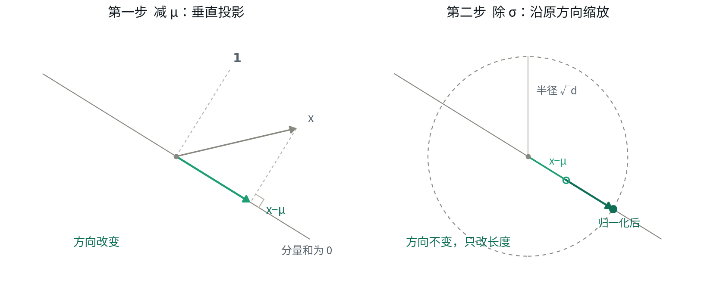
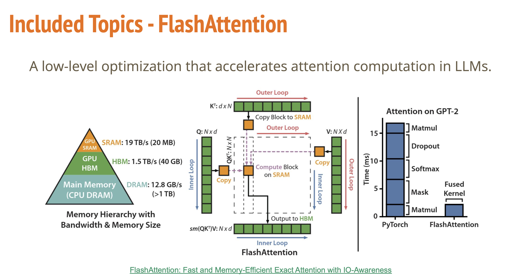
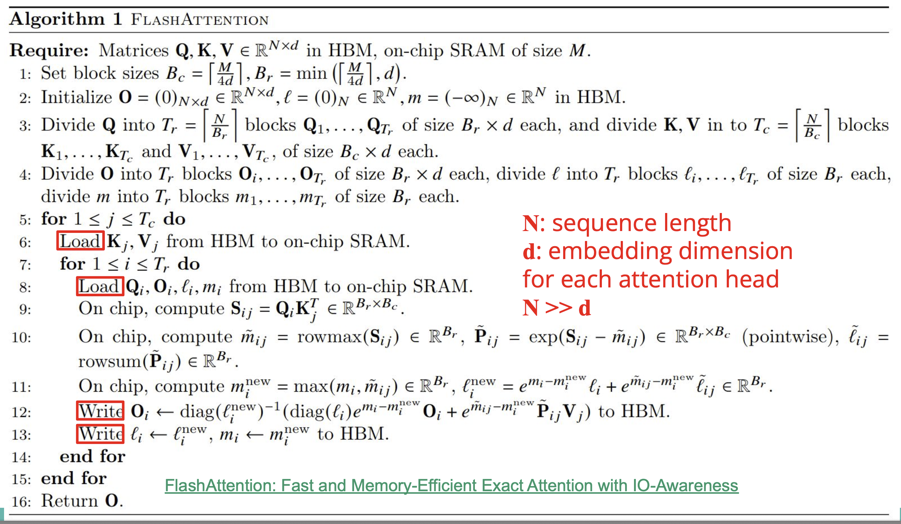

技术笔记
Transformer 技术笔记
以 Gemma 2 27B 为解剖对象，从 KV cache 一路推到信息论。章节有编号，可直接引用；把光标移到标题上点 § 可复制章节号。
以 Gemma 2 27B 为解剖对象，从 KV cache 一路推到信息论、对齐和评测。
作者：Weigang He 最后更新：2026-10-22
适合谁：已经知道 Transformer 大致结构、想把每个数字都算清楚的读者。需要线性代数和概率基础，不熟的地方第 11 章有速查。
为什么是 Gemma 2：它是结构清晰、公开资料齐全的稠密模型，每个参数都能对上论文和
config.json。更新的架构选择（MoE、MLA、其他位置编码）在 0.5 和对应章节里对照。怎么写成的：本文由作者与 Claude（Anthropic）多轮对话整理而成。具体数字和论文结论逐条对照原始论文、官方配置或数值实验核实，不确定的地方标"待核实"，发现过的错误记在附录 A。欢迎指错。
阅读路线：零基础先读 1 → 2.1–2.3 → 3.1 → 5.1–5.3 → 6.1；关心推理部署读 9 → 2.5 → 2.11 → 9.9；关心训练与对齐读 10 → 12。章节有编号，可以直接按"4.7 节"引用。
0速查表：Gemma 2 27B 全部关键数字
0.1架构参数
| 项目 | 值 | 备注 | 出处 |
|---|---|---|---|
d_model |
4608 | HF 里叫 hidden_size |
1.1 |
| 层数 | 46 | ||
| Query heads | 32 | 2.5 | |
| KV heads | 16 | GQA，算 KV cache 用这个 | 2.5 |
head_dim |
128 | 不等于 4608/32 = 144 | 2.1 |
| 注意力内部宽度 | 4096 | = 32 × 128 | 2.2 |
| FFN 中间宽度 | 36864 | 论文报 73728（= 2×，含 gate 和 up） | 3.1 |
| 词表 | 256000 | 公开权重的实际行数；论文报 256128 | 1.2 |
| 全局注意力跨度 | 8192 | 也是训练长度 | 2.9 |
| 滑动窗口 | 4096 | 局部层用，与全局层交替 | 9.1 |
| 位置编码 | RoPE，rope_theta = 10000 |
最慢一对维度波长 5.4 万 token | 2.8 |
| Tied embedding | 是 | 入口出口共用一张表 | 1.4 |
| 激活函数 | GeGLU | 3.1 | |
| Norm | RMSNorm，每层 4 个 | pre + post 都有 | 4.1 |
0.2参数拆解
| 组件 | 参数量 | 占比 |
|---|---|---|
| FFN（46 × 509.6M） | 23.44 B | 86.1% |
| Attention（46 × 56.6M） | 2.60 B | 9.6% |
| Embedding（256000 × 4608） | 1.18 B | 4.3% |
| RMSNorm（185 × 4608） | 0.85 M | 0.003% |
| 合计 | 27.23 B |
官方口径：non-embedding = 26,047,480,320，embedding = 1,180,237,824。
单层明细：
| 矩阵 | 形状 | 宽度来源 | 参数量 |
|---|---|---|---|
W_Q |
4608 × 4096 | 32 heads × 128 | 18.9 M |
W_K |
4608 × 2048 | 16 KV heads × 128 | 9.4 M |
W_V |
4608 × 2048 | 16 KV heads × 128 | 9.4 M |
W_O |
4096 × 4608 | 投影回 d_model | 18.9 M |
W_gate / W_up / W_down |
4608 × 36864 各一 | d_ffn，见 3.1 | 509.6 M |
| 单层合计 | 566.2 M |
K/V 只有 Q 的一半宽，因为 32 个 Q 头共用 16 组 KV——原因见 2.5。
0.3推理开销（A100 80GB，bf16）
| 项目 | 值 | 出处 |
|---|---|---|
| 权重显存 | 54.5 GB | 9.1 |
| KV cache / token | 368 KiB | 9.1 |
| FLOPs / token | 54.5 GFLOPs | 9.3 |
| 读权重耗时 | 27.2 ms | 9.4 |
| 算 1 token 耗时 | 0.17 ms | 9.4 |
| 算力利用率 | 0.6% | 9.4 |
| 剩余显存可放 | ~6.8 万 token | 9.1 |
| 满 8192 上下文单条 | 3.09 GB | 9.1 |
0.4概念地图：五个词分别在哪一层
Attention / Transformer / encoder / decoder / autoregressive 不在同一个轴上，不是互相替代的选项。混淆几乎都源于把它们当成同一层的概念。
| 概念 | 属于哪一类 | 同轴上的替代品 |
|---|---|---|
| Attention | 计算机制（怎么混合信息） | 卷积、循环、池化 |
| Transformer | 网络架构（用哪些积木搭） | LSTM、CNN、Mamba |
| Encoder / Decoder | 结构角色（在信息流里干什么） | — |
| Autoregressive | 生成方式 / 训练目标 | 掩码语言建模、扩散 |
层层搭建的关系：
Attention（机制）
↓ 配上 FFN、残差、归一化、位置编码
Transformer 层（架构）
↓ 按 mask 方式 + 有无 cross-attention 分工
Encoder 栈 / Decoder 栈（角色）
↓ 配上训练目标
自回归 LM / 掩码 LM / 序列到序列
每一层的选择都独立于其他层，所以能自由组合：
| 组合 | 例子 |
|---|---|
| Attention 但不是 Transformer | Bahdanau 2014——attention 挂在 RNN 上 |
| 自回归但不是 Transformer | n-gram、RNN 语言模型、WaveNet |
| Transformer 但不自回归 | BERT |
| Encoder 但不是 Transformer | BiLSTM 编码器 |
历史顺序最能说明问题
| 年份 | 出现的东西 |
|---|---|
| 2003 | 神经自回归语言模型（Bengio） |
| 2014 | Encoder-decoder / seq2seq（Sutskever, Cho） |
| 2014 | Attention（Bahdanau，加在 RNN seq2seq 上） |
| 2017 | Transformer（Vaswani） |
Attention 比 Transformer 早三年。 论文标题《Attention Is All You Need》的字面意思就是：seq2seq 里本来 RNN 和 attention 并存，这篇说把 RNN 扔掉、只留 attention 就够了。
所以 attention 是零件，Transformer 是整机——而且按 3.5，attention 只占 Gemma 2 参数的 9.6%，FFN 占 86%。
Encoder vs Decoder：真正的区别只有 mask
这是最大的误解点。Encoder 层和 decoder-only 层结构完全相同，唯一差别是注意力 mask（见 2.3）：
双向（Encoder） 因果（Decoder）
k₁ k₂ k₃ k₄ k₁ k₂ k₃ k₄
q₁ ■ ■ ■ ■ q₁ ■ · · ·
q₂ ■ ■ ■ ■ q₂ ■ ■ · ·
q₃ ■ ■ ■ ■ q₃ ■ ■ ■ ·
q₄ ■ ■ ■ ■ q₄ ■ ■ ■ ■
只有 seq2seq 里的 decoder 多一样东西：cross-attention（见 2.7）。
三大家族
| Encoder-only | Decoder-only | Encoder-Decoder | |
|---|---|---|---|
| 代表 | BERT | GPT / Llama / Gemma | T5、原始 Transformer、Whisper |
| self-attn mask | 双向 | 因果 | 编码器双向，解码器因果 |
| cross-attention | 无 | 无 | 有 |
| 主要训练目标 | 掩码语言建模 | 自回归 | 自回归（仅解码器侧） |
| 典型用途 | 理解、分类、检索 | 生成 | 翻译、语音转文本 |
| KV cache | 用不上 | 必需 | 解码器侧需要 |
| 输入输出词表 | 同一套 | 同一套 | 可以不同（见 1.5） |
⚠️ "Decoder-only" 是个坏名字。 严格说 GPT 既没有 encoder 可对，也没有 cross-attention——它根本不"解码"任何东西。它真正继承自 seq2seq decoder 的只有因果 mask 这一件事。更准确的叫法是 causal LM。这个名字是历史包袱，但已经定型了。
Autoregressive 是第四个轴
定义纯粹是概率分解——概率论的链式法则，对任何联合分布都精确成立，跟是不是语言、是不是用神经网络无关：
$$p(x_1 \dots x_n) = \prod_{t} p(x_t \mid x_{<t})$$
| 符号 | 含义 |
|---|---|
| $x_1,\dots,x_n$ | 长度 $n$ 的 token 序列 |
| $p(x_1\dots x_n)$ | 整句话的联合概率 |
| $x_{<t}$ | 第 $t$ 个之前的所有 token，即 $x_1,\dots,x_{t-1}$ |
| $p(x_t\mid x_{<t})$ | 给定前文，下一个词是 $x_t$ 的条件概率 |
展开成 $n=3$ 更直观：
$$p(x_1,x_2,x_3) = p(x_1)\cdot p(x_2\mid x_1)\cdot p(x_3\mid x_1,x_2)$$
为什么这样拆不是简化，而是恒等式：先猜第一个词，再在"第一个已知"的条件下猜第二个，再在"前两个都已知"的条件下猜第三个……逐步的条件概率乘起来，就等于一次性猜中整句话的概率。跟"抽牌不放回"是同一个道理——第二张牌的概率要在"第一张已经抽走"的条件下算。
训练时让 $p_\theta(x_t\mid x_{<t})$（神经网络参数化）逼近真实分布，两边取 log、连乘变连加、取负号，就是 6.4 的 CE loss——同一公式的对数似然版本见 11.3。
它和因果 mask 的关系是：因果 mask 使自回归训练能并行——一次前向就能算出所有位置的 loss（teacher forcing），不用跑 n 遍。但两者不等价：
- 自回归可以没有 mask——每步把前缀重新喂一遍就行，正是 9.2 讲的"不用 KV cache 就重算"，只是慢 N 倍
- 同一个模型可以换目标——BERT 是 Transformer encoder + 掩码语言建模，不自回归
Gemma 2 27B 对号入座
| 维度 | 取值 |
|---|---|
| 机制 | Self-attention（GQA 变体，见 2.5） |
| 位置编码 | RoPE（见 2.8） |
| 架构 | Transformer |
| 角色 | Decoder-only（无 cross-attention） |
| Mask | 因果 + 局部层加 4096 滑动窗口 |
| 训练目标 | 自回归 |
为什么现在几乎全是 decoder-only
- 架构简单——一个栈，没有 cross-attention，没有两套词表，扩展和并行都好做
- 任务统一——翻译、问答、摘要都能写成"文本续写"
- 实证扩展性更好——同等算力下 scaling 表现更强
encoder-decoder 的优势（对输入做双向编码）大部分能靠"把输入放进 prompt"找回来，代价是输入只能被因果地看一遍。剩下还在用 encoder-decoder 的，主要是输入模态和输出模态本质不同的场景。
0.5Gemma 2 之外：同一位置上的其他选择
Gemma 2 是一个"标准"的稠密 decoder-only 模型。别的模型在下面几个位置上做了不同选择，每一行都是同一个零件的替代品，可以和其他行自由组合：
| 位置 | Gemma 2 27B 的选择 | 其他选择 | 改了什么 | 出处 |
|---|---|---|---|---|
| 位置编码 | RoPE，base 10000 | 大 base / PI / YaRN；ALiBi；NoPE；RoPE 与 NoPE 按层混用 | 能外推多长 | 2.8–2.10 |
| K/V 怎么省 | GQA-16 | MHA、MQA、MLA | KV cache 大小 | 2.5、2.11 |
| FFN | 一个稠密 GeGLU | MoE（N 个专家选 k 个） | 参数量 vs 每 token 计算量 | 3.6–3.7 |
| 微调方式 | （发布的是全量训练的权重） | 全量微调、LoRA、QLoRA | 训练显存、能学多少新东西 | 10.9 |
| 部署精度 | bf16 | int8 / int4（GPTQ、AWQ、SmoothQuant） | 每步读多少字节 | 9.9–9.10 |
前三行是架构层，建模时写进 config，换了就要重训（或付出微调代价"补票"）；"微调方式"是训练层，在训好的底座上做，不改结构（LoRA 合并后形状不变）；最后一行是部署层，训好之后随时可换。这个分层见 2.5 那张表。
DeepSeek-V3 是这几行全换掉的例子：MLA + MoE（256 选 8 + 1 共享）+ YaRN 扩到 128K，671B 总参数、每 token 激活 37B，每 token KV cache 只有 68.6 KiB（Gemma 2 27B 是 368 KiB）。
第一部分：模型骨架
1基础概念
1.1d_model：贯穿始终的宽度
定义：描述一个 token 需要多少个数字。Gemma 2 27B 是 4608。
猫 → [ 0.31 | -1.24 | 0.08 | 2.06 | ... | -0.55 | 1.37 ]
└────────── 4608 个数 ──────────┘
关键性质：全程不变。
输入 [4608] → 第1层 → [4608] → ... → 第46层 → [4608] → 输出
层内部可以任意变宽变窄（FFN 撑到 36864 再压回来），但层间接口永远是 4608。原因是残差连接 输出 = 输入 + F(输入)，两个东西相加长度必须一致。这条固定宽度的通道叫 residual stream（残差流）。
别名对照：d_model（论文）= hidden_size（HF）= n_embd（GPT-2/nanoGPT）。
易混点：d_model 是"每个词多厚"，与序列长度无关。10 个词的句子是 10 × 4608 的表格，100 个词是 100 × 4608——行数随句子变，列数永远 4608。
规模参照：GPT-2 small 768 / Llama 2 7B 4096 / Gemma 2 27B 4608 / Llama 3 70B 8192。
1.2词表：256128 的含义
模型认的不是字也不是词，是一份训练前定死的清单，共 256000 个条目（论文报 256128，见下）。任何输入都要先被切成清单里的条目。
为什么走 subword 路线：
- 按词分 → 词是无穷的，遇到清单外的词只能标
<unk>，信息全丢 - 按字符分 → 序列暴长，单字符几乎不携带语义
折中方案（Gemma 用 SentencePiece）：
"the" → 1 个 token
"tokenization" → "token" + "ization" 2 个
"anthropomorphism" → "anthrop" + "omorph" + "ism" 3 个
"猫" → 1 个
"asdkjfh" → 一堆字节碎片（兜底）
词表里装了什么：完整常用词、词片（ing/tion）、单字符（汉字/假名/西里尔）、标点空格、256 个字节兜底、特殊控制符（<bos>/<eos>/<start_of_turn>）。
256128 还是 256000：Gemma 2 论文的参数表写的是 256128，但公开权重的 config.json（vocab_size）和官方博客打印出的 Embedding(256000, 4608) 都是 256000。256000 本身就能被 128 整除（= 2000 × 128），所以多出的 128 并不是为了对齐；它是什么，论文没有说明，待核实。下文公式里的词表大小沿用论文的 256128，换成 256000 后所有数字在文中保留的精度下都不变（例如 ln 256000 与 ln 256128 都是 12.45）。
大词表的权衡：
| 模型 | 词表 |
|---|---|
| Llama 2 / Mistral | 32,000 |
| GPT-4 (cl100k) | ~100,000 |
| Llama 3 | 128,256 |
| Gemma 2 | 256,000（论文报 256,128） |
好处是同样文本切出的 token 更少（对中日阿等非英语尤其明显）→ 序列短、KV cache 省、8192 上下文装得下更多真实内容。
代价对小模型特别残酷：
| Gemma 2 | embedding | 占总参数 |
|---|---|---|
| 27B | 1.18 B | 4.3% |
| 9B | 0.92 B | 9.9% |
| 2B | 0.59 B | 22.6% |
1.3Embedding：查表，不是矩阵乘
"猫 在 睡觉"
↓ tokenizer（字符串 → 整数）
[ 12456, 3021, 88907 ]
↓ 去 256000 × 4608 的表里按行号取
[4608个数], [4608个数], [4608个数]
数学上等价于 one-hot × 权重矩阵，但 one-hot 里只有一个 1，乘出来必然是矩阵的第 k 行。所以实现上直接用数组下标取，≈ 0 FLOPs。
入口占 1.18B 显存，但不占算力。
Gemma 的一个小动作：查表后要乘以 √4608 ≈ 67.9 再送进第一层，为了让初始数值尺度与 RMSNorm 配合。
1.4tied embedding
定义：入口和出口共用同一个张量，不是"两张数值相同的表"。
model.lm_head.weight is model.model.embed_tokens.weight
# tied → True
# untied → False
出口用它的转置：
$$\text{入口：}E[k] \qquad\longleftrightarrow\qquad \text{出口：}\text{logits} = h\,E^\top$$
三种判别方式：
| 方法 | tied | untied |
|---|---|---|
config.json |
"tie_word_embeddings": true |
false |
| 权重文件 | 没有 lm_head.weight |
有 |
| 参数量 | 少 V × d |
多 V × d |
常见误解："初始化成一样再各自训练"——那不叫 tied，那叫 untied 但初始化相同。tied 的关键是共享持续到训练结束：两处梯度加到同一个张量上（见 5.5）。
为什么说得通：入口问"这个 token 代表什么意思"，出口问"我想说的意思最接近哪个 token"。同一套语义坐标系的两面。
现状（小模型 tie，大模型不 tie）：
| 模型 | tied |
|---|---|
| GPT-2 | 是 |
| Llama 2 / 3.1 8B | 否 |
| Llama 3.2 1B / 3B | 是（转向） |
| Qwen3 0.6B / 4B | 是 |
| Qwen3 8B | 否 |
| Gemma 2 全系 | 是 |
1.5输入输出词表能不能不同
先分清两件事：
| 说的是什么 | 常见吗 | |
|---|---|---|
| A. 两个矩阵 | 词表相同，权重表两张 | 很常见（untied） |
| B. 两套词表 | 输入认识的和输出能产生的是不同集合 | 罕见 |
decoder-only 几乎不可能是 B，因为自回归回灌：
第 t 步: 输出 token ID = 3021
↓ 回灌
第 t+1 步: 输入 token ID = 3021
两侧词表不一致，模型立刻精神分裂。这是结构决定的，不是设计选择。
B 出现在没有回灌的地方：
源文本 → [encoder 输入 embedding] ← 这里可以独立
↓ cross-attention
[decoder 输入 embedding] ┐
↓ ├ 必须同词表
[decoder 输出 LM head] ┘
实例：Helsinki-NLP OPUS-MT / Marian 的 MarianTokenizer 要求源语言和目标语言用不同的 SentencePiece 模型（早期版本切词规则分两套但 ID 字典共享，后来才加了可选的 target_vocab.json）。
作为对比，原始 Transformer 论文的英德翻译用的是共享的 37000 BPE 词表——同属拉丁字母，共享划算。
跨模态是 B 的极端形式：
| 模型 | 输入 | 输出 |
|---|---|---|
| Whisper | 梅尔频谱（无词表） | 文本 token |
| LLaVA / Gemma 3 视觉版 | 文本 token + 图像 patch 向量（软 token，无 ID） | 只有文本 |
| MusicGen / Bark / VALL-E | 文本 token | 音频 codec token |
反例很有启发：Chameleon、Emu3 把图像量化后塞进同一个词表——正因为统一了，才能像输出文字一样输出图像。想让模型生成某模态，该模态必须在输出词表里。
伪 B：logit masking。有些 token 只能进不能出（<bos>、Gemma 那 128 个占位符、约束解码），做法是把 logit 设成 −∞，词表还是同一套。
实际后果：投机解码（9.5）要求草稿模型和目标模型词表严格一致，所以各家会发布同词表的大小配对。词表是模型家族的接口标准，换掉它的代价远比换权重大。
2Attention
2.1head_dim 与 d_model 已经解耦
head_dim = d_model / n_heads 只是原始论文的约定（512/8=64），不是数学要求。
真正的形状约束只有两条：Q 和 K 的 head_dim 必须相同（点积要求）；W_O 的输出必须是 d_model（残差要求）。中间那个宽度 n_h × d_head 完全自由。
Gemma 2 全系都不遵守约定：
| 型号 | d_model | heads | d_model/heads | 实际 head_dim | 内部宽度 |
|---|---|---|---|---|---|
| 2B | 2304 | 8 | 288 | 256 | 2048（窄） |
| 9B | 3584 | 16 | 224 | 256 | 4096（宽于 d_model） |
| 27B | 4608 | 32 | 144 | 128 | 4096（窄） |
9B 那行说明这不是单向的"瓶颈设计"，两个维度是各自独立调参的。
为什么 27B 选 128 不选 144：
- 硬件 — FlashAttention 等 kernel 通常只对
head_dim ∈ {64,128,256}优化。144 = 16×9 带因子 3，要 pad 到 160/192，白白浪费 - KV cache 与 d_model 解耦 — KV cache ∝
n_kv × d_head，可以放大 d_model 而不让 cache 跟着膨胀 - d_model 是为别的事选的 — 4608 = 512×9，方便张量并行切分
实际后果（会算错）：
- KV cache 用 144 算 → 424 KiB，比真实的 368 KiB 多 15%
W_Q会被算成 4608×4608 = 21.2M，实际 4608×4096 = 18.9M
head_dim必须从 config 读，绝不能自己除。
趋势：Gemma 3 27B（5376/32 = 168 ≠ 128）、DeepSeek-V3 的 MLA（见 2.11）都解耦了。head_dim 锁在 128 附近由 kernel 决定，d_model 和 n_heads 各按容量和并行度独立调。
2.2先投影，再切头
"把 4608 切成 32 段"是错误的说法，正确流程：
x: [ x₁ ... x₄₆₀₈ ] ← 残差流
↓ 乘 4608 × 4096 的稠密矩阵 W_Q
q: [ q₁ ... q₄₀₉₆ ] ← 每个 q 都是全部 4608 个数的加权和
↓ ← 到这一步才切
头1: q₁..q₁₂₈ ┊ 头2: q₁₂₉..q₂₅₆ ┊ ... ┊ 头32
切的是投影之后的 4096，不是原来的 4608。 第 1 个头看的 128 个数是全部 4608 个分量的 128 种加权组合，x 的每个分量都参与了每个头。
4096 < 4608 意味着压缩，不是截断：
- 截断 = 后 512 个数扔了
- 压缩 = 4608 个数揉进 4096 个格子，损失均匀摊开
更重要的是残差流本身没被削窄。残差流 = 残差流 + W_O(注意力输出)，原有 4608 维信息一个没少，注意力只是加了一份活在 4096 维子空间里的贡献。
真正紧的瓶颈不在这：
| 瓶颈 | 压缩比 |
|---|---|
| 4608 → 4096 | 11% |
| 每个头只有 128 维 | 4608 → 128，97% |
| GQA：32 个 Q 头共用 16 组 KV | 一半 KV 被共享 |
换来了什么：每层省 7.1M 参数（46 层共 326M），KV cache 省 11%（414 → 368 KiB）。
2.3Softmax 归一化的轴
精确表述：对某一个头里的某一个 query，它对所有可见 key 的注意力之和 = 1。
从 q、k 到注意力权重，一共三步（第 h 个头，第 i 个位置的 query 看第 j 个位置的 key）：
$$\underbrace{s^{(h)}_{ij} = \frac{q^{(h)}_i \cdot k^{(h)}_j}{\sqrt{d_{\text{head}}}}}_{\text{① 打分}} \qquad \underbrace{s^{(h)}_{ij} \leftarrow -\infty \;\;(j \text{ 不可见时})}_{\text{② mask}} \qquad \underbrace{A^{(h)}_{ij} = \frac{\exp(s^{(h)}_{ij})}{\sum_{j'} \exp(s^{(h)}_{ij'})}}_{\text{③ softmax}}$$
| 符号 | 含义 | Gemma 2 27B |
|---|---|---|
| $q^{(h)}_i$ | 第 i 个 token 在第 h 个头的 query 向量（2.2 投影、切头之后） | 128 维 |
| $k^{(h)}_j$ | 第 j 个 token 在同一头（GQA 下是同一组，见 2.5）的 key 向量 | 128 维 |
| $s^{(h)}_{ij}$ | 打分（logit）：缩放后的点积，任意实数 | — |
| $\sqrt{d_{\text{head}}}$ | 缩放因子 | ⚠️ 用的是 $\sqrt{144} = 12$，不是 $\sqrt{128}$（见 A.3） |
| $A^{(h)}_{ij}$ | 注意力权重：softmax 之后，非负、行和为 1 | — |
| $j'$ | 分母里的求和变量，遍历第 i 行所有可见的 key | — |
整张表写成矩阵就是 $S^{(h)} = Q^{(h)}K^{(h)\top}/\sqrt{d_{\text{head}}}$、$A^{(h)} = \text{softmax}(S^{(h)})$（逐行做），再乘 $V$ 得到输出 $A^{(h)}V^{(h)}$。本文统一用小写 $s_{ij}$ 表示打分、$A$ 表示注意力权重；9.7 沿用 FlashAttention 论文的记号，那里的 $S$ 就是这里的 $s_{ij}$ 排成的矩阵，$P$ 就是这里的 $A$。
每一步在干什么：
- ① 打分：点积衡量"q 问的问题"和"k 宣传的内容"对不对得上（2.4）。为什么除以 $\sqrt{d_{\text{head}}}$：原论文的解释是，若 q、k 的各分量独立、均值 0、方差 1，点积 $\sum_{c=1}^{d} q_c k_c$ 的方差就是 d——维度越大，打分的数值越大，softmax 会被推到梯度极小的饱和区。除以 $\sqrt d$ 正好把方差拉回 1
- ② mask：因果 mask 把 $j > i$ 的打分设为 $-\infty$，Gemma 局部层再把超出 4096 滑动窗口的也设掉。$e^{-\infty} = 0$，这些位置的权重恰好为 0，也不进分母
- ③ softmax：取指数把所有打分变成正数，再除以这一行的总和，行和就等于 1。softmax 本身的性质（平移不变、指数放大差异、永不为零）见 11.3
数值例子（下面那张表 q₃ 那一行是怎么来的；只有 4 个位置，q₃ 只能看 k₁~k₃）：
| k₁ | k₂ | k₃ | k₄ | |
|---|---|---|---|---|
| 原始点积 $q_3 \cdot k_j$ | 4.0 | 0.0 | 17.4 | （不可见） |
| ① 除以 $\sqrt{144} = 12$ | 0.333 | 0 | 1.450 | — |
| ② mask | 0.333 | 0 | 1.450 | $-\infty$ |
| $\exp(\cdot)$ | 1.396 | 1.000 | 4.263 | 0 |
| ③ 除以总和 6.659 | 0.21 | 0.15 | 0.64 | 0 |
对照：如果不除 $\sqrt{d}$，直接对 [4.0, 0, 17.4] 做 softmax，结果是 [0.0000015, 0.00000003, 0.999998]——几乎全部压在 k₃ 上，另外两个位置的梯度接近 0，这就是原论文说的"饱和区"。
⚠️ 实际代码不会直接算 $\exp(s_{ij})$：打分一大就会上溢。标准做法是每行先减去这一行的最大值再取指数（结果不变），9.7 的在线 softmax 就建立在这个技巧上。
三个细节：
- 包括自己 —
q_i和k_i那一项也在分母里，且权重往往不小 - "所有"要打折 — causal mask 下只能看
j ≤ i；Gemma 局部层还有 4096 窗口 - 头与头不竞争 — 32 个头各自有完整的 1.0 预算，一层里有
32 × t行，每行独立等于 1
行随机，不是双随机：
k₁ k₂ k₃ k₄
q₁ 1.00 · · · → 行和 1.00 ✓
q₂ 0.62 0.38 · · → 行和 1.00 ✓
q₃ 0.21 0.15 0.64 · → 行和 1.00 ✓
q₄ 0.30 0.09 0.11 0.50 → 行和 1.00 ✓
───── ───── ───── ─────
列和 2.13 0.62 0.75 0.50 ← 无约束
含义：分配出去的注意力守恒，被别人关注的量不设限。
Attention sink：因为行和被强制为 1，模型没法"谁都不看"。不需要上下文时，那 1.0 必须找地方倒掉，于是自发倾泻到 BOS 或句首标点上。这不是 bug，是归一化约束的必然产物——也是 StreamingLLM 那类方法必须保留最前面几个 token 的原因。
2.4token mixing vs channel mixing
| 步骤 | 混合方向 | 可训练参数 |
|---|---|---|
xW_Q, xW_K, xW_V |
跨特征 | ✅ |
QKᵀ |
跨位置 | ❌ |
| softmax | 都不跨（逐行归一化） | ❌ |
A·V |
跨位置 | ❌ |
·W_O |
跨特征 | ✅ |
| FFN 三个矩阵 | 跨特征 | ✅ |
所有参数都在做 channel mixing。跨位置的两步，一个参数都没有。
静态 vs 动态混合：
- FFN 的 channel mixing 是静态的 — 矩阵训完固定，对任何输入都一样
- Attention 的 token mixing 是动态的 — 混合权重
A每次前向现算，看不同句子结果完全不同
W_Q/W_K 学的不是混合权重，而是**"怎么算出混合权重"的规则**：
W_Q— 这个词该问什么问题W_K— 这个词该对外宣传自己是什么- 点积 = 问题和宣传对不对得上
所以 attention 叫 data-dependent routing。
W_Q 和 FFN 矩阵的区别：结构上没有任何区别，都是 4608 × N 的稠密矩阵，都逐位置独立作用。区别 100% 在下游怎么用它的输出——FFN 的输出留在自己这个词里，W_Q 的输出拿去和别的词的 K 点积。
注意力矩阵 A 不是学出来的——它不存在于模型文件里，是每次前向临时算出又扔掉的。存盘的只有 W_Q/W_K/W_V/W_O。这也是 Transformer 能处理任意长度序列的原因：A 的尺寸是 t × t，参数量与 t 无关。
图形化（行=位置，列=特征）：
自注意力：沿位置轴（竖着混） 全连接：沿特征轴（横着混）
特征 → 特征 →
词1 ░░█░░ 词1 ░░░░░
词2 ░░█░░ 词2 ░░░░░
词3 ░░█░░ 词3 █████
词4 ░░█░░ 词4 ░░░░░
严格说注意力内部大部分也是 position-wise 的——四个投影都逐位置独立，真正跨位置的只有 A·V。
2.5GQA：为什么 K/V 比 Q 窄一半
三种方案的对照：
| 方案 | Q 头 | KV 头 | KV cache |
|---|---|---|---|
| MHA（多头，2017 原版） | 32 | 32 | 100% |
| GQA（分组，Gemma 2 用） | 32 | 16 | 50% |
| MQA（多查询） | 32 | 1 | 3% |
MHA 是每个 Q 头配一个专属的 K/V 头。MQA 走另一个极端，全部 Q 头共用 1 组。GQA 是中间路线：分成 16 组，每组 2 个 Q 头共享一组 K/V。
MHA GQA（每 2 个 Q 头一组）
Q₁ Q₂ Q₃ Q₄ Q₁ Q₂ Q₃ Q₄
│ │ │ │ ╲ ╱ ╲ ╱
K₁ K₂ K₃ K₄ KV₁ KV₂
投影矩阵的宽度直接跟着头数走：
$$W_Q \text{ 输出} = 32 \times 128 = 4096 \qquad W_K, W_V \text{ 输出} = \mathbf{16} \times 128 = \mathbf{2048}$$
所以 W_K/W_V 的参数量正好是 W_Q 的一半（9.4M vs 18.9M）。
这是架构决策，不是部署优化
这个层次差别最容易搞混：
| 什么时候定 | 能不能事后改 | |
|---|---|---|
| GQA / MLA（MLA 见 2.11） | 建模时，写进 config | ❌ 改了权重就报废 |
| 量化（见 9.9）/ FlashAttention / PagedAttention | 部署时 | ✅ 随便换 |
| 投机解码 / chunked prefill | 运行时 | ✅ 随便开关 |
n_kv_heads = 16 写进 config 的那一刻，W_K 的形状就是 4608 × 2048，从随机初始化的第一步起就是这个尺寸。它和 9.4 表里其他提升算术强度的手段不是一类东西——别的都能在训好的模型上加，GQA 必须一开始就选。
训练时的两个影响
① 参数量少了。 每层 W_K + W_V 从 MHA 的 37.7M 降到 18.9M，46 层共省 868M——这些参数从一开始就不存在，不是训完剪掉的。
② 梯度天然聚合。 MHA 里 K[0] 只服务 Q[0]，梯度来源单一。GQA 里 K[0] 同时被 Q[0] 和 Q[1] 用，反向传播时两股梯度加到同一块权重上：
$$\frac{\partial L}{\partial W_K^{(0)}} = \left.\frac{\partial L}{\partial W_K^{(0)}}\right|_{Q_0} + \left.\frac{\partial L}{\partial W_K^{(0)}}\right|_{Q_1}$$
结构上和 tied embedding 那个 $g^{\text{in}} + g^{\text{out}}$ 是同一件事——共享权重 = 梯度求和（见 5.5）。
后果是这组 K/V 被训练成"对两个 Q 头都好用"的折中表示，而不是为单个头定制。这才是 GQA 真正的质量代价所在，也是它无法事后加装的原因：权重必须在这个约束下长出来。
例外：uptraining 可以低价补票
GQA 论文的核心贡献之一恰恰是——已训好的 MHA 模型可以改造成 GQA：
- 每组的多个 K/V 头取平均（mean-pool）合成一个
- 用约 5% 的原始预训练算力继续训一小段
论文报告这样恢复的模型质量接近从头训的 GQA。Llama 2 的 34B / 70B 走的就是这条路。
用 mean-pool 而不是随便挑一个头，正是为了保留组内那几个头的共同信息——和上面"折中表示"是同一个逻辑。
repeat_kv：16 头复制成 32 头
解码一个 token（历史长度 t）时的形状变化：
Q（现算） [32, 1, 128]
K（从 cache 取） [16, t, 128] ← 存的就是 16 份
↓ repeat_kv，每份复制 2 遍
[32, t, 128] ← 形状对齐
↓
QKᵀ [32, 1, t]
复制出来的是完全相同的数据，不携带任何新信息，纯粹为了让形状对上。因为 attention 是逐头独立计算的，Q 有 32 个头就要跑 32 次，每次都得有一个对应的 K[i]。
n_rep = 32 / 16 = 2，配对方式是相邻的 Q 头共享：
| KV 头 | 服务的 Q 头 |
|---|---|
| 0 | 0, 1 |
| 1 | 2, 3 |
| … | … |
| 15 | 30, 31 |
分工：存储 16 头（省的是这里），计算 32 头（和 MHA 一样）。
实际不会真的复制：repeat_kv 是 HuggingFace 参考实现的朴素写法。生产 kernel（FlashAttention、PagedAttention）直接让 2 个 Q 头读同一块 KV 显存，一次读入 SRAM 供两个头用——既不多占显存，还把 HBM 读取量真的减半了。所以优化实现里 GQA 的收益比朴素实现更大。
FLOPs 到底省不省
省，但很少。attention 核心（QKᵀ、A·V）确实不省，但投影那一步省了，因为 W_K/W_V 只有一半大：
| 每层每 token 的 QKV 投影 | |
|---|---|
| 若用 MHA | 113.2 MFLOPs |
| GQA-16 | 75.5 MFLOPs |
46 层累计省 1.74 GFLOPs，占总量（56.2 → 54.5 GFLOPs）约 3%。
GQA 省约 3% 的 FLOPs，省 50% 的 KV cache。收益压倒性地在显存和带宽，但不是零。
2.6为什么甜点区落在 8~16 组
先说清楚：没有能预测出"8"的理论。 GQA 论文是先做实验再解释的。下面几条机制让这个数字显得合理，但不是推导——如果当初实验结果是 4 或 32，同样能编出自洽的故事。
不过其中有一条是硬约束，它解释了为什么下限卡在 8 而不是更低。
机制一：组内的注意力模式并没有被合并
最容易误解的地方。共享 K/V 之后，同组的两个 Q 头仍然有各自独立的 W_Q：
$$s_1 = q_1 \cdot k \qquad s_2 = q_2 \cdot k \qquad q_1 \neq q_2$$
所以它们算出来的注意力分布依然不同，各看各的。被牺牲的不是"能不能有不同的模式"，而是"能在哪个子空间里匹配"。
用 2.4 的话说：W_Q 学的是"该问什么问题"，W_K 学的是"该宣传自己是什么"。GQA 保留了每个头独立提问的能力，只是让同组的头面对同一份宣传词。
机制二：key 子空间的预算
把每层所有 K 投影的总维度加起来，和残差流宽度比：
| 方案 | key 空间总维度 | 占 d_model (4608) |
|---|---|---|
| MHA (32) | 4096 | 88.9% |
| GQA-16 | 2048 | 44.4% |
| GQA-8 | 1024 | 22.2% |
| MQA (1) | 128 | 2.8% |
MQA 为什么崩得明显，这一行就够了——全部 32 个头必须在同一个 128 维子空间里找匹配，而残差流有 4608 维，绝大部分信息在 K 侧根本无法被区分。
2048 维为什么够用，可以接回 8.3 的叠加：近似正交方向的容量按 $e^{d\varepsilon^2}$ 走。d 从 4096 减到 2048，容量是开平方而不是减半——如果原来能装 $10^{40}$ 个方向，现在是 $10^{20}$，对一层需要区分的特征数来说依然绰绰有余。
⚠️ 这个论证的前提是特征确实 packed 到接近 JL 上界，属于强假设。当直觉用，别当证明。
机制三：头本来就大量冗余
这可能是最实在的经验解释。有一整条线的研究表明多头注意力里大部分头是可裁的：
- Michel et al. 2019（Are Sixteen Heads Really Better than One?）——测试时剪掉大比例的头，性能几乎不掉，很多层甚至可以只剩一个头
- Voita et al. 2019 —— 只有少数头是"专职"的（位置头、句法头、罕见词头），其余可剪
如果一层里真正做不同工作的头本来就只有十来个，那么给 32 个 Q 头配 16 组 K/V 根本不是约束——原本的多样性就没用满。
机制四：省的量按几何级数衰减
这是"甜点区必然存在"的原因，也是唯一能推出来的部分。KV cache 正比于组数，每次对半砍：
| 从 → 到 | 剩余 cache | 本次新增节省 |
|---|---|---|
| 32 → 16 | 50% | 50 个百分点 |
| 16 → 8 | 25% | 25 |
| 8 → 4 | 12.5% | 12.5 |
| 4 → 2 | 6.25% | 6.25 |
| 2 → 1 | 3.1% | 3.1 |
每砍一刀，收益减半。 而质量代价的走向正相反——前几刀几乎无感（机制三：冗余在被消耗），等冗余耗尽、机制二的子空间预算开始吃紧，代价就陡然上升。
一条几何衰减的收益曲线，一条先平后陡的代价曲线，必然有拐点。拐点的存在是可预测的，位置是经验的。
机制五：张量并行是硬地板
这条最实在，也最少被提。TP 切分是按头切的。如果 kv_heads < TP 并行度，同一个 KV 头就必须在多张卡上各存一份：
TP=8, kv_heads=8 → 每卡 1 组 KV ✅ 内存真省了
TP=8, kv_heads=4 → 每组被 2 张卡复制 ❌ 总占用回到 8 组的水平
低于 TP 度之后，继续减 KV 头不再省任何内存。 而 TP=8 是当前的事实标准（单机 8 卡）。
所以 8 不是一个软性的质量权衡点，而是继续往下走收益直接归零的位置。Gemma 2 27B 取 16，还额外留出了 TP=16 的余地。
归纳
| 边界 | 卡在哪 |
|---|---|
| 上限（不用 32） | 头本来就冗余，砍到一半白赚（机制三） |
| 下限（不低于 8） | 张量并行下再减不省内存（机制五）+ key 子空间开始不够（机制二） |
| 拐点必然存在 | 收益几何衰减 vs 代价加速上升（机制四） |
| 拐点恰好在 8 | 纯经验 |
2.7Cross-attention
一句话：Q 来自解码器，K/V 来自编码器。
自注意力里 Q、K、V 都从同一序列算出。cross-attention 唯一的改动就是把 K/V 的来源换掉：
$$\text{Self}: \; Q,K,V = xW_Q,\, xW_K,\, xW_V \qquad \text{Cross}: \; Q = \underbrace{y}_{\text{解码器}}W_Q, \;\; K,V = \underbrace{x}_{\text{编码器输出}}W_K, W_V$$
其余部分——softmax、多头、$W_O$、残差——一模一样。它不是新机制，只是同一个机制换了数据来源。
用 2.4 那套说法：$W_Q$ 学"目标端这个位置该问什么"，$W_K$ 学"源端这个位置该宣传什么"。cross-attention 就是让译文去查原文。
三种注意力的对照（源长 $S$、目标长 $T$）：
| Q 来自 | K/V 来自 | 注意力矩阵 | mask | |
|---|---|---|---|---|
| 编码器自注意力 | 源 | 源 | $S \times S$ | 无（双向） |
| 解码器自注意力 | 目标 | 目标 | $T \times T$ | 因果 |
| 交叉注意力 | 目标 | 源 | $T \times S$ | 无因果 mask |
两个关键点：
- 注意力矩阵是长方形的——自注意力永远是方阵，cross-attention 一般不是
- 没有因果 mask——生成第 1 个词时就能看到整句原文，完全合理；因果性只约束目标端自己。（但仍需 padding mask，源句长短不一）
数据流
编码器（双向读完整源文）
"The cat sat"
↓
编码器输出 [S, d] ──────┐
│ 一次算好 K/V，之后反复用
解码器每层三个子层： ↓
"猫" → 自注意力(因果) → 交叉注意力(Q 从这来) → FFN → "坐"
decoder 层有三个子层，比 decoder-only 多一个，所以每层多一套 $W_Q/W_K/W_V/W_O$。
还有个容易忽略的自由度：$W_K, W_V$ 把编码器的 $d_{model}$ 映射到解码器的头维度——两侧的 $d_{model}$ 可以不一样。Whisper 就利用了这点。
历史：cross-attention 才是原版
| 年份 | 事件 |
|---|---|
| 2014 | Bahdanau——attention 诞生，就是 cross-attention（RNN 解码器查 RNN 编码器状态） |
| 2017 | Vaswani——self-attention 才被提出，把 attention 转向序列内部 |
Attention 最初的动机就是解决 seq2seq 的信息瓶颈：原来整句原文要压进一个固定向量，长句必然丢信息。也因此 cross-attention 矩阵有很强的可解释性——翻译模型里它近似就是词对齐表，画出来能看到 "cat" 对上"猫"。self-attention 的注意力图就没这么干净。
KV cache 的差别很大
| 缓存内容 | 随生成增长吗 | |
|---|---|---|
| 解码器自注意力 | 已生成的 $T$ 个 token 的 K/V | ✅ 每步 +1 |
| 交叉注意力 | 源序列的 $S$ 个 K/V | ❌ 算一次，固定不变 |
编码器输出在解码开始前就定了，源端 K/V 整个生成过程算一次就够。HF 的 encoder-decoder 模型每层缓存 4 个张量（自注意力 K/V + 交叉注意力 K/V），后两个是静态的。
所以对"输入长、输出短"的任务，encoder-decoder 在 cache 上有真实优势——Whisper 把 30 秒音频编码一次，之后每个字都白嫖那份 K/V。换成 decoder-only，音频 token 会一直躺在不断增长的同一个 cache 里。
Decoder-only 怎么做到同样的事
直接拼接，靠因果 mask：
[原文 tokens] [分隔符] [译文 tokens]
←── 译文的每个位置都能回看这一段 ──→
功能等价，但两处不同：
- 原文只能被因果地看一遍，不能双向编码（除非用 prefix-LM mask：前缀双向、续写因果）
- 原文的 K/V 混在同一个不断增长的 cache 里，不再是独立的固定块
换来的是架构简单——一个栈、一套词表、没有两套 $d_{model}$ 要对齐。1.5 讲的"输入输出词表能不能不同"，根源也在这：cross-attention 那条路上没有回灌，所以源端词表可以独立。
现在哪里还在用
| 模型 | 编码 | 解码 |
|---|---|---|
| Whisper | 音频频谱 | 文本 |
| 部分 VLM（如 Flamingo 系） | 图像 | 文本 |
| T5 / 翻译专用模型 | 源语言 | 目标语言 |
判断标准很实用：当输入不是"可以续写下去的同类东西"时，把它塞进同一个自回归序列就很别扭，这时 cross-attention 更自然。反过来，LLaVA 那类把图像投影成软 token 直接插进文本流的做法走的是 decoder-only 路线——两条路都能通。
2.8RoPE：把位置写成旋转角
一句话：RoPE 不往残差流里加任何东西，而是在算点积之前，把 q 和 k 按各自的位置转一个角度。转完以后，两者的点积只和"差了几个位置"有关。
先说为什么需要位置编码。 2.4 说过，跨位置的两步（$QK^\top$、$A\cdot V$）一个参数都没有，四个投影又都逐位置独立。所以如果什么都不加，在双向注意力里把句子里的词打乱顺序，每个词得到的输出只是跟着换了位置，内容完全不变（因果 mask 会带进一点顺序信息，见 2.10）。"狗咬人"和"人咬狗"对它来说是同一件事。位置信息必须从外面塞进去。
两种塞法：
| 做法 | 代表 | |
|---|---|---|
| 加在输入上（绝对位置） | 第 m 个位置的 embedding 加上一个位置向量 $p_m$ | 原始 Transformer 的正弦编码、GPT-2 的可学习位置表 |
| 加在注意力里（相对位置） | 只改 q·k 的打分，不碰残差流 | RoPE、ALiBi、T5 bias |
Gemma 2、Llama、Qwen、DeepSeek 都用 RoPE。这也是 4.2 那句"Gemma 用 RoPE，没有加性位置编码"的出处。
机制：两两一组，各自旋转
把 128 维的 q 拆成 64 对 $(q_{2i}, q_{2i+1})$，每一对看成平面上的一个点。第 m 个位置的 q，第 i 对转 $m\theta_i$ 角：
$$\begin{pmatrix} q'_{2i} \\ q'_{2i+1} \end{pmatrix} = \begin{pmatrix} \cos m\theta_i & -\sin m\theta_i \\ \sin m\theta_i & \cos m\theta_i \end{pmatrix} \begin{pmatrix} q_{2i} \\ q_{2i+1} \end{pmatrix}$$
k 也一样，只是用它自己的位置 n。记作 $q'_m = R_m q$、$k'_n = R_n k$。
为什么点积只剩相对位置：旋转矩阵有两个性质，$R_m^\top = R_{-m}$（转回去），$R_{-m}R_n = R_{n-m}$（转两次 = 转角度之和）。于是
$$q'^\top_m k'_n = (R_m q)^\top (R_n k) = q^\top R_m^\top R_n\, k = q^\top R_{n-m}\, k$$
绝对位置 m、n 消掉了，只剩 $n-m$。（2.3 的打分还要再除以 $\sqrt{d_{\text{head}}}$，这是个常数，不影响这里的结论。）用二维平面想更直观：两个向量同时转同一个角度，夹角不变，点积不变；所以只有"两者各转了多少"的差会影响结果。
数值验证（随机 128 维 q、k，$\theta$ 按下式取）：
| (m, n) | 相对距离 | $q'^\top_m k'_n$ |
|---|---|---|
| (10, 3) | 7 | 3.81497 |
| (1007, 1000) | 7 | 3.81497 |
| (7, 0) | 7 | 3.81497 |
三者在 $10^{-12}$ 内相等。旋转也不改变向量长度（$\|q'\| = \|q\|$），所以 RoPE 只动方向，不动 4.1 那套尺度。
频率怎么设
$$\theta_i = b^{-2i/d}, \qquad i = 0, 1, \dots, \tfrac{d}{2}-1$$
$d$ 是 head_dim（Gemma 2 27B 为 128），$b$ 叫 base（config 里的 rope_theta），原论文和 Gemma 2 都取 10000。（RoFormer 式 (15) 写成 $10000^{-2(i-1)/d}$、$i$ 从 1 起，和这里是同一组数；但它 §3.3 证远程衰减时又写成 $10000^{-2i/d}$，论文自己前后差了一位下标，不影响结论。）
这是一组几何级数，从转得最快到转得最慢排开。换成"转一整圈要走多少个 token"（波长 $\lambda_i = 2\pi/\theta_i$）更好理解：
| 第 i 对 | $\theta_i$ | 波长 $\lambda_i$（token） | 能分辨什么 |
|---|---|---|---|
| 0 | 1 | 6.3 | 相邻几个词的先后 |
| 16 | $10^{-1}$ | 63 | 短语内 |
| 32 | $10^{-2}$ | 628 | 段落内 |
| 48 | $10^{-3}$ | 6,283 | 篇章 |
| 63 | $\approx 1.2\times10^{-4}$ | 54,410 | 只够当"远/近"的粗刻度 |
跟钟表一样：秒针分辨细节、时针分辨大范围，几根针合起来既精确又不重复。高频对负责近处的精细顺序，低频对负责远处的大致距离。
"远程衰减"：RoFormer 论文（§3.4.3，用 Abel 变换）证明了 $q^\top R_{n-m} k$ 的一个上界随 $|n-m|$ 增大而下降，意思是距离越远，打分天然越弱。⚠️ 这是对上界的结论，不是说每一对 q、k 的分数都单调衰减；实际模型的注意力也会跨很远去找东西。
RoPE 在代码里在哪一步：在 2.2 投影、切头之后，点积之前，对 Q 和 K 做（不对 V 做）。因为它作用在 K 上，所以 KV cache 里存的是已经转好的 K。这一点到 2.11 MLA 那里会变成麻烦。
2.9RoPE 的长度外推：为什么超出训练长度就失效
一句话：训练时最慢的那几对维度连一圈都没转完，模型只见过它们的一小段角度。推理时序列一长，这些维度转到了没见过的角度，打分就乱了。各种扩展方法的本质，都是想办法让新长度下的角度落回训练时见过的范围。
问题出在低频维度
接 2.8 那张波长表。Gemma 2 27B 的训练长度是 8192：
| 维度对 | 波长 vs 8192 | 训练时见过的角度 |
|---|---|---|
| 第 0~49 对（高频、中频） | 波长 < 8192 | 转过一圈以上，0~2π 全见过 |
| 第 50~63 对（低频，共 14 对） | 波长 > 8192 | 没转满一圈；最慢那对只转到约 54° |
高频维度不怕长：位置 9000 的角度和位置 900 的角度，模 2π 之后训练时都见过。低频维度不一样，位置超过 8192 时它会转到 54° 以外，这些角度在训练数据里从来没出现过。$W_Q$、$W_K$ 是在"低频维度只会落在 0°~54°"的前提下学出来的，现在前提被打破了。
YaRN 论文（§3.2）对这一点的表述是：有些维度的波长比预训练时见过的最大长度还长，这些维度在整个训练长度内都没转满一圈，所以它们实际上编码的是绝对位置而不是相对位置——这就是 RoPE 明明是相对编码、却外推不了的原因。PI 论文给的是另一个角度的解释：外推时注意力分数没有上界，可能"灾难性地"变大。两种说法指向同一件事：位置编码这个输入出了分布（out of distribution）。现象是困惑度在超过训练长度后陡然上升。
办法一：位置插值（Position Interpolation, PI）
Chen et al. 2023（Meta）的思路最直接：既然超出的角度没见过，那就把位置号压缩，让新长度塞回旧范围。目标长度 $L'$、训练长度 $L$：
$$f'(x, m) = f\!\left(x,\; \frac{mL}{L'}\right)$$
扩到 2 倍时，位置 16384 被当作 8192 来转，位置 1 被当作 0.5 来转。所有角度都落回见过的区间，代价是相邻 token 的角度差缩小了 $L'/L$ 倍。
论文结果：LLaMA 7B~65B 从 2048 扩到 32768，1000 步以内的微调即可。它还从理论上比较了两者：插值后注意力分数的上界比外推至少小约 600 倍。
⚠️ PI 的缺点也很直接：所有维度一视同仁地压缩。高频维度本来就不需要帮忙（见上表），被压缩后反而损失了分辨相邻 token 的能力。
办法二：NTK-aware 缩放（改 base）
⚠️ 出处是社区：Reddit r/LocalLLaMA 上用户 bloc97 的帖子（2023 年；具体月份待核实），后来被 YaRN 论文整理引用。
思路：不压位置号，改 base。设放大倍数 $s = L'/L$：
$$b' = b \cdot s^{d/(d-2)}$$
效果是高频几乎不变，低频压缩最多——正好对症。指数 $d/(d-2)$ 的作用是让最低频那对恰好被压缩 s 倍，和 PI 对齐（YaRN 附录 A.2 的推导）；其余维度压缩得越来越少，最高频那对完全不动。Gemma 2 若想扩到 4 倍，base 从 10000 变成约 40890。
"NTK" 来自神经正切核理论（Neural Tangent Kernel）里"网络难以学习高频信号"的结论，用来论证不该压高频。名字有点唬人，实际操作就是改一个数。同一批社区作者还提出了 Dynamic NTK（emozilla）：s 随当前序列长度动态变化，短序列完全不缩放。
办法三：YaRN
Peng et al. 2023 把前两种做法合起来，再加一个修正。两部分：
① NTK-by-parts：按波长分段处理。 设 $r = L/\lambda_i$（训练长度内第 i 对能转几圈）：
| 区段 | 条件 | 处理 |
|---|---|---|
| 高频 | 转了很多圈（$r > \beta$） | 不动 |
| 低频 | 一圈都没转满（$r < \alpha$） | 完全按 PI 插值，频率除以 s |
| 中间 | $\alpha \le r \le \beta$ | 两者线性过渡 |
写成公式是 $h(\theta_i) = (1-\gamma)\,\theta_i/s + \gamma\,\theta_i$，$\gamma$ 从 0（低频）线性升到 1（高频）。论文说 Llama 系列取 $\alpha = 1, \beta = 32$ 效果好。这比 NTK-aware 的"连续改 base"更精确地落实了"高频别动、低频要压"。
② 注意力温度。 插值后注意力分布会变"平"，YaRN 在 2.3 的第 ① 步里多除一个温度 t，打分变成 $s_{mn} = q_m^\top k_n / (t\sqrt{d_{\text{head}}})$，对 LLaMA / Llama 2 的经验公式是
$$\sqrt{1/t} = 0.1\ln s + 1$$
s = 4 时约 1.14，s = 32 时约 1.35。
论文结果：和之前的方法比，少用约 10 倍 token（对比 Code Llama）、2.5 倍训练步数（对比 PI，400 步 vs 1000 步），是第一个把 Llama 2（7B/13B）有效上下文扩到 128K 的方法。DeepSeek-V2/V3 的 128K 长上下文就是用 YaRN 扩的（V2 取 $s=40, \alpha=1, \beta=32$），Qwen3 部署更长上下文时也用 YaRN。
办法四：训练时就放大 base
不等推理时补救，训练（或续训）时就把 base 调大，让低频维度转得更慢、训练长度内就够用：
| 模型 | base | 上下文 | 出处 |
|---|---|---|---|
| Llama 2 / Gemma 2 | 10,000 | 4K / 8K | config |
| Code Llama | 1,000,000 | 训练 16K，测到 100K 仍有提升 | Rozière et al. 2023 |
| Llama 2 Long（RoPE ABF） | 500,000 | 32K（7B/13B；34B/70B 训练长度为 16K） | Xiong et al. 2023 |
| Llama 3 | 500,000 | 8K | config |
base 从 10000 调到 500000，最慢那对的波长从 5.4 万变成约 256 万 token。
Llama 3.1 的做法是在 base 500000 之上再做一层分段缩放（config 里 rope_type: "llama3"，factor: 8），从 8K 扩到 128K。按 transformers 的实现：
| 波长 | 处理 |
|---|---|
< 2048（= 8192 / high_freq_factor 4） |
不动 |
> 8192（= 8192 / low_freq_factor 1） |
频率除以 8，等于 PI |
| 2048 ~ 8192 | 两者平滑过渡 |
思路和 YaRN 的 NTK-by-parts 一样，但没有温度项。
归纳
| 方法 | 改什么 | 高频 | 低频 | 要不要微调 |
|---|---|---|---|---|
| 直接外推 | 不改 | 正常 | 出分布 | — |
| PI | 位置号 × L/L' | 被误伤 | 压回范围 | 需要（≤1000 步） |
| NTK-aware | base ↑ | 几乎不变 | 压回范围 | 可以不调，调了更好 |
| YaRN | 分段 + 温度 | 不变 | 压回范围 | 少量（~400 步） |
| 训练时大 base | base ↑↑ | 不变 | 训练内就够 | 在训练阶段解决 |
所有 RoPE 扩展方法都在做同一件事：让推理时的旋转角落回训练时见过的范围；区别只在于"压谁、压多少"。
（这条路走得最远的是 LongRoPE（Ding et al. 2024）：用搜索为每个维度找各自的缩放因子，宣称扩到 2048K token。）
⚠️ 困惑度不掉 ≠ 能用上长上下文。 上面这些方法主要用困惑度和"大海捞针"评估。RULER（Hsieh et al. 2024）用更难的多针检索、多跳追踪、聚合等任务测了 17 个模型：它们都标称支持 32K 以上，但只有一半在 32K 时还能保持令人满意的表现。位置编码只解决了"别出分布"，模型能不能真的用好远处的信息，还取决于长文本训练数据。
2.10RoPE 之外：ALiBi 与 NoPE
一句话：ALiBi 把"距离越远、分数越低"直接写成线性惩罚，困惑度外推得好，但远处其实被压没了；NoPE 干脆不加位置编码，靠因果 mask 自己推断位置，小规模实验里长度泛化最好，大模型上还没被单独验证。主流仍是 RoPE + 2.9 的扩展方法，2025 年起的新趋势是 RoPE 层和 NoPE 层按层混用。
ALiBi：给远处的 key 扣分
Press et al. 2021（Train Short, Test Long，ICLR 2022）。不改 q、k，直接在打分上加一个和距离成正比的负偏置：
$$s_{ij} = \frac{q_i \cdot k_j}{\sqrt{d_{\text{head}}}} - m_h \cdot (i - j), \qquad j \le i$$
| 符号 | 含义 |
|---|---|
| $i - j$ | query 和 key 隔了几个位置 |
| $m_h$ | 第 h 个头的斜率，固定，不训练 |
（$s_{ij}$ 就是 2.3 的打分，ALiBi 只在第 ① 步之后多减一项。论文写法是 $\text{softmax}(q_iK^\top + m\cdot[-(i-1),\dots,-2,-1,0])$，正文为简洁省略了 $\sqrt{d}$ 缩放；论文脚注说明偏置项不乘这个缩放因子，所以上式只缩放点积。）
斜率是一组几何级数：n 个头时从 $2^{-8/n}$ 开始，公比也是 $2^{-8/n}$。8 个头就是 $\tfrac12, \tfrac14, \dots, \tfrac1{256}$。斜率大的头只看眼前几个词，斜率小的头能看远——和 RoPE 的多频率是同一个"多把尺子"的思路。论文提到试过让斜率可训练，外推效果反而不好。
整个网络里不加任何位置向量，也不旋转，只多一次加法。
论文结果：1.3B 模型在 1024 长度上训练、在 2048 上测试，困惑度和直接在 2048 上训练的正弦编码模型相同，训练快 11%、显存省 11%（图 5 给的显存节省区间是 6%~11%）。BLOOM（176B）和 MPT 用的是 ALiBi。
ALiBi 外推得"好"，好在哪、限度在哪
偏置随距离线性增长，远处的 key 在 softmax 之后几乎为 0。所以序列再长，远处的 token 对输出也几乎没影响，困惑度自然不会爆。
但这也是它的限度。Chi et al. 2022（ACL 2023）做了感受野分析：两个 token 离得远时，ALiBi 和窗口注意力几乎一样，它很可能根本没用上训练长度以外的信息。FIRE 论文（Li et al. 2023）的实验里，ALiBi 在长文本基准 SCROLLS 上得分最低。
ALiBi 的外推，是靠"不看远处"换来的。 困惑度不升，不等于模型用上了远处的信息。
NoPE：什么都不加
Kazemnejad et al. 2023（NeurIPS 2023）。decoder-only 模型完全不加位置编码，在他们的长度泛化任务上，比正弦、T5 bias、ALiBi、RoPE 这些显式编码都好。论文还证明了 NoPE 理论上既能表示绝对位置、也能表示相对位置，训练后学到的注意力模式最像 T5 的相对位置偏置。
没有位置编码，模型怎么知道顺序？ 靠因果 mask。第 i 个 token 只能看见前 i 个，"能看见多少个"本身就随位置变。Haviv et al. 2022 更早观察到，去掉位置编码的因果语言模型依然和标准模型有竞争力，他们的猜想是：因果注意力让模型能推断出每个 token 前面有多少个 token。⚠️ 注意这只适用于因果 mask；双向注意力（BERT）不加位置编码就真的分不清顺序（见 2.8 开头）。
⚠️ NoPE 的限度：
- 主实验是约 1.07 亿参数的模型、从头训练在合成任务和小规模推理任务上，不能直接推到大模型的自然语言长文本
- 论文附录的 1B 规模实验里，超过训练长度后 RoPE 的困惑度爆掉，NoPE 和 ALiBi 能撑到约 2 倍训练长度；但微调后几种编码表现接近
- Wang et al. 2024 指出 NoPE 同样有上下文长度上限，超过后注意力分布会被"分散"，需要逐头调温度来补救
- 纯 NoPE 的大模型目前几乎没有
混合路线：RoPE 管近处，NoPE 管远处
| 模型 | 做法 | 出处 |
|---|---|---|
| Cohere Command A | 滑动窗口注意力和全局注意力按 3:1 交替；窗口层用 RoPE，全局层不用位置编码 | Command A 技术报告（2025），方案来自 Yang et al. 2025 |
| Llama 4（iRoPE） | 部分注意力层"不带位置编码"，推理时对注意力做温度缩放以改善长度泛化；Scout 标称 1000 万 token | Meta 官方博客（2025-04） |
道理接 2.9：RoPE 出问题的是低频维度、也就是远距离。窗口层只看 4096 以内，走不到没见过的角度；全局层干脆不用位置编码，也就不存在"没见过的角度"。Yang et al. 报告这样做 KV cache 减少近 4 倍，长、短上下文都不输全局 RoPE 基线（这些是作者自报结果，短文本基准有涨有跌）。
Gemma 2 的局部/全局交替（9.1）是同一套骨架，只是它的全局层还带着 RoPE。
对比
| 位置信息在哪 | 额外参数 | 超出训练长度（困惑度） | 用上远处信息 | 代表 | |
|---|---|---|---|---|---|
| 正弦（2017） | 加在输入上 | 0 | 差 | 差 | 原始 Transformer |
| 可学习绝对位置 | 加在输入上 | 表长 × d | 不能（超出表长没有向量） | — | GPT-2、BERT |
| T5 bias | 打分上加可学习标量 | 每头 32 个桶，各层共享 | 中 | 中 | T5 |
| RoPE | 旋转 q、k | 0 | 差，但可扩展（2.9） | 扩展 + 长文本训练后好 | Llama、Gemma、Qwen、DeepSeek |
| ALiBi | 打分上加线性惩罚 | 0 | 好 | 弱（远处被压没了） | BLOOM、MPT |
| NoPE | 不加，靠因果 mask | 0 | 小规模实验好，也有上限 | 待核实（缺大模型证据） | 混合架构的全局层 |
T5 bias 那行的细节：32 个桶按对数划分，超过 128 的距离全部归入同一个桶；每个头一套偏置，各层共享（Raffel et al. 2019）。正弦编码那行有个历史注脚：原论文选正弦，理由之一就是希望它"可能让模型外推到比训练时更长的序列"——后来的实验（如 ALiBi 论文）表明并没有做到。
位置编码只决定"超过训练长度时会不会出分布"，不决定"模型能不能用好长上下文"，后者主要靠长文本数据。
2.11MLA：把 KV cache 再压一个数量级
一句话：GQA 靠"几个头共用同一份 K/V"省 cache，MLA（Multi-head Latent Attention，DeepSeek-V2 提出）换了个思路：每个 token 只缓存一个 512 维的压缩向量，每个头的 K/V 都从这个向量现场还原出来。推理时再用矩阵结合律把"还原"这一步并进 Q 和 O 的投影里，所以实际上连还原都不用做。代价是一处 RoPE 的不兼容，需要额外开一条 64 维的小通道来补。
和 GQA 的根本区别
2.5 的 GQA 是共享：两个 Q 头读同一份 K/V，所以同组的头只能面对同一份"宣传词"（2.6 机制一）。MLA 是压缩：所有头共用一个低维的潜在向量，但每个头用自己的上投影矩阵从里面解出各自不同的 K 和 V。
GQA: h ──W_K──→ [16 组 K] ──复制──→ 32 个头 缓存：16 组完整的 K/V
MLA: h ──W_DKV──→ c (512 维) ──W_UK_i, W_UV_i──→ 128 个头各自的 K/V
↑ 只缓存这个
机制一：低秩联合压缩
DeepSeek-V2 论文式 (9)~(11)：
$$c_t^{KV} = W^{DKV} h_t, \qquad k_t^{C} = W^{UK} c_t^{KV}, \qquad v_t^{C} = W^{UV} c_t^{KV}$$
| 符号 | 含义 | DeepSeek-V2/V3 取值 |
|---|---|---|
| $h_t$ | 第 t 个 token 的残差流输入 | 5120 / 7168 维 |
| $c_t^{KV}$ | 压缩后的潜在向量，唯一缓存的东西 | $d_c = 512$（$= 4d_h$） |
| $W^{DKV}$ | 下投影（D = down） | $d_c \times d$ |
| $W^{UK}, W^{UV}$ | 上投影（U = up），还原出全部头的 K、V | $n_h d_h \times d_c$ |
| $n_h, d_h$ | 头数、每头维度 | 128、128 |
"联合"是指 K 和 V 从同一个 $c$ 还原，不是各压一份。Q 也做了类似的压缩（$d_c' = 1536$），但论文说明那只是为了省训练时的激活显存，和 KV cache 无关。
机制二：权重吸收——推理时根本不还原
如果推理时真要先用 $W^{UK}$ 把 c 还原成 128 个头的 K，那省下的只是显存，计算一点没少。关键在于矩阵乘法的结合律。看第 i 个头的打分（先忽略 RoPE）：
$$q_i^\top k_{j,i} = \big(W^{UQ}_i c_t^Q\big)^\top \big(W^{UK}_i c_j^{KV}\big) = c_t^{Q\top}\,\underbrace{\big(W^{UQ\top}_i W^{UK}_i\big)}_{\text{可以预先乘好}}\,c_j^{KV}$$
中间那个矩阵和 token 无关，部署前乘好即可。于是 query 直接被投影到 512 维的潜在空间，和缓存里的 c 直接点积，K 从来不需要显式算出来。V 那边同理，$W^{UV}$ 并进输出投影 $W^O$。论文附录 C 的说法是把 $W^{UK}$ 吸收进 $W^{UQ}$、把 $W^{UV}$ 吸收进 $W^O$。
机制三：解耦 RoPE——吸收为什么会被 RoPE 打断
回到 2.8 结尾那句"RoPE 作用在 K 上"。带上 RoPE 之后：
$$\big(R_t W^{UQ}_i c_t^Q\big)^\top \big(R_j W^{UK}_i c_j^{KV}\big) = c_t^{Q\top}\, W^{UQ\top}_i \,\underbrace{R_{j-t}}_{\text{随位置变}}\, W^{UK}_i\, c_j^{KV}$$
旋转矩阵夹在两个投影中间，而且随相对位置变化，没法预先乘成一个固定矩阵。论文原话的意思是：一个与当前 token 位置相关的 RoPE 矩阵会夹在 $W^Q$ 和 $W^{UK}$ 之间，而矩阵乘法不满足交换律。硬做的话，每生成一个 token 都得把整个前缀的 K 重新算一遍。
DeepSeek 的解法是把位置信息拆到一条单独的小通道（式 (14)~(17)）：
$$q_{t,i} = [\,q_{t,i}^{C};\; q_{t,i}^{R}\,], \qquad k_{t,i} = [\,k_{t,i}^{C};\; k_t^{R}\,], \qquad k_t^R = \text{RoPE}(W^{KR} h_t)$$
| 部分 | 维度 | 带 RoPE？ | 能吸收？ | 缓存 |
|---|---|---|---|---|
| $k^C$（内容） | 128 / 头 | 否 | ✅ | 存 c（512 维，所有头共用） |
| $k^R$（位置） | $d_h^R = 64$ | 是 | ❌ | 单独存，所有头共用一份 |
于是每个 token 每层只缓存 $d_c + d_h^R = 512 + 64 = 576$ 个数。位置那一份 $k^R$ 是所有头共享的——它本身就是一个 MQA。（DeepSeek-V2/V3 用 YaRN 扩长上下文时，也只对这条 $k^R$ 通道做缩放，见 2.9。）
账：每 token 每层缓存多少个数
DeepSeek-V2 论文表 1（$l$ = 层数，单位是元素个数，与存储精度无关）：
| 方案 | 每 token 缓存 | 能力（论文评价） |
|---|---|---|
| MHA | $2n_h d_h l$ | 强 |
| GQA | $2n_g d_h l$ | 中 |
| MQA | $2d_h l$ | 弱 |
| MLA | $(d_c + d_h^R)\,l \approx \tfrac{9}{2}d_h l$ | 更强 |
$576 = 4.5 \times 128$，相当于只有 2.25 组的 GQA。论文的说法是：cache 只相当于 2.25 组 GQA，性能却比 MHA 还强。
换成具体模型（bf16，每元素 2 字节）：
| 模型 | 每层每 token 缓存元素 | 层数 | 每 token KV cache |
|---|---|---|---|
| Gemma 2 27B（GQA-16） | $2 \times 16 \times 128 = 4096$ | 46 | 368 KiB |
| DeepSeek-V3 若用 MHA | $2 \times 128 \times 128 = 32768$ | 61 | 3.81 MiB |
| DeepSeek-V3（MLA） | 576 | 61 | 68.6 KiB |
V3 的总参数是 Gemma 2 27B 的 25 倍，每 token 的 KV cache 却只有它的 1/5.4；和同尺寸 MHA 比是 1/57。这就是"再压一个数量级"的意思。（68.6 KiB 和 DeepSeek 自己在 ISCA 2025 论文里给的 70.272 KB 一致，后者按 1 KB = 1000 B 计。）
⚠️ 那个 93.3% 不全是 MLA 的功劳。 DeepSeek-V2 摘要说相对 DeepSeek 67B "KV cache 减少 93.3%"。但论文同时提到部署时把 KV cache 的每个元素平均压到 6 bit。按两者的 config 自己算（推论，论文没有这样拆）：
| 每 token 元素数 | 字节 | |
|---|---|---|
| DeepSeek 67B（95 层，GQA-8） | 194,560 | 389,120（bf16） |
| DeepSeek-V2（60 层，MLA） | 34,560 | 25,920（6 bit） |
只看元素个数，减少 82.2%；再算上 6 bit 量化，减少 93.3%。所以 93.3% 应该是 MLA + KV 量化 合起来的结果。
MLA 的质量真的不输 MHA 吗
论文附录 D 的消融：
| 实验 | 结论 |
|---|---|
| D.1：7B 稠密模型，1.33T token | MHA 明显强于 GQA 和 MQA（MMLU：MQA 37.9 / GQA-8 41.2 / MHA 45.2） |
| D.2：小 MoE（~16B）和大 MoE（~250B） | MLA 比 MHA 好，cache 只有 MHA 的 14% 和 4%（MMLU：48.7 → 50.0；57.5 → 59.0） |
⚠️ 不是每项都赢：小 MoE 上 C-Eval MLA 略低（51.6 → 50.9）。到 V3 报告里，措辞也收成了"与标准 MHA 性能相当"。所以稳妥的说法是和 MHA 打平或略好，而不是全面超越。
为什么压缩比共享更好：一个表达力的论证
TransMLA（Meng et al. 2025）证明了：在 KV cache 相同的前提下，任何 GQA 都能写成 MLA，反过来不行。直觉是 GQA 的 K 必须对组内每个头一模一样，而 MLA 只要求所有头的 K 都落在同一个 512 维子空间里，每个头可以取不同的线性组合。GQA 是 MLA 的一个特例（上投影矩阵取成"复制"的那种）。
接 2.6 机制二的说法：GQA 砍的是 key 子空间的总维度；MLA 砍的是缓存的维度，但每个头看到的 key 仍然各不相同。
代价：推理变成算力密集
吸收之后，128 个 Q 头全都和同一个 576 维的 c（以及共享的 $k^R$）做点积——推理时的形态相当于一个 head_dim 很大的 MQA（这是从上面公式推出的结构，不是论文原话）。每个头每步要做 576 维而不是 128 维的点积，于是：
- DeepSeek 官方的 FlashMLA 技术博客分析过，解码阶段的 MLA kernel 在 128 个 Q 头时是算力瓶颈而不是带宽瓶颈——和 9.4 讲的"解码是带宽瓶颈"正好相反
- Kimi K2 沿用 MLA，但把头数从 128 减到 64，技术报告给的理由是 128 头在 128K 长度下推理 FLOPs 多 83%
- Kimi K2 报告还指出，因为 K 在推理时不显式算出来，QK-Norm 用不了，只好改用 QK-Clip 来稳定训练
它属于架构层，但可以"补票"
2.5 那张表把 MLA 和 GQA 都放在"建模时定"。MLA 也有和 GQA uptraining 类似的补票路线：
| 方法 | 做法 | 报告结果 |
|---|---|---|
| MHA2MLA（Ji et al. 2025） | 部分维度保留 RoPE + 对 K、V 联合做 SVD 初始化 | 只用原数据量 0.3%~0.6% 微调；Llama2-7B 的 KV cache 减少 92.19%，LongBench 只降 0.5% |
| TransMLA（Meng et al. 2025） | 把 GQA 模型等价改写成 MLA 后再压缩 | LLaMA-2-7B 压掉 93% KV cache，8K 长度推理加速 10.6 倍，需约 6B token 微调恢复 |
⚠️ 以上都是作者自报结果，尚未见独立复现。
归纳
| MHA | GQA | MLA | |
|---|---|---|---|
| 怎么省 | — | 头之间共享 K/V | 所有头共用一个压缩向量 |
| 每个头的 K | 各不相同 | 组内相同 | 各不相同 |
| 和 RoPE | 直接兼容 | 直接兼容 | 要拆出一条解耦通道 |
| 解码瓶颈 | 带宽 | 带宽 | 偏向算力 |
| Gemma 2 / DeepSeek-V3 每 token cache | — | 368 KiB | 68.6 KiB |
GQA 是"少存几份"，MLA 是"存一份压缩包，用的时候连解压都省掉"。 能省掉解压靠的是矩阵结合律；唯一挡路的 RoPE，被拆成了一条 64 维的旁路。
3FFN
3.1GeGLU 的三个矩阵
原始 Transformer（2017）：
$$\text{FFN}(x) = \text{ReLU}(xW_1)\,W_2 \qquad \text{两个矩阵}$$
Gemma 2：
$$\text{FFN}(x) = \big(\underbrace{\text{GELU}(xW_{gate})}_{\text{门}} \odot \underbrace{xW_{up}}_{\text{值}}\big)W_{down} \qquad \text{三个矩阵}$$
⊙ 是逐元素相乘。多出来的"门"用来动态决定每个通道放行多少。
两点注意：
- GELU 比 ReLU 平滑（
x·Φ(x)处处可导，Φ 是标准正态分布的 CDF，推导见 11.3；ReLU 在 0 处硬拐弯），训练更稳，现代模型基本都换掉 ReLU 了 - 那个
⊙本身也是非线性 — 两个都依赖 x 的东西相乘 = 二次项。GeGLU 的非线性有两个来源
⚠️ 73728 vs 36864：论文表格里 27B 的 Feedforward dim 写 73728，是把 gate 和 up 两个并行投影加在一起报的（2 × 36864）；HF config 的 intermediate_size 是单个投影的 36864。看到门控结构（GeGLU/SwiGLU）时，论文报的 FFN 维度要留意是不是已经乘了 2。
gate / up / down 分别在干嘛
GeGLU（Gemma）和 SwiGLU（Llama）是同一个结构，只是把 GELU 换成 Swish/SiLU：
| 矩阵 | 角色 | 非线性？ |
|---|---|---|
W_up |
x 投影成"要写入的内容" | 无 |
W_gate |
x 投影成"每个通道该开多大"，过 GELU 后变成软性阀门 | 有（GELU） |
W_down |
把"阀门 × 内容"压回 d_model，写回残差流 | 无 |
┌── W_gate ──→ [GELU] ──┐
│ ⊙ ──→ W_down ──→ FFN(x)
x ───┴── W_up ────────────────┘
⊙ 左边是 gate（36864 维，每个数经过 GELU 后大致落在"关"到"原样放行"之间），右边是 up（36864 维，未经非线性的原始内容）。逐元素相乘之后，content 里没被对应通道 gate 打开的部分直接被乘成接近 0——这就是"门"字的来源。W_down 把这 36864 维再投影回 4608，和原始 x 相加写回残差流（见 4.7）。
3.2FFN 是一张 key-value 查找表
先把"按列/行拆开"这一步讲清楚，它不是比喻，是矩阵乘法定义的直接展开。 用简化的两矩阵版本 FFN(x) = act(xW₁)W₂ 举例：xW₁ 是 x（1×4608）乘一个 4608×36864 的矩阵，结果是 36864 个数——按矩阵乘法的定义，第 i 个数恰好就是 x 和 W₁ 第 i 列的点积。把这一列单独记作 kᵢ：
$$(xW_1)_i = x \cdot k_i$$
同样，act(xW₁) 这 36864 个数再乘 W₂（36864×4608）得到最终输出，而矩阵乘法本身就是"每一行乘一个系数、再全部加起来"——W₂ 的第 i 行（记作 vᵢ）恰好被第 i 个激活值加权求和：
$$\text{act}(xW_1)\,W_2 = \sum_{i=1}^{36864} \text{act}(x\cdot k_i)\cdot v_i$$
整理成下面这个形式：
$$\boxed{\text{FFN}(x) = \sum_{i=1}^{36864} \underbrace{\text{act}(x \cdot k_i)}_{\text{匹配度}} \cdot \underbrace{v_i}_{\text{写入内容}}}$$
为什么这就是"查表"：把 x·kᵢ 想成"x 跟第 i 个模式的匹配程度"——两个向量方向越接近，点积越大。act（GELU/ReLU）的作用是过滤：匹配不上的（点积为负或很小），act 直接压成 0；匹配上的，act 放行。所以每一项 act(x·kᵢ)·vᵢ 要么是 0（这次没参与），要么是"匹配强度 × vᵢ"（把 vᵢ 这份内容按匹配强度加进输出）。8 个神经元的示意（真实是 36864 个）：
| 神经元 i | act(x·kᵢ)（匹配强度） | 贡献 |
|---|---|---|
| 1 | 0.02 | ≈0，无论 v₁ 是什么都乘没了 |
| 2 | 0.05 | ≈0 |
| 3 | 0.91 | 命中，v₃ 按 0.91 加进输出 |
| 4 | 0.01 | ≈0 |
| 5 | 0.03 | ≈0 |
| 6 | 0.78 | 命中，v₆ 按 0.78 加进输出 |
| 7 | 0.02 | ≈0 |
| 8 | 0.01 | ≈0 |
每个中间神经元就是一个 (key, value) 对：
| 是什么 | 存在哪 | |
|---|---|---|
k_i（键） |
模式探测器 — "当前状态像不像 XX" | W_gate/W_up 的第 i 列 |
v_i（值） |
匹配上就往残差流写这个 | W_down 的第 i 行 |
这也是为什么单个神经元经常能被解读出"人能看懂的模式"（Geva et al. 2021 逐个检查发现浅层对应句法、深层对应语义主题，见附录 D）：它就是一个专职的模式探测器，命中了就往外写一段固定内容。
规模：36864 槽/层 × 46 层 = 1,695,744 个记忆槽，每槽 3 个 4608 维向量，1.7M × 13824 = 23.4B ✓ 正好是 FFN 参数量。
与 attention 的对偶：
$$\text{Attention}(x) = \sum_j \alpha_j v_j \qquad\qquad \text{FFN}(x) = \sum_i \beta_i v_i$$
| Attention | FFN | |
|---|---|---|
| key/value 从哪来 | 当前上下文算出来 | 训练时学好的权重 |
| 有多少个 | 随句长变（t 个） | 固定 36864 个 |
| 权重归一 | softmax，和为 1，竞争 | 逐元素激活，不竞争 |
| 检索什么 | 刚才说过的话 | 训练语料里的世界 |
attention 是对上下文的检索，FFN 是对训练数据的检索。
3.3非线性的两种类型
| 激活函数（ReLU/GELU） | Softmax | |
|---|---|---|
| 位置 | FFN 中间 | attention 权重、最终输出层 |
| 逐元素？ | ✅ 每个数独立处理 | ❌ 要看整行所有数 |
| 目的 | 变换特征 | 归一化成概率 |
| 输出约束 | 无 | 每行和 = 1，全为正 |
什么是线性，什么是非线性
一个函数 f 是线性的，当且仅当同时满足：
$$f(a+b) = f(a) + f(b) \qquad(\text{可加性}) \qquad\qquad f(c\cdot a) = c\cdot f(a) \qquad(\text{齐次性})$$
矩阵乘法 y=Wx 天生满足这两条——这是矩阵乘法自带的分配律，对任何矩阵 W 都成立：W(a+b)=Wa+Wb，W(ca)=cWa，不需要额外证明。
为什么两层线性等于一层：把两层串起来 y=W₂(W₁x)，矩阵乘法满足结合律，括号可以随便挪：
$$y = W_2(W_1x) = (W_2W_1)x = Wx \qquad W = W_2W_1 \text{ 就是另一个矩阵}$$
不管中间插几层线性层，效果都只是某一个矩阵——堆 46 层纯线性层，全部乘在一起还是一个矩阵，深度对函数的表达能力没有任何贡献。这是"为什么必须有非线性"的第一层原因。
非线性到底破坏了什么：非线性就是不满足上面可加性那条的函数。用 ReLU 代入具体数字：
| 算式 | 结果 | |
|---|---|---|
| 取 a=1, b=−1 | a+b | 0 |
| 先加再过 ReLU | ReLU(a+b) = ReLU(0) | 0 |
| 先过 ReLU 再加 | ReLU(a)+ReLU(b) = 1+0 | 1 |
0 ≠ 1，可加性不成立——ReLU 不是线性函数。正因为这条等式不成立，ReLU（以及 GELU、softmax）没法被提前合并成一个矩阵，每插入一次非线性，函数族就真正变大了一圈，而不是原地打转。
几何上：线性只能拉伸，非线性才能折叠。线性变换（旋转、缩放、切变）有一条铁律：原点不动，直线还是直线，平行线还是平行线——堆多少层线性变换，空间顶多被拉伸旋转压扁，永远不会"打折"。但很多真实的分类边界恰恰是弯的，经典例子是 XOR：
| x₁ | x₂ | 类别 |
|---|---|---|
| 0 | 0 | A |
| 0 | 1 | B |
| 1 | 0 | B |
| 1 | 1 | A |
把 x₁ 当横轴、x₂ 当纵轴画出这四个点，A 类落在左下和右上两个对角，B 类落在左上和右下两个对角——任何一条直线，两侧都会同时踩到 A 和 B，平面上不存在能分开它们的直线。但如果先经过一次非线性"折叠"（隐层在干的事），把同类的点拉到一起、异类的点推开，折叠后的空间里一条直线就够用了。这正是"万能近似"直觉的来源：非线性负责折叠、线性负责拉伸组合，理论上能拼出任意复杂的决策边界；没有非线性，不管多少层线性层加起来，能表达的东西永远只是"一次拉伸+旋转"那么多。
整个 block 的非线性清单：
| 组件 | 非线性 |
|---|---|
| RMSNorm | 有（除以自身范数） |
| QKᵀ → softmax | 有（softmax + Q、K 都来自 x，本身二次） |
| FFN | 有（GELU + 门控相乘） |
| 全部权重矩阵 | 无，纯线性 |
带参数的部分全是线性的，非线性全在不带参数的地方。
3.4为什么必须交替
去掉 FFN 只堆纯注意力，输出会双指数级塌缩成秩 1（Dong et al. 2021, Attention is not all you need），所有 token 表示趋同。拆成三步看这是怎么发生的。
第一步：attention 的输出本质是加权平均。见 2.3，softmax 保证每行权重和为 1、全部非负——这正是"加权平均"的定义。一个 token 新的表示，是它自己和其他 token 的 value 向量按某种权重混合出来的，混合结果不可能比参与混合的向量更"极端"，只会落在它们中间。
第二步：反复平均会把差异越抹越平。关键直觉：平均是一种收缩——两个数取平均，结果一定比这两个数原本的差距更近；反复平均，差距会越缩越小。46 层纯注意力，等于对同一批向量反复做加权平均 46 次，每做一次，token 之间残留的差异就被削掉一部分。
第三步：差异归零 = 矩阵的秩塌缩成 1。秩衡量的是一组向量里"真正不同的方向"有几个。如果 t 个 token 的表示两两之间的差异都被磨掉，最后所有行都变成同一个方向上的（近似）倍数——这个 t×d 矩阵的秩就塌缩到了 1。此时不管序列里原本有多少个不同的 token，模型能读出的信息只剩"一个平均方向"，谁是谁已经分不清了。
⚠️ "双指数"具体多快：普通的指数衰减是"每层固定打个折"，比如每层剩 90%，46 层后是 0.9⁴⁶≈0.008，已经很小；论文证明的塌缩比这更狠——收缩的比例本身也在随层数加速变小，数学形式接近 exp(−exp(层数))，也就是"指数的指数"。这是一个已证明的上界，不是拍脑袋的类比，具体推导见原论文。
FFN 的非线性和残差连接正是阻止塌缩的东西——FFN 逐位置独立处理（不做跨 token 的平均），非线性又能把被拉近的表示重新推开；残差连接则保证每层都有一条不经衰减的直通路径（见 5.4）。"交替使用"不是随意选择，是必需的。
3.5FFN 才是大头
| 参数占比 | |
|---|---|
| FFN | 86.1% |
| Attention | 9.6% |
FFN : Attention ≈ 9 : 1。Transformer 论文叫《Attention Is All You Need》，但真正装参数的是那个平平无奇的 MLP。
原因是宽度：FFN 中间层 36864 是 d_model 的 8 倍（4 倍 × gate/up 并行），attention 内部宽度只有 4096，还不到 d_model。
这也是为什么 MoE（见 3.6）、剪枝、量化（见 9.9）的研究都盯着 FFN 下手——那里才是肉。
3.6MoE：把一个 FFN 拆成很多个，每个 token 只走几个
一句话：MoE（Mixture of Experts）把每层的一个大 FFN 换成 $N_E$ 个 FFN（专家），再加一个路由器，每个 token 只送给打分最高的 k 个专家。参数量随 $N_E$ 涨，每个 token 的计算量只随 k 涨。
接 3.2 的查找表视角最好理解。 FFN 是 36864 个 (key, value) 记忆槽，3.2 那张表里每次真正"命中"的只是少数，其余槽位的激活接近 0，算了也白算。MoE 把这个观察推到结构层面：把槽位分成很多组，每组一个专家，先猜哪几组会命中，只算那几组。
结构
┌→ 专家 1 (FFN) ─┐
├→ 专家 2 (FFN) ─┤
x ──→ 路由器 ─┼→ ... ├─ 按门控权重加权求和 ──→ 输出
(选 top-k) ├→ 专家 N_E (FFN)┤
└ 只有被选中的 k 个真的计算
$$\text{MoE}(x) = \sum_{i \in \text{TopK}(s(x),\,k)} g_i(x)\cdot \text{FFN}_i(x), \qquad s(x) = \text{softmax}(x W_r)$$
| 符号 | 含义 |
|---|---|
| $W_r$ | 路由器，一个 $d \times N_E$ 的矩阵，给每个专家打分 |
| TopK | 选出分数最高的 k 个专家 |
| $g_i$ | 门控权重，一般是被选中专家的分数（Mixtral 对选中的 k 个再做一次 softmax，DeepSeek-V3 用 sigmoid 打分后在选中的专家间归一化） |
Attention、归一化、残差都不变，只有 FFN 被换掉。这和 3.5 的"那里才是肉"对得上：参数大头在 FFN，扩容也就扩那里。
演化
| 模型 | 专家数 | 每 token 激活 | 总参数 | 激活参数 | 出处 |
|---|---|---|---|---|---|
| Shazeer et al. 2017 | 最多数千（分层 MoE） | k（带噪声 top-k） | MoE 层最多 137B | — | LSTM 时代 |
| GShard（2020） | 2048 | 2 | 600B | — | 翻译 |
| Switch-C（2021） | 2048 | 1 | 1.6T | — | T5 系 |
| Mixtral 8x7B（2024） | 8 | 2 | 47B | 13B | |
| DeepSeek-V3（2024） | 256 路由 + 1 共享 | 8 + 1 | 671B | 37B | |
| Qwen3-235B-A22B（2025） | 128 | 8 | 235B | 22B | 无共享专家 |
Mixtral 的总参数是 47B 而不是 8×7B=56B，原因是只有 FFN 被复制成 8 份，attention、embedding 等参数各层只有一套（这是按结构推算的，论文只给了 47B / 13B 两个数）。
路由器是怎么学的
路由器 $W_r$ 和其他权重一起端到端训练，梯度经 $g_i$ 流回 $W_r$：哪个被选中专家的输出让 loss 降得多，它的分数就被推高。⚠️ TopK 这一步不可导，没被选中的专家拿不到这个 token 的梯度，路由器也得不到"如果当时选了别的专家会怎样"的信号。这正是下一节负载均衡问题的根源。
Shazeer 2017 的做法是在打分上加可学习幅度的高斯噪声再取 top-k（noisy top-k gating），让没被选中的专家也有机会被试到。
DeepSeek 的两个结构改动（DeepSeekMoE，Dai et al. 2024）：
| 改动 | 做法 | 目的 |
|---|---|---|
| 细粒度切分 | 把 N 个专家每个切成 m 份，变成 mN 个小专家，激活数同比例变成 mK | 计算量不变，可选的组合数暴增，专家分工更细 |
| 共享专家隔离 | 单独留出几个专家，每个 token 都过 | 存通用知识，路由专家不必各自重复存一份 |
Qwen3 MoE 则明确不用共享专家，说明这一条还不是共识。
和推理的关系见 9.4：FLOPs 按激活参数算，显存和读权重的带宽按总参数算，所以 MoE 小 batch 解码特别吃亏。
3.7负载均衡：为什么路由会塌，以及怎么防
一句话：路由器有"富者愈富"的倾向，几个专家吃掉大部分 token，其余专家饿死。传统做法是加辅助损失惩罚不均衡，代价是干扰主任务；DeepSeek-V3 改成给每个专家一个只影响"选谁"、不进 loss 的偏置，按负载调。
塌缩是怎么发生的
Shazeer et al. 2017 的原话大意是：这种不均衡会自我强化，被偏爱的专家训练得更快，于是更容易被门控网络选中。和 5.5 的稀疏梯度是同一个逻辑：没被选中就没梯度，没梯度就不进步，不进步就更不会被选中。
| 层面 | 后果 |
|---|---|
| 模型质量 | 大半专家形同虚设，等于白付了参数 |
| 系统 | 专家分布在不同 GPU 上（专家并行），热门专家所在的卡排长队，其余卡空转 |
办法一：辅助负载均衡损失
Switch Transformer 的版本最常见（$N_E$ 个专家，一个 batch 有 T 个 token）：
$$\mathcal{L}_{\text{aux}} = \alpha \cdot N_E \cdot \sum_{i=1}^{N_E} f_i \cdot P_i, \qquad f_i = \frac{1}{T}\sum_{x} \mathbb{1}\{\arg\max p(x) = i\}, \qquad P_i = \frac{1}{T}\sum_{x} p_i(x)$$
| 符号 | 含义 |
|---|---|
| $f_i$ | 这个 batch 里实际被分给专家 i 的 token 比例 |
| $P_i$ | 路由器给专家 i 的平均概率 |
| $\alpha$ | 系数，论文全文取 $10^{-2}$（扫过 $10^{-1}$ 到 $10^{-5}$） |
为什么要两个量相乘：$f_i$ 来自 argmax，不可导；$P_i$ 来自 softmax 的平均，可导。乘起来后梯度只经 $P_i$ 流动，$\partial\mathcal{L}/\partial P_i = \alpha N_E f_i$——实际接 token 越多的专家，路由器给它的概率被压得越狠。完全均匀时 $\sum f_iP_i = N_E\cdot\frac{1}{N_E}\cdot\frac{1}{N_E} = \frac{1}{N_E}$，乘上 $N_E$ 正好等于 $\alpha$，这就是那个 $N_E$ 的作用：让损失值不随专家数变化。
更早的版本：Shazeer 2017 用"重要性"（每个专家收到的门控权重之和）的变异系数平方当损失；GShard 用的是同样"不可导的计数 × 可导的平均门控"的乘积结构。
⚠️ 代价：这个损失和语言建模无关，它的梯度会和主任务梯度打架。$\alpha$ 大了伤质量，小了压不住塌缩。
办法二：容量因子（capacity factor）
即使有辅助损失，单个 batch 里还是会有专家超载。每个专家设一个上限：
$$\text{专家容量} = \frac{\text{batch 内 token 数}}{N_E} \times \text{容量因子}$$
容量因子 = 1 表示刚好平均分；1.25 就留 25% 余量。超出容量的 token 被丢弃（token dropping）：这一层不处理它，直接经残差连接原样传到下一层。
这是硬件逼出来的设计：GPU 上张量形状要预先固定，每个专家的输入缓冲区必须是固定大小。DeepSeek-V2 把这个思路放到设备级：每个 token 最多发往 3 张卡（device-limited routing），另加设备级、通信级两个均衡损失，训练时按设备容量丢 token。
办法三：DeepSeek-V3 的无辅助损失均衡
Wang et al. 2024 提出，DeepSeek-V3 采用。给每个专家一个偏置 $b_i$，只在选 top-k 时加上：
$$g'_{i,t} = \begin{cases} s_{i,t}, & s_{i,t} + b_i \in \text{TopK}\big(\{s_{j,t} + b_j\},\, K_r\big) \\ 0, & \text{否则} \end{cases}$$
注意门控值用的仍是原始分数 $s_{i,t}$，偏置只决定选谁，不影响加权多少，也不进 loss。
每个训练步结束后按负载调偏置：超载的专家 $b_i$ 减 γ，欠载的加 γ。DeepSeek-V3 取 γ = 0.001（前 14.3T token），最后 500B token 设为 0。
| 辅助损失 | 偏置调节 | |
|---|---|---|
| 怎么起作用 | 往总 loss 里加一项 | 只改"选谁" |
| 干扰主任务梯度 | 有 | 没有 |
| 怎么调 | 梯度下降 | 固定步长的反馈规则（像一个恒温器） |
Wang et al. 的原话大意是：辅助损失太大会引入不可忽视的干扰梯度，损害模型性能。他们在 1B、3B 规模上用 MaxVio（最大负载超出平均负载的比例）衡量均衡度，偏置法在均衡和困惑度上都更好。
DeepSeek-V3 的其他配套：
| 设计 | 取值 |
|---|---|
| 路由打分 | sigmoid（而非 softmax），选中的 8 个再归一化 |
| 序列级辅助损失 | 仍保留，系数 α = 0.0001（极小），防单条序列内极端不均衡 |
| 节点限制 | 每个 token 最多发往 4 个节点 |
| token dropping | 训练和推理都不丢 |
⚠️ 一个容易想到的替代方案是专家选 token（Expert Choice，Zhou et al. 2022）：反过来让每个专家挑自己最想要的 k 个 token，天然完全均衡。但专家要看到整批 token 才能挑，包括未来的 token，作者自己在局限一节承认它不能直接用于自回归生成，Wang et al. 也指出它会破坏因果约束。所以 decoder-only 大模型基本还是 token 选专家。
负载均衡的难点在于：均衡是系统的要求，不是建模的目标。 把它塞进 loss 就会和建模目标打架；DeepSeek-V3 的做法是把它从 loss 里拿出来，交给一个不走梯度的反馈规则。
稳定性的另一个技巧：router z-loss（ST-MoE，Zoph et al. 2022）：
$$L_z = \frac{1}{B}\sum_{i=1}^{B}\Big(\log\sum_{j=1}^{N_E} e^{x_j^{(i)}}\Big)^2$$
惩罚路由器 logits 的 log-sum-exp，把 logits 压小，系数取 0.001。动机是数值越大、舍入误差越大（论文指出 bf16 的舍入误差最坏可比 float32 大 65536 倍），路由器 logits 一大就容易引发不可恢复的训练不稳——和 9.7 的"减最大值防溢出"同属数值问题。Switch Transformer 的对策更直接：只在路由器内部用 float32。
4归一化与残差流
4.1LayerNorm 公式逐项拆解
$$\text{LN}(x) = \gamma \odot \frac{x - \mu}{\sqrt{\sigma^2 + \epsilon}} + \beta$$
对一个 token 的向量 $x \in \mathbb{R}^{4608}$：
| 项 | 是什么 | 形状 |
|---|---|---|
| $\mu = \frac{1}{d}\sum_i x_i$ | 这 4608 个数的均值 | 标量 |
| $\sigma^2 = \frac{1}{d}\sum_i (x_i-\mu)^2$ | 同一批数的方差 | 标量 |
| $x - \mu$ | re-centering：平移到均值 0 | 向量 |
| $\div\sqrt{\sigma^2+\epsilon}$ | re-scaling：缩放到标准差 1 | — |
| $\epsilon$ | 数值保护，典型 $10^{-6}$ | 标量 |
| $\gamma$ | 可学习的逐维缩放，初始 1 | 4608 |
| $\beta$ | 可学习的逐维偏移，初始 0 | 4608 |
$\epsilon$ 不是摆设：若某 token 的 4608 个数恰好全相等，$\sigma = 0$，直接除零。
⚠️ 先澄清归一化到底约束了什么。$\mu$、$\sigma$ 是对一个 token 的 4608 个数求的，所以约束只有两条标量条件：
$$\sum_{i=1}^{d} \hat x_i = 0, \qquad \|\hat x\| = \sqrt{d}$$
这是对整个向量的约束，不是对每一维各自的约束。 单看第 3 维在不同 token 上是什么分布，LayerNorm 完全没管。反例：
| token | 原始 | 归一化后 |
|---|---|---|
| A | $[1,\ 5,\ 3]$ | $[-1.225,\ 1.225,\ 0]$ |
| B | $[5,\ 1,\ 3]$ | $[1.225,\ -1.225,\ 0]$ |
第 1 维取到 $\mp1.225$（方差很大），第 3 维两次都是 $0$（方差为零）——两维分布完全不同。所以说"每维被压成同样的分布"是错的；沿 batch 轴逐维标准化的是 BatchNorm，不是 LN。
那 $\gamma$ 在干什么：归一化把整个向量的总幅度锁死成 $\sqrt d$——这是一份全局预算。$\gamma$ 是 4608 维的向量（不是标量），决定这份预算怎么在各维度间分配：
归一化之后： [ ?, ?, ?, ..., ? ] ← 总长度被锁成 √d
↓ 乘 γ（逐维）
[ 大, 小, 中, ..., 大 ] ← 决定各维在残差流里的增益
用 4.7 Pre-LN 那段的话说：$\gamma$ 控制这一层往残差流写入的东西的形状和强度。这也解释了 Gemma 为什么把 $\gamma$ 初始化为 0（写成 $1+\gamma$）——默认"不改变分配"。
⚠️ 关于"能恢复成恒等映射"这个常见说法
代入 $\gamma = \sigma$、$\beta = \mu$ 确实得到恒等：
$$\sigma \cdot \frac{x-\mu}{\sigma} + \mu = (x-\mu) + \mu = x$$
但这个论证有漏洞——$\gamma$ 和 $\sigma$ 根本不是一回事：
| 是什么 | 什么时候确定 | |
|---|---|---|
| $\sigma$ | 当前这个 token 算出的标准差 | 每个 token 都不同，前向时现算 |
| $\gamma$ | 训练学到的固定参数 | 所有 token 共用一组 |
$\gamma = \sigma$ 只能对某一个特定 token 成立；换个 token，$\sigma$ 变了而 $\gamma$ 没变，恒等就不成立。
准确的说法：LN 能恢复的是"全局平均意义上"的尺度，不是逐 token 的原始尺度。逐 token 的那个 $\sigma$ 被永久丢弃了，$\gamma$ 找不回来。
那归一化到底改变了什么
⚠️ 先排除一个常见误解：残差流本身从来没有被归一化过。被 norm 处理的只是送进支路的那份拷贝——
x ─┬────────────────────────────→ (+) ── x' ← 主干：从未被 norm 碰过
│ ↑
└─→ LN ─→ F ─→ [post-norm] ────┘ ← 支路：norm 在这里
这正是本节后面"Pre-LN 的代价"那段的前提：因为没东西压主干，$\|x_L\|$ 才会按 $\sqrt L$ 涨，末尾才需要补 final norm。
归一化真正保证的是：每一层的支路 $F$ 拿到的输入，幅度恒定为 $\sqrt d$（这就是 RMSNorm 的 0 次齐次性质）。对照来看：
| 支路 $F$ 拿到的输入幅度 | 后果 | |
|---|---|---|
| 没有归一化 | 跟着 $\|x_l\|$ 走，逐层漂移，可能爆炸也可能消失 | $F$ 的权重要去适应一个移动的靶子 |
| 有归一化 | 恒定 $\sqrt d$，再由 $\gamma$ 显式缩放 | $F$ 面对稳定输入，写进残差流的增量受控 |
这是一次解耦。norm 把"幅度"这个自由度从 $F$ 手里夺走，交给 $\gamma$：
| 谁决定方向 | 谁决定幅度 | |
|---|---|---|
| 无 norm | $F$ 的权重 | $F$ 的权重（同一批参数） |
| 有 norm | $F$ 的权重 | $\gamma$（独立参数，有自己的梯度） |
没有 norm 时，幅度是一长串运算的涌现产物——没有任何一个参数"负责"它。想调小第 30 层的贡献？只能去动 $F$ 里的矩阵，但那些权重同时决定着输出的方向，两件事纠缠在一起。
有 norm 时，模型在训练中会明确地问"这一层该往传送带上写多重的东西"，然后把答案存进 $\gamma$。
区别是：每层贡献的幅度从"训练的副作用"变成了"训练的目标"。
一个可验证的推论：如果这说法成立，训练完的 $\gamma$ 分布就该携带信息——各层学到的值不该雷同。事实确实如此，不同层的 norm 权重差别很大，深层往往学出更小的值（"我这层少写一点"），而且这个分布可以直接当剪枝依据——$\gamma$ 接近 0 的层贡献本就微弱，剪掉损失小。
⚠️ 关于 weight decay：$\gamma$ 的价值在于尺度成了显式参数，你可以选择约束它、也可以选择不约束——而不是说实践中真的对它施加了 decay。恰恰相反，主流训练代码通常把 norm 参数排除在 weight decay 之外（no_decay = ['bias', 'norm', ...]），因为标准写法下 $\gamma$ 初始化为 1，往 0 拉等于抹掉这层输出。Gemma 的 $(1+\gamma)$ 参数化从根上解决了这个冲突（见本节后面）。
一个硬证据：如果 $\gamma$、$\beta$ 真是可有可无的补丁，RMSNorm 应该把它们一起砍掉。但事实是它砍掉了 $\beta$，保留了 $\gamma$——Zhang & Sennrich 消融发现 $\beta$ 可以不要，$\gamma$ 不行。逐维缩放是必需的，逐维偏移不是。
4.2几何图像：投影与缩放
用 3 个数代替 4608 个，取 $x = [1, 5, 3]$：
| 步骤 | 结果 |
|---|---|
| $\mu = (1+5+3)/3$ | 3 |
| $x - \mu$ | $[-2,\ 2,\ 0]$ |
| $\sigma^2 = (4+4+0)/3$ | 2.667，$\sigma = 1.633$ |
| 除 $\sigma$ | $[-1.225,\ 1.225,\ 0]$ |
输出向量的长度（各分量平方和开根）：$\sqrt{1.5+1.5+0} = \sqrt3 = 1.732 = \sqrt{d}$
换几组输入试：
| 输入 | 输入长度 | 输出 | 输出长度 |
|---|---|---|---|
| $[1, 5, 3]$ | 5.92 | $[-1.225, 1.225, 0]$ | 1.732 |
| $[10, 50, 30]$ | 59.2 | 同上 | 1.732 |
| $[101, 105, 103]$ | 178.0 | 同上 | 1.732 |
输入长度差 30 倍，输出长度全都一样。 几何上是两步截然不同的操作：

| 步骤 | 几何操作 | 方向 |
|---|---|---|
| 减 μ | 垂直投影到"分量和为 0"的超平面 | ❌ 改变 |
| 除 σ | 沿自身方向缩放到半径 $\sqrt d$ 的球面 | ✅ 不变 |
⚠️ 常见误解：除 σ 不是投影。投影是垂直压到某个平面上（只有减 μ 是），除 σ 只是沿着向量自己的方向伸缩。LayerNorm 会改方向，全是第一步干的——这也是它和 RMSNorm 的唯一实质差别。
为什么 $\mathbf{1}$ 垂直于那个超平面：点积就是求和。
$$[a,b,c] \cdot [1,1,1] = a+b+c = 0 \;\Longrightarrow\; \text{垂直}$$
$\mathbf 1$ 这个方向代表"所有分量一起变大变小"，也就是整体的直流偏置。LayerNorm 认为它不重要，扔掉。
"落在球面上"是什么意思：球面就是到原点距离相等的所有点（二维叫圆，4608 维还叫球面）。关键在于不管输入是什么，输出长度永远是同一个数 $\sqrt d$，所以所有可能的输出都落在同一个球面上，只是方向不同。
因为第一步已经把向量压到超平面里了，第二步只在这个平面内改长度。所以最终输出落在平面与球面的交集上：3 维时是一个圆，4608 维时是个 4607 维球面。（RMSNorm 没有第一步，输出直接落在整个 4608 维球面上。）
长度为什么恰好是 $\sqrt d$
$$\|\hat x\|^2 \;\overset{\text{①}}{=}\; \sum_i \frac{(x_i-\mu)^2}{\sigma^2} \;\overset{\text{②}}{=}\; \frac{d\sigma^2}{\sigma^2} \;\overset{\text{③}}{=}\; d$$
① 代入定义：$\hat x_i = \frac{x_i-\mu}{\sigma}$，长度平方就是各分量平方和。
② 关键一步：$\sigma$ 是标量，可以提到求和外；而分子那个求和恰好是方差乘 $d$——
$$\sigma^2 = \frac{1}{d}\sum_i (x_i-\mu)^2 \quad\Longrightarrow\quad \sum_i (x_i-\mu)^2 = d\,\sigma^2$$
③ 约分：$\sigma^2$ 上下抵消，得 $\|\hat x\| = \sqrt d$。
看穿了其实是同义反复：$\sigma$ 就是"到均值的典型距离"，而 $\|x-\mu\| = \sqrt d \cdot \sigma$。除以 $\sigma$ 等于用向量自己的长度去量自己（再乘个 $\sqrt d$），结果当然固定。那个 $\sqrt d$ 因子纯粹来自方差定义里的 $\frac1d$——它把求和摊成了平均。
代回 $[1,5,3]$ 验证：$\sum(x_i-\mu)^2 = 4+4+0 = 8$，而 $d\sigma^2 = 3 \times 2.667 = 8$ ✓，故 $\|\hat x\|^2 = 8/2.667 = 3 = d$ ✓
RMSNorm 的版本更直接——分子分母是同一个求和，只差 $\frac1d$：
$$\|\hat x\|^2 = \sum_i \frac{x_i^2}{\text{RMS}^2} = \frac{\sum_i x_i^2}{\frac1d\sum_i x_i^2} = d$$
这也印证了 $\text{RMS}(x) = \|x\|/\sqrt d$。
$\sqrt{4608} \approx 67.9$——这个数在 1.3 出现过。查表取出的原始 embedding 长度只有 1 左右，而残差流上每层加进来的东西都在 67.9 量级；乘 $\sqrt{4608}$ 就是把起点抬到同一量级，免得词本身的信息在第一层就被冲掉。
（2017 原论文给的理由是匹配加性位置编码的幅度；Gemma 用 RoPE 没有加性位置编码，所以理由变成残差流的尺度对齐。数值都是 $\sqrt d$，动机不同。）
4.3RMSNorm
$$\text{RMSNorm}(x) = \gamma \odot \frac{x}{\text{RMS}(x)}, \qquad \text{RMS}(x) = \sqrt{\frac{1}{d}\sum_i x_i^2 + \epsilon}$$
| LayerNorm | RMSNorm | |
|---|---|---|
| 减均值（re-centering） | ✅ | ❌ |
| 除标准差（re-scaling） | ✅ | ✅ |
| 可学习缩放 γ | ✅ | ✅ |
| 可学习偏移 β | ✅ | ❌ |
RMS = Root Mean Square（均方根），名字是倒着念的计算步骤：平方 → 平均 → 开根。它和标准差的唯一区别是减不减 $\mu$，所以 $\mu=0$ 时两者相等。另外 $\text{RMS}(x) = \|x\|/\sqrt d$，只和向量长度差一个常数因子。
恒等关系：当 $\mu = 0$ 时 $\sigma^2 = \frac1d\sum x_i^2 = \text{RMS}(x)^2$——RMSNorm 就是 μ 恰好为 0 时的 LayerNorm。4608 维下 $\mu$ 本来就接近 0，两者数值很接近。
为什么砍得掉：Zhang & Sennrich 2019 消融发现收益几乎全来自 re-scaling。直觉上说得通——让训练崩掉的是幅度爆炸或消失，不是均值漂移。
省了什么
参数：每个 norm 是一个 4608 维的 $\gamma$ 向量（RMSNorm 没有 $\beta$）。Gemma 2 共有 185 个 norm：
$$185 = \underbrace{46 \times 4}_{\text{每层 4 个}} + \underbrace{1}_{\text{final norm}} \qquad 185 \times 4608 = 852{,}480 \approx 0.85\text{M}$$
每层 4 个是因为 pre + post 都有（见 4.7），标准 Transformer 只有 2 个。最后的 +1 是 final norm——Pre-LN 结构里残差流本身从没被归一化过（按 $\sqrt L$ 一路涨），送进 LM head 前必须收一次。若用 LayerNorm 多一个 $\beta$，就是 1.70M。
时间：LN 要过两遍数据（先扫一遍求 $\mu$，再扫一遍用 $\mu$ 求 $\sigma^2$），RMSNorm 只要一遍平方和。而在 memory-bound 的世界里，遍数就是时间。
为什么 norm 是 memory-bound：用 9.4 那个算术强度衡量——每读一个字节能做多少次浮点运算。对一个 4608 维向量做 RMSNorm：
| 项 | 量 |
|---|---|
| 读入 $x$（bf16） | 9,216 B |
| 写出结果 | 9,216 B |
| 总字节 | 18,432 B |
| 平方和 + 缩放，约 3 次运算/元素 | ~13,824 FLOPs |
$$\text{算术强度} = \frac{13{,}824}{18{,}432} \approx \mathbf{0.75}$$
A100 的临界点约 156，差了 200 倍——完全卡在带宽上。作为对比，同层的 FFN 矩阵乘算术强度在几百到几千，是妥妥的 compute-bound。
所以单看 FLOPs，LN 比 RMSNorm 只多"求一次均值"，占比小到可忽略；但瓶颈根本不在 FLOPs，少读一遍数据 ≈ 省一半时间。
（实际实现中 LN 常用 Welford 算法或 $E[x^2]-E[x]^2$ 技巧压成一遍，但后者数值稳定性差；即使都是一遍，LN 仍要多维护一个累加器、多做一次减法。）
一个反直觉的推论：norm 只占全模型 0.003% 的参数，FLOPs 占比同样微不足道，但实际耗时占比远高于此。这正是 kernel fusion 存在的理由——把 norm 和相邻矩阵乘融合进一个 kernel，让数据在 SRAM 里就地处理，省掉一次 HBM 往返。FlashAttention、Liger Kernel 这类优化的收益大量来自这里。
4.4雅可比与 0 次齐次
先说符号：$x$ 是输入（进 norm 之前），$\hat x$ 是输出（归一化之后）。帽子 $\hat{\ }$ 表示"经过处理的版本"，用同一个字母是故意的——提示这是同一批数据的前后两态。
x = [ 1, 5, 3 ] ← 输入，没帽子
↓ LayerNorm
x̂ = [-1.225, 1.225, 0] ← 输出，有帽子
⚠️ 帽子在文档别处含义不同：5.2 的 $\hat y$ 是模型预测值，5.6 的 $\hat m, \hat v$ 是偏差修正后的矩估计。共同点只有"某种处理后的版本"。
雅可比是什么
$$J_{ij} = \frac{\partial \hat x_i}{\partial x_j}$$
读法：第 $j$ 个输入变一点点，第 $i$ 个输出变多少。
普通导数是一个数对一个数。但 norm 是 $d$ 个数进、$d$ 个数出，要问的不是一个问题而是 $d \times d$ 个——排成矩阵就是雅可比。行 = 哪个输出（下标 $i$），列 = 哪个输入（下标 $j$）：
| 对 $x_1$ 求导 | 对 $x_2$ 求导 | 对 $x_3$ 求导 | |
|---|---|---|---|
| $\hat x_1$ 怎么变 | $J_{11}$ | $J_{12}$ | $J_{13}$ |
| $\hat x_2$ 怎么变 | $J_{21}$ | $J_{22}$ | $J_{23}$ |
| $\hat x_3$ 怎么变 | $J_{31}$ | $J_{32}$ | $J_{33}$ |
为什么必须是矩阵，不能压成向量：因为 norm 的输出互相纠缠。$\hat x_1$ 不只依赖 $x_1$——它要除以 $\sigma$，而 $\sigma$ 是全部 $d$ 个数一起算的。动一下 $x_2$，$\hat x_1$ 也会变，非对角线元素非零。
对比逐元素操作（如 ReLU）：$\hat x_1$ 只看 $x_1$，非对角线全是 0，雅可比退化成对角阵，实现上只存对角线即可。norm 不能这么省——这正是 4.1 那个"约束是对整个向量的，不是对每一维各自的"在反向传播里的体现。
推导：三条依赖路径
动一下 $x_j$，通过三条路影响 $\hat x_i = \frac{x_i-\mu}{\sigma}$：
| 路径 | 说明 | 对应最终公式哪一项 |
|---|---|---|
| ① 直接 | 只有 $i=j$ 时分子里的 $x_i$ 才动 | $I$ |
| ② 经过 $\mu$ | 均值是全体算的，任何 $x_j$ 动它都动 | $\mathbf{1}\mathbf{1}^\top$ |
| ③ 经过 $\sigma$ | 同上 | $\hat x\hat x^\top$ |
下面分五步走完。（为清晰起见略去 $\epsilon$，它是 $10^{-6}$ 量级的防零项，对推导无影响。）
第 1 步：$\dfrac{\partial \mu}{\partial x_j} = \dfrac{1}{d}$
把求和写开：
$$\mu = \frac{1}{d}\big(x_1 + x_2 + \dots + x_j + \dots + x_d\big)$$
对 $x_j$ 求导时只有第 $j$ 项活下来，其余都是常数：
$$\frac{\partial \mu}{\partial x_j} = \frac{1}{d}\cdot 1 = \frac{1}{d}$$
第 2 步：$\dfrac{\partial (x_k - \mu)}{\partial x_j} = \delta_{kj} - \dfrac{1}{d}$
这是后面反复要用的零件。分两块：
$$\frac{\partial x_k}{\partial x_j} = \delta_{kj} = \begin{cases} 1 & k = j \\ 0 & k \ne j\end{cases}$$
这个记号叫 Kronecker delta，就是"只有下标相同才为 1"的紧凑写法。配上第 1 步：
$$\frac{\partial (x_k-\mu)}{\partial x_j} = \delta_{kj} - \frac{1}{d}$$
⚠️ 注意这对所有 $k$ 都非零——即使 $k \ne j$ 也有个 $-\frac1d$。这就是"动一个输入，影响所有输出"的根源，也是雅可比非对角线非零的直接来源。
第 3 步：$\dfrac{\partial \sigma}{\partial x_j} = \dfrac{\hat x_j}{d}$
先对 $\sigma^2$ 求导，外层是平方，用复合函数求导：
$$\frac{\partial \sigma^2}{\partial x_j} = \frac{1}{d}\sum_k 2(x_k-\mu)\cdot\underbrace{\frac{\partial (x_k-\mu)}{\partial x_j}}_{\text{第 2 步}} = \frac{2}{d}\sum_k (x_k-\mu)\Big(\delta_{kj}-\frac{1}{d}\Big)$$
把括号拆开，分成两个求和：
$$\frac{2}{d}\Bigg[\underbrace{\sum_k (x_k-\mu)\,\delta_{kj}}_{\text{(A)}} \;-\; \frac{1}{d}\underbrace{\sum_k (x_k-\mu)}_{\text{(B)}}\Bigg]$$
(A)：$\delta_{kj}$ 只在 $k=j$ 时为 1，整个求和塌缩成一项，得 $x_j - \mu$。
(B)：这一项恒等于 0——
$$\sum_k (x_k-\mu) = \sum_k x_k - d\mu = d\mu - d\mu = 0$$
因为 $\sum_k x_k = d\mu$ 就是均值的定义。这是整个推导最关键的化简。
于是 $\frac{\partial \sigma^2}{\partial x_j} = \frac{2}{d}(x_j-\mu)$。再从 $\sigma^2$ 回到 $\sigma$，左边同样用复合函数求导：
$$2\sigma\,\frac{\partial \sigma}{\partial x_j} = \frac{2}{d}(x_j-\mu) \quad\Longrightarrow\quad \frac{\partial \sigma}{\partial x_j} = \frac{x_j-\mu}{d\,\sigma} = \frac{1}{d}\cdot\underbrace{\frac{x_j-\mu}{\sigma}}_{=\;\hat x_j} = \frac{\hat x_j}{d}$$
归一化后的向量自己出现在了导数里——这就是最终公式里 $\hat x\hat x^\top$ 的来源。
第 4 步：套商法则
商法则是求分式导数的规则。设 $f = \frac{u}{v}$，其中 $u$ 和 $v$ 都随 $x$ 变：
$$\left(\frac{u}{v}\right)' = \frac{u'v - uv'}{v^2}$$
它不是独立规则，是乘法法则 + 链式法则推出来的。把除法写成乘法 $\frac uv = u\cdot v^{-1}$：
$$\big(u v^{-1}\big)' = u'v^{-1} + u\cdot\underbrace{(-v^{-2}v')}_{\text{链式法则}} = \frac{u'}{v} - \frac{uv'}{v^2} = \frac{u'v-uv'}{v^2}$$
那个减号的直觉：分子变大 → 分式变大（同向，加）；分母变大 → 分式变小（反向，减）。比如 $\frac63=2$，分子涨到 7 得 2.33，分母涨到 4 得 1.5——分母的影响天然是反的。
为什么这里必须用商法则：因为分子和分母都随 $x_j$ 变。若 $\sigma$ 是常数，直接 $\frac{u'}{\sigma}$ 就行；但第 3 步算出 $\frac{\partial \sigma}{\partial x_j} \ne 0$，分母自己也在动。
对号入座：
| 商法则 | 我们的 |
|---|---|
| $u$ | $x_i - \mu$ |
| $u'$ | $\delta_{ij} - \frac1d$（第 2 步） |
| $v$ | $\sigma$ |
| $v'$ | $\frac{\hat x_j}{d}$（第 3 步） |
$$\frac{\partial \hat x_i}{\partial x_j} = \frac{\big(\delta_{ij} - \tfrac1d\big)\sigma - (x_i-\mu)\cdot\frac{\hat x_j}{d}}{\sigma^2}$$
然后是纯代数整理。拆成两项：
$$= \frac{\big(\delta_{ij}-\frac1d\big)\sigma}{\sigma^2} - \frac{(x_i-\mu)\cdot\frac{\hat x_j}{d}}{\sigma^2}$$
第一项上下约掉一个 $\sigma$；第二项把 $\sigma^2$ 拆成 $\sigma\cdot\sigma$，其中一个和 $(x_i-\mu)$ 凑成 $\hat x_i$：
$$= \frac{\delta_{ij}-\frac1d}{\sigma} - \frac{1}{d\,\sigma}\cdot\underbrace{\frac{x_i-\mu}{\sigma}}_{=\;\hat x_i}\cdot\,\hat x_j$$
提出公因子 $\frac1\sigma$：
$$\boxed{\;\frac{\partial \hat x_i}{\partial x_j} = \frac{1}{\sigma}\Big(\delta_{ij} - \frac{1}{d} - \frac{1}{d}\hat x_i\hat x_j\Big)\;}$$
第 5 步：写成矩阵
| 逐元素 | 矩阵 | 第 $(i,j)$ 位是 |
|---|---|---|
| $\delta_{ij}$ | $I$ | 对角线 1，其余 0 |
| $\frac1d$（常数，与 $i,j$ 无关） | $\frac1d\mathbf{1}\mathbf{1}^\top$ | 全部都是 $\frac1d$ |
| $\frac1d\hat x_i\hat x_j$ | $\frac1d\hat x\hat x^\top$ | 外积，$\frac1d\hat x_i\hat x_j$ |
$$J^{LN} = \frac{1}{\sigma}\Big(I - \tfrac{1}{d}\mathbf{1}\mathbf{1}^\top - \tfrac{1}{d}\hat x\hat x^\top\Big)$$
$\mathbf 1 = [1,1,\dots,1]^\top$ 和自己做外积，每个元素都是 $1\times1=1$，所以 $\frac1d\mathbf{1}\mathbf{1}^\top$ 只是"每个位置都减 $\frac1d$"的紧凑写法。
RMSNorm：同样流程，少一步
$$r = \sqrt{\frac{1}{d}\sum_k x_k^2}, \qquad \hat x_i = \frac{x_i}{r}$$
没有 $\mu$，第 1、2 步整个跳过——分子的导数直接就是 $\delta_{ij}$。求 $r$ 的导数（对应第 3 步）：
$$r^2 = \frac{1}{d}\sum_k x_k^2 \;\Longrightarrow\; 2r\frac{\partial r}{\partial x_j} = \frac{2x_j}{d} \;\Longrightarrow\; \frac{\partial r}{\partial x_j} = \frac{x_j}{d\,r} = \frac{\hat x_j}{d}$$
形式和 $\sigma$ 完全一致（尽管 $\hat x_j$ 的定义不同，这里没减 $\mu$）。代入商法则：
$$\frac{\partial \hat x_i}{\partial x_j} = \frac{\delta_{ij}\cdot r - x_i\cdot\frac{\hat x_j}{d}}{r^2} = \frac{1}{r}\Big(\delta_{ij} - \frac{1}{d}\hat x_i\hat x_j\Big)$$
$$J^{RMS} = \frac{1}{r}\Big(I - \tfrac{1}{d}\hat x\hat x^\top\Big)$$
缺的那一项 $\frac1d\mathbf{1}\mathbf{1}^\top$ 来自"分子里的 $-\mu$"，具体说是第 2 步那个 $-\frac1d$。不减均值，这一项就不存在。
数值验证
$x = [1,5,3]$，$d=3$，$\mu=3$，$\sigma=1.633$，$\hat x = [-1.225,\ 1.225,\ 0]$：
| 量 | 数值微分 | 公式 |
|---|---|---|
| $\partial\mu/\partial x_j$ | $[0.3333,\ 0.3333,\ 0.3333]$ | $1/d = 0.3333$ ✓ |
| $\partial\sigma/\partial x_j$ | $[-0.4082,\ 0.4082,\ 0]$ | $\hat x_j/d$ ✓ |
| $\partial r/\partial x_j$ | $[0.0976,\ 0.4880,\ 0.2928]$ | $\hat x_j/d$ ✓ |
| $\sum_k(x_k-\mu)$ | $0.0$ | 恒为 0 ✓ |
完整雅可比的数值微分与公式最大误差 $3.5\times10^{-10}$，纯浮点噪声。
几何含义
| 项 | 数学来源 | 几何含义 |
|---|---|---|
| $I$ | 直接依赖 | 原样传 |
| $-\frac1d \mathbf{1}\mathbf{1}^\top$ | 经过 $\mu$ | 扣掉沿 $\mathbf 1$ 的分量 |
| $-\frac1d \hat x\hat x^\top$ | 经过 $\sigma$ | 扣掉沿 $\hat x$ 自身的分量 |
减号意味着扣除：梯度里"想让整体一起变大"（$\mathbf 1$ 方向）和"想让向量变长"（$\hat x$ 方向）这两个分量会被抹掉。因为输出对这两件事本来就不敏感（4.2 那三组输入输出相同），改了也没用。
而 $\frac1\sigma$ 这个前置系数，就是 4.7 讲 Post-LN 梯度衰减时那个关键因子的出处。
两个实用事实
① 实际实现从不显式构造这个矩阵。 $4608 \times 4608$ 存下来要 42 MB（fp32），而且没必要——$J^\top g$ 可以用几个向量点积算出来，$O(d)$ 而非 $O(d^2)$。这个公式是用来理解的，不是用来算的。
② 这两个雅可比都是对称矩阵（$I$、$\mathbf{1}\mathbf{1}^\top$、$\hat x\hat x^\top$ 全对称），所以 $J^\top = J$，转置是空操作。但概念上不能省——写通用反向传播代码时不知道遇到的算子对不对称。
0 次齐次
$$\text{RMSNorm}(c \cdot x) = \text{RMSNorm}(x) \qquad \text{对任意 } c > 0$$
一般定义：$f(cx) = c^k f(x)$ 称 $k$ 次齐次。$k=0$ 时 $c^0=1$，输出不变——"对尺度完全免疫"的正式说法。
这个性质关键在于：Pre-LN 结构里残差流长得再大，进入支路时都会被拉回同一尺度，$F$ 内部的权重永远面对幅度稳定的输入。
⚠️ LayerNorm 不是 0 次齐次——它对缩放和平移都免疫，但平移免疫不叫齐次性。
4.5只有 RMSNorm 保方向
以 $x=[1,5,3]$ 为例（方向 = 归一化成单位向量后的结果）：
| 结果 | 方向 | |
|---|---|---|
| 输入 | $[1,\ 5,\ 3]$ | $[0.169,\ 0.845,\ 0.507]$ |
| RMSNorm | $[0.293,\ 1.464,\ 0.878]$ | $[0.169,\ 0.845,\ 0.507]$ ← 一模一样 |
| LayerNorm | $[-1.225,\ 1.225,\ 0]$ | $[-0.707,\ 0.707,\ 0]$ ← 转了 61° |
LayerNorm 的减均值是垂直投影，投影必然改方向。所以它不保留正负（输入全正、输出有负）、不保留比例（$5/1=5$ 变成 $1.225/(-1.225)=-1$）。
它真正保留的是差值之间的比例：
$$\frac{x_i - x_j}{x_k - x_l} \text{ 不变} \qquad\text{因为}\quad \hat x_i - \hat x_j = \frac{x_i - x_j}{\sigma}$$
$\mu$ 在减法中消掉，$\sigma$ 是公因子。排序也保留（仿射变换单调）。
| 抹掉 | 保留 | |
|---|---|---|
| RMSNorm | 尺度 | 方向（完整） |
| LayerNorm | 尺度 + 沿 $\mathbf 1$ 的偏移 | 排序、差值比例 |
这是 RMSNorm 一个不常被提的优势：不只是省一半计算，还是更温和的算子——只动幅度，不碰方向。
4.6Gemma 的 (1+γ) 参数化
| 写法 | 初始值 | weight decay 把参数拖向 0 意味着 |
|---|---|---|
| 标准 $\gamma \odot \hat x$ | $\gamma = 1$ | 缩放 → 0，这一层输出被抹掉 |
| Gemma $(1+\gamma) \odot \hat x$ | $\gamma = 0$ | 有效系数 → 1，退回恒等映射 |
数学等价，但第二种明显更合理。实际后果：读 Gemma 权重时 input_layernorm.weight 全在 0 附近（0.03、−0.01 这种），Llama 则在 1 附近。两者都正常，不知道这点很容易以为加载错了。
4.7Pre-LN vs Post-LN
⚠️ 先澄清一个记号冲突：本节的 "Pre-LN / Post-LN" 指的是归一化层放在哪个位置，与用哪种 norm 无关。这是学界通用叫法——Llama 用 RMSNorm，照样被称为 "Pre-LN 架构"；Gemma 2 同理。
但文档别处的 "LN" 是窄义，特指 LayerNorm（与 RMSNorm 对立），比如 4.1 的 $\text{LN}(x)$ 和 4.4 的 $J^{LN}$ vs $J^{RMS}$。
| 写法 | 含义 |
|---|---|
| Pre-LN / Post-LN | 位置，任何 norm 都适用 |
| $\text{LN}(x)$、$J^{LN}$ | LayerNorm 本身，与 RMSNorm 对立 |
想避开歧义时可以说 pre-norm / post-norm，本节下文混用两种写法，指的是同一件事。
（下面推导 Post-LN 梯度衰减时用的是 $J^{LN}$，因为 2017 年的经典 Post-LN 确实用 LayerNorm；换成 RMSNorm 结论不变，只是雅可比少一项。）
$$\text{Post-LN}: x_{l+1} = \text{LN}\big(x_l + F(x_l)\big) \qquad \text{Pre-LN}: x_{l+1} = x_l + F\big(\text{LN}(x_l)\big)$$
| 公式 | 用在哪 | |
|---|---|---|
| Post-LN（2017 原版） | x ← LN(x + F(x)) |
原始 Transformer、BERT |
| Pre-LN（现代标准） | x ← x + F(LN(x)) |
GPT、Llama，几乎所有现代 LLM |
看着只是括号位置不同，后果很大。对 $x_l$ 求导：
$$\text{Pre-LN}:\quad \frac{\partial x_{l+1}}{\partial x_l} = \underbrace{I}_{\text{精确的恒等}} + J^F_l J^{LN}_l$$
$$\text{Post-LN}:\quad \frac{\partial x_{l+1}}{\partial x_l} = \underbrace{J^{LN}_l}_{\text{挡在外面}} \cdot \big(I + J^F_l\big)$$
链到 46 层：
$$\text{Pre}: \prod_l (I + J_l) = I + \sum_l J_l + \dots \;\Longrightarrow\; \textbf{永远有一项纯 } I$$
$$\text{Post}: \prod_l \big[J^{LN}_l (I + J^F_l)\big] \;\Longrightarrow\; \textbf{46 个 LN 雅可比横在路上}$$
接回 5.4 的齿轮比喻：Pre-LN 那根传动比为 1 的直通轴是真的直通，Post-LN 的直通轴上串了 46 级齿轮。
"直通轴"具体指什么：Pre-LN 展开连乘后，
$$\prod_{l}(I + J_l) = \underbrace{I}_{\text{纯直通}} + \sum_l J_l + \sum_{l<k} J_lJ_k + \dots$$
第一项是纯粹的 $I$——它来自残差里那个孤零零的 $x_l$，求导得 1，不带任何系数。梯度可以完全不经过任何 $F$、任何 LN，直接从顶层落到底层。哪怕中间 46 层把梯度全衰减成 0，这条路照样送达。
Post-LN 展开则是：
$$\prod_l \Big[J^{LN}_l\big(I + J^F_l\big)\Big] = J^{LN}_{46}(\dots)\,J^{LN}_{45}(\dots)\cdots$$
$I$ 还在括号里，但外面被 $J^{LN}$ 乘住了。每一项都至少含 46 个 $J^{LN}$ 因子，没有任何一项是纯 $I$——梯度必须穿过 46 道门，一道都躲不掉。
而且这些门是减速的——$J^{LN}$ 前置系数是 $\frac1\sigma$，而 Post-LN 送进 LN 的正是 $x_l + F(x_l)$ 这个会按 $\sqrt L$ 增长的和。于是深度越大 → $\sigma$ 越大 → $\frac1\sigma$ 越小 → 梯度被压得越狠，46 层累乘，底层收到的信号可能小几个数量级。（$J^{LN}$ 那两个减法项还会抹掉梯度沿 $\mathbf 1$ 和沿 $\hat x$ 的分量，单层影响不大，累积起来就不好说。）
这不是纸上推演。Xiong et al. 2020 实测：Post-LN 训练初期顶层梯度巨大、底层微弱，差距悬殊；Pre-LN 各层梯度范数大致均匀。所以 Post-LN 必须用学习率 warmup——开头用极小的学习率慢慢升，因为初期那个不平衡状态下正常学习率会直接把模型炸掉。Pre-LN 可以直接去掉 warmup，这是该论文的核心结论之一。
替经典 Post-LN 说句公道话：因为 LN 套在加号外面，整个和每层都被压回固定尺度，所以它没有 $\sqrt L$ 膨胀问题（下一段就讲这个），深层的相对贡献不会被稀释。有研究认为经典 Post-LN 真训得起来的话表征质量更好，只是"训得起来"太难，所以大家选了更好训的 Pre-LN。
梯度通路和残差流尺度，经典 Post-LN 和 Pre-LN 恰好各占一头。 这是一笔真实的交易，不是 Pre-LN 单方面更优。
Pre-LN 的代价：残差流膨胀
$$x_{l+1} = x_l + F(\text{LN}(x_l))$$
没有任何东西归一化 $x_l$ 本身。 支路输出因为输入被归一化过，幅度大致恒定（记作 $c$），于是每层都往流上加一个差不多大的向量，而且从来没人拿走。
为什么是 $\sqrt L$ 而不是 $L$：若 46 个向量方向完全一致，长度就是简单累加 $46c$。但 4608 维空间里随机两个向量几乎必然接近垂直（8.3 叠加那节的同一个性质），而垂直向量相加走的是勾股定理：
两个垂直、长度都是 c 的向量相加：
│
c │╲ 合成长度 = √(c² + c²) = √2·c ≈ 1.41c，不是 2c
│ ╲
└──────
c
推广到 $L$ 个互相近似垂直的向量，平方相加所以开根号：
$$\|x_L\|^2 \approx \|x_0\|^2 + Lc^2 \quad\Longrightarrow\quad \|x_L\| \approx \sqrt{L}\,c$$
（和随机游走走 $L$ 步、期望距离 $\sqrt L$ 是同一个道理。）
| 层 | 残差流长度（以 $c$ 为单位） |
|---|---|
| 1 | 1.0 |
| 4 | 2.0 |
| 16 | 4.0 |
| 46 | 6.8 |
注意增长在变慢——第 1→4 层长了一倍，第 16→46 层才长 70%。
危害不是数值溢出（bf16 范围足够），而是相对贡献被稀释：
$$\frac{\text{第 } l \text{ 层加进来的量}}{\text{已有的量}} = \frac{c}{\sqrt{l}\,c} = \frac{1}{\sqrt{l}}$$
| 第几层 | 贡献占残差流的比例 |
|---|---|
| 1 | 100% |
| 4 | 50% |
| 16 | 25% |
| 46 | 15% |
越深的层越推不动表示——每层"用力"一样，但要推动的东西越来越重。深度被浪费了。
这和"pre-LN 模型的深层可以大量剪枝而几乎不掉性能"是同一现象的两面：它们本来就没在残差流上留下多少痕迹。这也是为什么末尾必须补一个 final norm——跑到最后长度是 $6.8c$，直接送进 LM head 尺度太大。
⚠️ Gemma 2 的 "post" 不是经典 Post-LN（注意它用的是 RMSNorm，但 Pre/Post 说的是位置，见本节开头）
x = x + post_attn_norm( Attn( input_norm(x) ) )
x = x + post_ffn_norm( FFN( pre_ffn_norm(x) ) )
norm 加在支路输出上，不是加在和上。 这个区别是决定性的：
| 归一化的位置 | 残差直通轴 | |
|---|---|---|
| 经典 Post-LN (2017) | $\text{LN}(x + F(x))$ | ❌ 被挡住 |
| Gemma 2 | $x + \text{LN}(F(\text{LN}(x)))$ | ✅ 完全干净 |
所以 Gemma 2 两个好处都拿：恒等路径分毫未损（Pre-LN 的梯度优势），同时每层贡献幅度被 LN 锁死、由 $\gamma$ 显式控制。
⚠️ 但 Gemma 的 post-norm 不继承经典 Post-LN 的那个好处
前面说经典 Post-LN"没有 $\sqrt L$ 膨胀问题"，这条对 Gemma 不成立。区别在于 LN 套在加号的哪一边：
| 公式 | LN 套在 | 残差流会涨吗 | 直通轴 | |
|---|---|---|---|---|
| 经典 Post-LN | $\text{LN}(x + F(x))$ | 加号外面 | ❌ 每层压回去 | ❌ 被挡住 |
| Gemma 的 post-norm | $x + \text{LN}(F(\dots))$ | 加号里面 | ✅ 照涨 $\sqrt L$ | ✅ 干净 |
Gemma 的残差路径依然没被归一化，流照样按 $\sqrt L$ 涨。它的 post-norm 管的只是支路那份贡献——让每层写进去的东西有界且可学习控制，而不是任由 $F$ 的权重漂移把某层输出撑爆。
Gemma 的 post-norm 锁住每层贡献的幅度，让增长可预测；它不消除增长。
所以三种设计的账是这样的：
| 梯度直通轴 | 残差流尺度 | |
|---|---|---|
| 经典 Post-LN | ❌ | ✅ 不涨 |
| Pre-LN | ✅ | ❌ 涨 $\sqrt L$ |
| Gemma 2 | ✅ | ❌ 涨 $\sqrt L$，但每层增量受控 |
Gemma 拿的是 Pre-LN 那一头，额外加了对每层贡献幅度的控制——它没有回到经典 Post-LN 的收益。
因为流本身没被归一化，最后还必须补一个 final norm 才能送进 LM head——这就是 $46 \times 4 + 1 = 185$ 里的那个 +1。
4.8为什么不用 BatchNorm
BN 沿 batch 轴算统计量：对第 $i$ 个特征，用这一批所有样本的第 $i$ 维求 μ、σ。五条理由按重要性排：
① Per-sample vs per-batch——训练推理必须一致（最根本）
BN 训练时用当前 batch 的统计量，推理时用累积的滑动平均，两套行为。而 LLM 推理时 batch 可能是 1（本地）也可能是 256（云端），还会因 continuous batching 动态变化。LN 完全不看 batch，batch=1 和 batch=256 结果逐比特相同。
② 序列长度可变
BN 要为每个位置维护统计量，但 batch 里句子长短不一：位置 5 有 64 个样本，位置 4000 可能只剩 2 个，靠后位置的统计量噪声极大，padding 还会污染。若改成沿 (batch, 序列) 一起算，又会把未来位置的信息泄漏到过去，破坏因果性。
③ 分布式训练的通信开销
BN 需要跨设备 all-reduce 同步统计量。Gemma 2 有 185 个 norm，每步就是 185 次 all-reduce。LN 是纯本地计算，零通信。
④ NLP 的 batch 统计量本身没有意义
视觉里一个 channel（如"边缘检测器"）在一批图片上的统计量有物理含义。NLP 里同一 batch 中一个 token 是"的"、另一个是"量子力学"——它们第 $i$ 维的均值方差代表什么？Shen et al. 2020（PowerNorm）实测发现 Transformer 里 BN 的 batch 统计量方差远大于 CV，这正是它表现差的直接原因。
⑤ 小 batch 下退化
BN 在小 batch 下噪声大、性能掉。而 LLM 训练常因显存限制用极小的 per-device batch（靠梯度累积凑）。
BN 让样本之间产生耦合，LN 不会。 而语言模型从训练到部署，batch 的构成和大小一直在变——任何依赖 batch 的东西都是负担。
第二部分：训练
5梯度与反向传播
5.1梯度是什么
梯度 = 对每个参数给出的方向指示：该往哪调、调多少。
本章及后续用到的求导法则、雅可比、内积等，第 11 章有速查。
假设某参数 w = 0.5，loss = 3.0：
w = 0.500 → loss = 3.000
w = 0.501 → loss = 3.002 ← 更错了
梯度 ≈ (3.002 − 3.000) / 0.001 = +2
读法：梯度为正 → 增大 w 会更错 → 往反方向调。
新 w = 0.5 − 学习率 × 2 = 0.5 − 0.0001 × 2 = 0.4998
这就是梯度下降：永远朝梯度的反方向走。
| 梯度 | 含义 |
|---|---|
| +2.0 | 调大会更错 → 往小调 |
| −2.0 | 调大会变好 → 往大调 |
| 0 | 调它没有任何影响 → 不动 |
| +0.001 | 有影响但很小 → 轻轻调 |
梯度和参数形状完全一样，272 亿参数就有 272 亿个梯度。
5.2链式法则：斜率相乘
$$\frac{\partial L}{\partial w_1} = \frac{\partial L}{\partial \hat{y}} \cdot \frac{\partial \hat{y}}{\partial b} \cdot \frac{\partial b}{\partial a} \cdot \frac{\partial a}{\partial w_1}$$
齿轮比喻：轴A 转 1 圈 → 轴B 转 3 圈 → 轴C 转 6 圈。总传动比 = 3 × 2 = 6。你不需要知道齿轮长什么样，把每级的比值乘起来就行。
汇率比喻：1 美元 = 7 人民币，1 人民币 = 20 日元 → 1 美元 = 140 日元。∂L/∂w₁ 读作"w₁ 这个单位换算成 loss 的单位，汇率是多少"。
贯穿本章的例子
后面 5.3~5.5 都用这一个例子，它是一个迷你残差块——把第 3、4 章那套结构缩到标量：
$$\hat y = \underbrace{x}_{\text{残差直连}} + \underbrace{w_2\cdot\text{ReLU}(w_1 x)}_{\text{支路 }F(x)}, \qquad L = (\hat y - y)^2$$
┌─────────────── 残差直连 ────────────────┐
│ ↓
x ───┴──[×w₁]──> a ──[ReLU]──> b ──[×w₂]──> c ─(+)─> ŷ ──> L=(ŷ−y)²
取 $x=2,\; w_1=0.5,\; w_2=3$，目标 $y=4$。
前向：
| 量 | 算式 | 值 |
|---|---|---|
| $a$ | $w_1 x = 0.5 \times 2$ | 1.0 |
| $b$ | $\text{ReLU}(1.0)$ | 1.0 |
| $c$ | $w_2 b = 3 \times 1$ | 3.0 |
| $\hat y$ | $x + c = 2 + 3$ | 5.0 |
| $L$ | $(5-4)^2$ | 1.0 |
反向（从 loss 倒着走）：
| 步骤 | 依据 | 累积梯度 |
|---|---|---|
| $\partial L/\partial \hat y = 2(\hat y - y)$ | 平方求导 | $+2.0$ |
| $\partial L/\partial c$ | 加法原样传 | $+2.0$ |
| $\partial L/\partial x$（走残差） | 加法的另一份 | $+2.0$ ← 直通 |
| $\partial L/\partial w_2 = g_c\cdot b$ | 乘法，取另一个因子 | $\mathbf{+2.0}$ |
| $\partial L/\partial b = g_c\cdot w_2$ | 乘法 | $+6.0$ |
| $\partial L/\partial a$ | ReLU，$a>0$ 放行 | $+6.0$ |
| $\partial L/\partial w_1 = g_a\cdot x$ | 乘法 | $\mathbf{+12.0}$ |
| $\partial L/\partial x$（走支路） | 乘法 | $+3.0$ |
| $\partial L/\partial x$ 合计 | 两路相加 | $\mathbf{+5.0}$ |
数值验算（改动量取 $10^{-6}$，中心差分）：
| 量 | 数值微分 | 解析 |
|---|---|---|
| $\partial L/\partial x$ | 5.000000 | 5.0 ✓ |
| $\partial L/\partial w_1$ | 12.000000 | 12.0 ✓ |
| $\partial L/\partial w_2$ | 2.000000 | 2.0 ✓ |
关于起点 $\partial L/\partial \hat y = 2(\hat y-y)$：令 $u=\hat y-y$，$L=u^2 \Rightarrow \partial L/\partial u = 2u$，而 $\partial u/\partial \hat y = 1$（$y$ 是固定标签），连乘得 $2(5-4)=+2$。
- 正号 = 方向：$\hat y$ 变大，$L$ 变大（预测 5 已经超过目标 4，该往下调）
- 大小 2 = 陡峭程度：$\hat y$ 每增加 1，$L$ 约增加 2
这是整条链的起点——只有它能直接算出来，其余全靠它往回乘。
⚠️ 注意最后三行：$x$ 的梯度有两个来源，支路 3.0 + 残差 2.0 = 5.0。如果去掉残差连接，$x$ 只能拿到 3.0。这个 2.0 就是 5.3 要讲的"直通"，也是 5.4 里残差能救深层网络的全部原理。
5.3为什么必须倒着走
算 ∂L/∂w₁ 需要 ∂L/∂a，它需要 ∂L/∂b，它需要 ∂L/∂ŷ。只有 ∂L/∂ŷ 能直接算，所以必须从终点起步。这就是 "back" 的来历。
⚠️ 先澄清"上游/下游"——这两个词跟着梯度走，不跟着数据走：
前向（数据流）： 输入 ──────────────────→ loss
反向（梯度流）： 输入 ←────────────────── loss
↑ ↑
这边是"下游" 这边是"上游"
| 术语 | 指哪边 | 具体是什么 |
|---|---|---|
| 上游梯度 | 靠近 loss | $\partial L/\partial(\text{本层输出})$，从后面传过来的 |
| 下游梯度 | 靠近输入 | $\partial L/\partial(\text{本层输入})$，本层要往前传的 |
所以"往下游传" = 往输入方向传 = 传给更靠前的层。谁先拿到梯度谁是上游。
这是个真实存在的术语冲突：同一层说"下游"，讨论数据时指靠近 loss 那边，讨论梯度时指靠近输入那边。严谨的写法会直接说"传给输入侧"避开歧义。
这也解释了 5.4 那个"梯度消失"为什么危害底层——底层在梯度流的最下游，前面每一级衰减都会累积到它身上。
每个节点的通用规则
每个节点收到上游梯度 $g$ 之后只做两件事：① 算出该给自己参数的梯度，② 算出该往下游传的梯度。规则不用背，全部是链式法则 $\frac{\partial L}{\partial \text{输入}} = g \cdot \frac{\partial \text{输出}}{\partial \text{输入}}$ 的直接结果——关键只是求出那个局部导数。
① 乘法 $y = wx$
$$\frac{\partial y}{\partial x} = w, \qquad \frac{\partial y}{\partial w} = x$$
所以传给输入的是 $g\cdot w$，给参数的是 $g\cdot x$。
口诀：乘法节点的梯度，是"另一个因子"。
直觉：$y = wx$ 里 $w$ 增加 $\delta$，$y$ 就增加 $x\delta$——$x$ 越大，同样改动 $w$ 造成的影响越大。所以 $x$ 大的地方参数梯度也大（这也是输入不做归一化会出问题的原因之一）。
例子里：$\partial L/\partial w_1 = g_a \cdot x = 6 \times 2 = 12$，而 $\partial L/\partial w_2 = g_c \cdot b = 2 \times 1 = 2$。同样的上游信号，$w_1$ 拿到的梯度大 6 倍，就因为它面对的输入更大。
② 加法 $y = a + b$
$$\frac{\partial y}{\partial a} = 1, \qquad \frac{\partial y}{\partial b} = 1$$
两条路都乘 1，所以 $g$ 原样各传一份，不缩不放。
加法节点是梯度的"分发器"：来多少，两边各给多少。
③ ReLU
$$\frac{\partial}{\partial x}\max(0,x) = \begin{cases} 1 & x > 0 \\ 0 & x < 0\end{cases}$$
所以要么原样通过，要么归零。这就是 5.4 会讲的"死区"——一旦某个神经元长期落在负半轴，它前面所有层都收不到经过它的梯度。
④ 扇出（fan-out）：一个值被用到多处
⚠️ 这条最容易漏，但它是残差连接的关键。
前面三条都是"一个输出"的情况。但残差里的 $x$ 同时去了两个地方——直连和支路。这时：
$$\frac{\partial L}{\partial x} = \underbrace{\frac{\partial L}{\partial x}\bigg|_{\text{路径1}}}_{\text{残差}} + \underbrace{\frac{\partial L}{\partial x}\bigg|_{\text{路径2}}}_{\text{支路}}$$
多条路径的梯度要相加。 这是全微分法则：$x$ 通过每条路径都影响了 $L$，总影响是各路之和。
回到 5.2 那个例子：$3.0 + 2.0 = 5.0$，数值微分验证过。
一个漂亮的对偶：
| 前向 | 反向 |
|---|---|
| 加法（两个值合成一个） | 复制（一份梯度发给两边） |
| 复制 / 扇出（一个值用到两处） | 加法（多份梯度汇总） |
前向的加法和扇出，在反向里正好互换。
汇总表
| 操作 | 传给输入 | 给参数 |
|---|---|---|
| $y = wx$ | $g\cdot w$ | $g\cdot x$ |
| $y = a+b$ | $g$ 和 $g$（原样各传一份） | — |
| ReLU | $g$ 或 $0$（看输入正负） | — |
| 一个值用到多处 | 各路梯度相加 | — |
| $Y = XW$（矩阵版乘法） | $GW^\top$ | $X^\top G$ |
为什么残差能救深层网络
现在可以说清楚了，它靠的是②和④两条规则配合：
$$\frac{\partial}{\partial x}\big[x + F(x)\big] = \underbrace{1}_{\text{②：加法原样传}} + \underbrace{\frac{\partial F}{\partial x}}_{\text{支路}}$$
那个 1 是无条件的。 无论 $F$ 内部把梯度衰减成什么样（ReLU 死区归零、权重很小、层数很深），扇出规则保证这两份要相加，而其中一份恒等于 $g$ 本身。
用例子里的数字说：
| $\partial L/\partial x$ | |
|---|---|
| 无残差（只有支路） | 3.0 |
| 有残差 | 3.0 + 2.0 = 5.0 |
假如支路的权重极小，比如 $w_1 = w_2 = 0.01$，支路那份会衰减到 $2\times10^{-4}$——但残差那份仍然是 2.0，一分不少。这就是 5.4 要展开的内容。
为什么最后一行带转置
多维情况下，"传动比"是雅可比矩阵（见 4.4），传梯度就是乘它：
$$g_{\text{输入}} = J^\top g_{\text{输出}}$$
转置的原因是下标对不上。链式法则给出：
$$\frac{\partial L}{\partial x_j} = \sum_i \frac{\partial L}{\partial \hat x_i}\cdot\frac{\partial \hat x_i}{\partial x_j} = \sum_i (g_{\text{out}})_i\, J_{ij}$$
求和跑的是 $i$，也就是 $J$ 的第一个下标（行）。而标准矩阵乘向量 $(Av)_j = \sum_k A_{jk}v_k$ 求和跑的是第二个下标（列）。要让两者一致，就得把行列换过来——这就是转置。
形状检查是最快的判断法。函数 $\mathbb{R}^n \to \mathbb{R}^m$：
| 量 | 形状 |
|---|---|
| $J$ | $m \times n$（行=输出，列=输入） |
| $g_{\text{out}}$ | $m$ 维 |
| $g_{\text{in}}$ | $n$ 维 |
要从 $m$ 维得到 $n$ 维，只能是 $(n \times m)\times(m \times 1)$——只有 $J^\top$ 的形状对。
更本质的理由：前向时 $J$ 把输入的扰动映射成输出的扰动，$\delta\hat x = J\,\delta x$。而 loss 的变化从两边看：
$$\delta L = \langle g_{\text{out}},\ J\delta x\rangle = \langle J^\top g_{\text{out}},\ \delta x\rangle$$
对比定义 $\delta L = \langle g_{\text{in}},\ \delta x\rangle$，即得 $g_{\text{in}} = J^\top g_{\text{out}}$。
$J$ 正向搬运"变化量"，$J^\top$ 反向搬运"敏感度"。 它们是同一个线性映射的两面（数学上叫伴随算子）。
所以凡是反向传播，几乎都带转置——上表 Y = XW 那行的 GWᵀ 和 XᵀG 都是这个道理。
5.4连乘带来的三个问题
| 情况 | 齿轮上的样子 | 后果 |
|---|---|---|
| 某级传动比 = 0 | 齿轮脱开 | 整条链归零，前面的层完全学不到 |
| 每级都 < 1 | 逐级减速 | 0.9^50 ≈ 0.005 → 梯度消失 |
| 每级都 > 1 | 逐级加速 | 1.1^50 ≈ 117 → 梯度爆炸 |
第一行就是 ReLU 死区。
残差连接 = 一根直通轴：
$$\frac{\partial}{\partial x}\big(x + F(x)\big) = \underbrace{1}_{\text{直通}} + \frac{\partial F}{\partial x}$$
┌────── 传动比 1，直连 ──────┐
│ ↓
x ───┴──> [ 46 级齿轮组 F ] ─────(+)───> 输出
不管中间怎么衰减，总有一根传动比为 1 的轴直达底层。把 46 级串联的连乘，变成了"1 + 一点点"的连乘。
用 5.2 那个例子实测
拿同一个残差块 $\hat y = x + w_2\text{ReLU}(w_1x)$，只改支路权重，看 $\partial L/\partial x$ 的两个来源：
| 场景 | $w_1$ | $w_2$ | 支路那份 | 残差那份 | 残差占比 |
|---|---|---|---|---|---|
| 正常 | 0.5 | 3.0 | $3.0$ | $2.0$ | 40% |
| 权重极小 | 0.01 | 0.01 | $-0.0004$ | $-4.0$ | 99.99% |
| ReLU 死区 | −1.0 | 3.0 | $0$（精确） | $-4.0$ | 100% |
（绝对值不同是因为前向输出变了，看比例。）
第二行是梯度消失的缩影：支路衰减了四个数量级，残差那份一分没少。 第三行更极端：ReLU 把支路彻底掐断（精确的 0），梯度只能靠残差走——而它照样送达。
这就是 46 层能训起来的全部原因。
5.5梯度的稀疏与稠密
定义：说的是梯度矩阵里有多少个 0。稀疏 = 绝大多数元素严格为 0；稠密 = 几乎都非 0。
入口（查表）为什么稀疏：链式法则的铁律——没参与前向计算的参数，梯度必然是 0。这批数据里"猫"没出现过，那行从没被读取过，梯度严格等于 0（不是"很小"，是数学上精确的 0）。
梯度矩阵（入口侧）
行 0 [ 0 0 0 ... 0 ] ← 没出现
行 2 [ ● ● ● ... ● ] ← 猫，出现了 ✅
⋮
行 256127 [ 0 0 0 ... 0 ]
约 92% 的行整行全 0
出口（LM head）为什么稠密：softmax 分母是 Σ exp(s_j)，每一行都在分母里。任何一行变一点，所有概率都跟着变。所以每行都有非零梯度。
tied 之后两股梯度叠加：
第 k 行收到的梯度 = 入口那份 + 出口那份
$$\frac{\partial \mathcal{L}}{\partial E_k} = \underbrace{g_k^{\text{in}}}_{k \in \mathcal{B}} + \underbrace{g_k^{\text{out}}}_{\forall k}$$
入口（稀疏）：
$$g_k^{\text{in}} = \sum_{t\,:\,x_t = k} \frac{\partial \mathcal{L}}{\partial h_t^{(0)}}$$
出口（稠密）：
$$g_k^{\text{out}} = \sum_{t}\big(p_{t,k} - y_{t,k}\big)\,h_t^{\text{final}}$$
正确答案那行 y=1，括号为负 → 把 E_k 往 h 方向拉；其余 y=0，括号为正 → 往反方向推。一拉，25.6 万推。
| 行 | 入口梯度 | 出口梯度 | 实际更新 |
|---|---|---|---|
| 猫（在输入里） | ✅ | ✅ | 两份叠加 |
| 吉尔吉斯斯坦 | ❌ | ✅ | 只有出口那份 |
工程价值：稠密存梯度要 1.18B × 4 = 4.72 GB，稀疏只存 2 万个非零行只要 0.37 GB（省 92%）。这就是 nn.Embedding(sparse=True) 的用途——但一旦 tied，出口的稠密梯度把矩阵填满，稀疏优化直接失效。这是 tied embedding 一个不太被提及的隐性成本。
⚠️ 梯度是 0 不代表参数不动：Adam 有动量（上一步的累积还在），weight decay 也是无差别施加的。罕见 token 就是这样既学不到东西又持续被衰减。
整个 Transformer 里只有 embedding 入口这一处梯度是稀疏的。 稀疏梯度的根源永远是同一个：查表操作。
5.6优化器
SGD：w ← w − η·g。三个问题：
- 尺度差异巨大 — embedding 层梯度可能是 1e−2，深层是 1e−6。同一个 η 下前者炸、后者不动
- 噪声大 — 每步只看一个 mini-batch，方向抖
- 地形难走 — 峡谷型曲面上来回横跳
动量（解决 2、3）：
$$m \leftarrow \beta m + (1-\beta)g \qquad w \leftarrow w - \eta m$$
用梯度的滑动平均。像有质量的球滚下山：抖动被抵消，一致方向被累积。
Adam（再解决 1）：
$$ \begin{aligned} m &\leftarrow \beta_1 m + (1-\beta_1)\,g &&\text{一阶矩：方向} \\ v &\leftarrow \beta_2 v + (1-\beta_2)\,g^2 &&\text{二阶矩：尺度} \\ w &\leftarrow w - \eta \cdot \frac{\hat m}{\sqrt{\hat v} + \epsilon} \end{aligned} $$
精髓在那个除法：√v 大致就是梯度的典型大小，除掉之后每步实际位移都在 ±η 附近，与梯度绝对大小无关。所以梯度差 4 个数量级的参数能以相近速度前进。
典型 β₁=0.9, β₂=0.95。m̂, v̂ 是偏差修正，补偿初始化为 0 造成的前期偏小。
AdamW（LLM 的实际选择）：
$$w \leftarrow w - \eta\left(\frac{\hat m}{\sqrt{\hat v}+\epsilon} + \lambda w\right)$$
λw 是权重衰减。Adam 原版把它混进梯度，会被那个除法一起缩放掉；AdamW 把它解耦出来单独加。
5.7训练显存账
| 项目 | 精度 | 字节/参数 |
|---|---|---|
| 权重 | bf16 | 2 |
| 梯度 | bf16 | 2 |
| 主权重副本 | fp32 | 4 |
Adam m |
fp32 | 4 |
Adam v |
fp32 | 4 |
| 合计 | 16 |
Gemma 2 27B：27.2B × 16 = 435 GB——还没算激活值。
一张 A100 只有 80 GB。所以必须靠 ZeRO / FSDP 把状态切碎分散到几十张卡。
"推理能跑"和"训练能跑"完全是两个量级：推理 27B 只要 54 GB 权重，训练 400+ GB 起步。
这也是 8-bit Adam、Adafactor、Muon 存在的理由——核心卖点几乎都是压缩那两份状态。另一条路是根本不训练全部参数：LoRA 冻住原权重、只训练一个低秩增量，这张表里除"权重"外的各行几乎全部消失（见 10.9）。
FLOPs 对照：
| 场景 | FLOPs |
|---|---|
| 解码 1 token | 2P |
| batch = B 解码一步 | 2PB |
| prefill S 个 token | 2PS |
| 训练（fwd + bwd） | 6P / token |
训练的 6 = 前向 2 + 反向 4（反向要算对输入的梯度和对权重的梯度，各一遍）。
第三部分：损失函数与信息论
6交叉熵
6.1公式与直觉
$$L = -\sum_{k=1}^{256128} y_k \log p_k$$
（softmax、似然、one-hot 的基础见 11.3。）
y 是 one-hot 时（正确项 1，其余 25.6 万项 0），整个求和塌缩成一项：
$$\boxed{L = -\log p_{\text{正确答案}}}$$
只看模型给正确 token 的概率，取对数，加负号。
| 给正确答案的概率 | loss |
|---|---|
| 100% | 0 |
| 90% | 0.11 |
| 50% | 0.69 |
| 10% | 2.30 |
| 1% | 4.61 |
| → 0 | → ∞ |
斩钉截铁地答错，惩罚是无穷大。 这逼模型永远保留一点不确定性。
6.2y 是什么
y 是真实答案写成的概率分布。模型输出 p 是 25.6 万维分布，真实答案只是一个 token ID——必须先把答案也写成分布才能比较。
真实答案: "睡觉" (ID=3021)
↓
y = [0, 0, ..., 1, ..., 0]
↑ 第 3021 位
y 不一定是 one-hot——这是关键。CE 通式对任何目标分布都成立：
| 场景 | y 长什么样 |
|---|---|
| 普通预训练 | one-hot [0,0,1,0,...] |
| 标签平滑 | [0.0001, 0.0001, 0.9, ...] |
| 知识蒸馏 | 大模型的完整分布 [0.01, 0.6, 0.3, ...] |
| 多答案都对 | [0, 0.5, 0.5, 0, ...] |
蒸馏时求和不塌缩，25.6 万项全参与。
6.3塌缩是不是故意设计的
不是设计出来的，是恰好碰上的。
信息论定义交叉熵 H(p,q) = −Σ p log q ← 1948 年，与机器学习无关
↓ 拿来当分类 loss
↓ 分类任务的标签恰好是确定的
one-hot → 求和塌缩成一项
0 × log p = 0 让其余项自动消失，这是数学结论，不是设计意图。但红利巨大：
loss = -sum(y[k]*log(p[k]) for k in range(256128)) # 25.6 万次运算
loss = -log_probs[correct_id] # 1 次索引
而且不需要把 one-hot 向量物化出来——所以 F.cross_entropy 第二个参数收的是整数 ID，不是 one-hot 矩阵。跟 embedding "查表而非矩阵乘"是同一个把戏：one-hot 遇上求和，必然退化成索引。
⚠️ 但塌缩只在前向：
| 参与项数 | |
|---|---|
| 前向算 loss | 1 项 |
| 反向算梯度 | 全部 256128 项 |
因为梯度是 p_k − y_k，其余每项都是 p_k ≠ 0。loss 只看一项，梯度动全部。
6.4为什么是这个公式
① 极大似然：
$$\max \prod_t P(w_t \mid w_{<t}) \;\xrightarrow{\text{取 log 变加法，取负变最小化}}\; \min \sum_t \big(-\log P(w_t)\big)$$
CE 不是被"发明"的 loss，是极大似然在离散分布上的必然形式。
② 替代品都不行：
- 准确率 — 不可导。概率从 30% 提到 45% 是实打实的进步，但只要没超过第一名，梯度全是 0
- 平方误差 — 配 softmax 会梯度消失。模型极度自信地答错时，softmax 导数
p(1−p) ≈ 0，梯度被乘没了，错得越离谱学得越慢
| 正确答案概率 | 平方误差梯度 | CE 梯度 |
|---|---|---|
| 0.001（错得离谱） | ≈ 0 ❌ | 接近 −1 ✓ |
| 0.5 | 中等 | 中等 |
| 0.999（答对了） | ≈ 0 | ≈ 0 ✓ |
③ 求导干净：
$$\frac{\partial L}{\partial \text{logit}_k} = p_k - y_k$$
log 的导数 1/p 恰好抵消 softmax 的导数 p(1−p)。这不是巧合——softmax 和 CE 属于同一个数学家族（指数族 + 自然联结函数），配对设计的。
工程细节：代码里几乎不会先算 softmax 再取 log（exp 容易上溢/下溢），都用融合的 log_softmax 或 F.cross_entropy。那个函数自带 softmax——手动 softmax 一次再喂进去是新手最常见的 bug。
7信息论
7.1熵：从编码讲起
香农 1948 年的问题：传一条消息，最少需要多少位？ 答案取决于概率。
| 天气 | 概率 | 等长编码 | 变长编码 |
|---|---|---|---|
| 晴 | 1/2 | 00 | 0 |
| 阴 | 1/4 | 01 | 10 |
| 雨 | 1/8 | 10 | 110 |
| 雪 | 1/8 | 11 | 111 |
变长平均长度 = ½(1) + ¼(2) + ⅛(3) + ⅛(3) = 1.75 bit，比等长的 2 bit 省 12.5%。
香农定理：概率为 p 的事件，理论最短码长就是 −log₂ p 位。
| 概率 | −log₂p |
|---|---|
| 1/2 | 1 bit |
| 1/4 | 2 bit |
| 1/8 | 3 bit |
| 1 | 0 bit（必然发生，不用传） |
| → 0 | → ∞ |
为什么是对数：概率减半 → 候选数量翻倍 → 只需多 1 位区分。
熵 = 最优编码的平均长度：
$$H(p) = -\sum_k p_k \log p_k = \sum_k \underbrace{p_k}_{\text{权重}} \times \underbrace{(-\log p_k)}_{\text{码长}}$$
这就是一个普通的加权平均，和算平均分同构。负号纯粹因为 log(小于1的数) 是负的，翻正而已。
熵在测不确定性：
| 分布 | 熵 |
|---|---|
| 0.25, 0.25, 0.25, 0.25 | 2.00（最难猜） |
| 0.5, 0.25, 0.125, 0.125 | 1.75 |
| 0.9, 0.05, 0.03, 0.02 | 0.62 |
| 1, 0, 0, 0 | 0（必然，不携带信息） |
两个极端：均匀分布时熵最大 = log₂N（25.6 万种 → 17.97 bit）；确定时熵为 0。
技术细节：0 log 0 按极限约定为 0——不可能发生的事不贡献信息量。这正是 one-hot 下 CE 塌缩的同一机制。
7.2交叉熵：用错概率去编码
如果你以为四种天气各占 1/4，用了等长的 2 bit 编码，但真实分布是 1/2, 1/4, 1/8, 1/8：
平均长度 = ½(2) + ¼(2) + ⅛(2) + ⅛(2) = 2.0 bit，比最优的 1.75 多 0.25。
$$H(p, q) = -\sum_k \underbrace{p_k}_{\text{真实概率，决定权重}} \log \underbrace{q_k}_{\text{你以为的概率，决定码长}}$$
唯一区别就是 log 里面是 p 还是 q。
$$H(p) = -\sum p_k \log p_k \qquad\qquad H(p,q) = -\sum p_k \log q_k$$
所以 H(p) = H(p,p)——熵就是"自己对自己"的交叉熵，猜得完全正确时的下限。
三个性质（这就是 CE 能当 loss 用的全部理由）：
H(p,q) ≥ H(p)永远成立- 等号仅当
q = p - 多出的部分叫 KL 散度：
$$\underbrace{H(p,q)}_{\text{实际花费}} = \underbrace{H(p)}_{\text{理论下限}} + \underbrace{D_{KL}(p\|q)}_{\text{猜错的罚款}}$$
天气例子：2.0 = 1.75 + 0.25。
为什么最小化 CE ≡ 最小化 KL：H(p) 只跟数据有关，模型改不了。one-hot 下 H(p) = 0，此时 CE 和 KL 数值上完全相等；蒸馏时目标分布是软的、H(p) ≠ 0，就必须分清。
7.3单位与困惑度
信息论用 log₂（bit），机器学习用 ln（nat，因为求导干净）：
$$1 \text{ nat} = 1.443 \text{ bit}$$
困惑度：
$$\text{PPL} = e^{L}$$
含义是"模型的迷茫程度相当于在多少个选项里瞎猜"。
| 阶段 | CE (nat) | 困惑度 |
|---|---|---|
| 随机初始化 | ln 256128 = 12.45 |
256,128 |
| 训练早期 | ~6 | ~400 |
| 训练完成 | ~2 | ~7 |
从 25.6 万降到 7——整个预训练做的就是这一件事。
7.42.89 bit/token 的含义
CE = 2 nat ÷ 0.6931 = 2.885 bit
$$2.89 \text{ bit} \iff \text{平均 } p = 2^{-2.89} = 13.5\%$$
对比基准：
| 编码方式 | bit/token |
|---|---|
| 定长编码 | 17.97（= log₂256128） |
| 只用词频（一元模型） | ~10 |
| LLM | 2.89 |
相比不用任何统计知识的定长编码，压缩了 6.2 倍。这 15 位的差距全部来自"模型读懂了上文"。
换算成每字符（英文约 4.5 字符/token）：
$$2.89 \div 4.5 \approx 0.64 \text{ bit/字符}$$
| 方法 | bit/字符 |
|---|---|
| ASCII 原文 | 8 |
| gzip | ~2.5 |
| xz / bzip2 | ~2 |
| 香农 1951 年测人类 | 0.6 ~ 1.3 |
| 现代 LLM | ~0.6-0.8 |
平均值掩盖了巨大差异：
| token | 上文 | 概率 | 码长 |
|---|---|---|---|
| 国 | "中华人民共和" | 99.9% | 0.001 位 |
| 的 | "今天" | 30% | 1.7 位 |
| 生僻人名 | 无线索 | 0.01% | 13.3 位 |
模型的价值在于把绝大多数 token 压到接近 0 位——语言里大量内容是可预测的冗余。
7.5压缩即智能
配上算术编码，模型立刻变成可用的压缩器：
压缩端 解压端
───────── ─────────
模型预测下个 token 的分布 → 模型预测同样的分布
用这个分布编码真实 token → 用分布 + 码流解出 token
解出来喂回去，继续
关键在两端跑同一个模型、看到同样上文，必然得到同样分布。
⚠️ 必须说清的 caveat：这个账没算模型本身（54 GB）。要成立需满足之一：收发双方已各有一份模型；压缩的数据量远大于模型体积；或用在线自适应方案（从随机初始化边压边训）。
loss 曲线为什么会平：
$$\underbrace{\text{模型的 loss}}_{H(p,q)} = \underbrace{\text{语言固有的不确定性}}_{H(p)} + \underbrace{\text{模型还没学会的部分}}_{D_{KL}}$$
训练能消掉的只有第二项。loss 趋于平坦不是学不动了，而是在逼近语言本身的熵。
8知识存储在哪
8.1为什么是 FFN
见 3.2——FFN 就是一张 (key, value) 查找表。attention 里没有任何持久内容可存，它的参数只负责"怎么算路由"；FFN 的参数才是内容本身。加上 FFN 占 86% 的参数。
实证：
- Geva et al. 2021（Transformer Feed-Forward Layers Are Key-Value Memories）逐个检查神经元，发现响应模式人可读：浅层对应表层/句法模式，深层对应语义主题
- ROME（Meng et al. 2022，Locating and Editing Factual Associations in GPT）用因果追踪把"埃菲尔铁塔在巴黎"定位到具体某层 FFN，对
W_down做秩 1 修改，模型就连贯地改口说罗马——这是因果证据，不是相关性
8.2容量：2 bit / 参数
Allen-Zhu & Li 2024（Physics of Language Models 3.3）用合成事实三元组做受控实验，结论是每参数约 2 bit 的知识容量（前提是每条知识在训练中出现约 1000 次），量化到 int8 也不变，量化到 int4 降到约 0.7 bit/参数。
$$27.2\text{B} \times 2\text{ bit} = 54.4\text{ Gbit} = 6.8\text{ GB 的知识}$$
这个数字很有意思：模型文件是 54 GB（每参数 16 位），但只装 6.8 GB 知识——用 16 位承载 2 位的信息量。
int8 无损符合直觉（8 位远大于 2 位）。但 int4 也有 4 位、同样大于 2 位，容量却掉了 65%——只比较"位数"和"信息量"解释不了量化损失，还要看量化方法能不能找准信息存在哪。这一点展开在 9.10。
⚠️ 保留：这是在合成事实上测的容量上限，不能直接推广到推理能力、语法、风格。另一个常被引用的数字是 Morris et al. 2025 的 ~3.6 bit/参数，但它测的是记忆随机比特串的容量，和这里的知识容量不是同一个量（见 9.10）。两者合起来，说"每参数几个 bit 的量级"更稳妥。
8.3叠加（superposition）
问题：残差流只有 4608 维，正交方向最多 4608 个。世界上的概念远不止。
答案：不要求正交，只要求近似正交。Johnson–Lindenstrauss 引理的推论——d 维空间能塞进指数级多的两两夹角余弦小于 ε 的向量：
$$\text{可容纳的近似正交方向数} \sim e^{d\varepsilon^2}$$
d = 4608 时这个数天文级。代价是任意两方向间有一点串扰。
为什么串扰不致命：特征是稀疏的，任意时刻只有极少数概念激活。"埃菲尔铁塔"和"食蚁兽"共享维度不要紧，因为几乎不同时出现。
可观察后果：神经元是多义的（polysemantic）——单个神经元会同时对"学术引用""韩语文本""DNA 序列"响应。不是模型糊涂，是它在同一批维度上叠放了多个特征。
形式化见 Elhage et al. 2022（Anthropic，Toy Models of Superposition）。稀疏自编码器（SAE）就是拆包工具——投影到几万维的稀疏空间，把叠在一起的特征分离成单义的。
8.4幻觉是解压伪影
训练语料（几十 TB）
↓ 有损压缩
FFN 权重（54 GB，装 ~7 GB 知识）
↓ 检索
生成时的输出
跟 JPEG 一模一样——高压缩率下图片会出现原本不存在的色块，模型也会"检索"出符合统计规律但事实上不存在的答案。
这解释了：
- 罕见事实容易错 — 出现次数少 → 容量分配少 → 存得糊
- 小模型幻觉更多 — 容量小，压缩比更狠
- RAG 有用 — 把有损的参数化记忆换成无损的外部检索
- 模型能"合理地编" — 它存的从来不是原文，而是统计规律
被迫的有损压缩，就是泛化的来源。 如果容量无限，模型只会背下全部语料，什么也学不会。正是"存不下"逼着它提炼可复用的结构——那些结构，我们管它叫理解。
8.5统一视角：谁在增删信息
把前面各章串起来，整个 Transformer 可以看成一条容量固定的信道，各部件在上面读写：
$$x_{l+1} = x_l + F_l(x_l)$$
信道宽度 $d = 4608$ 恒定不变（见 1.1）。所有部件的行为，都可以按"它增加信息、删除信息、还是重排信息"来分类。
| 部件 | 对信息做了什么 | 可逆吗 |
|---|---|---|
| 残差流 | 只读不删的共享内存 | — |
| 线性投影（$W_Q$、FFN 矩阵） | 重排，理论上不增不减 | 满秩时可逆 |
| 归一化 | 删除（尺度、偏移） | ❌ |
| 激活函数 | 删除（负半轴信息） | ❌ 大部分 |
| Attention | 搬运（跨位置复制） | ❌ |
反直觉的事实：带参数的部件（线性层）不增删信息，不带参数的部件（norm、softmax、激活）才是真正丢信息的地方。
这和 2.4 那张表"参数全在做 channel mixing，跨位置的两步没有参数"是同一个观察的另一面。
归一化：主动丢弃两个自由度
4.1 讲了几何图像，用信息论重述就是有损压缩，而且丢的是指定的东西：
$$\underbrace{4608 \text{ 个自由度}}_{\text{输入}} \;\xrightarrow{\;\text{LN}\;}\; \underbrace{4606 \text{ 个自由度}}_{\text{输出}} + \underbrace{\gamma, \beta}_{\text{学出来的 } 2 \times 4608}$$
丢掉的两个是"整体偏移"和"整体尺度"。关键在于这两个自由度对下游任务几乎无信息——它们主要携带"这个 token 经过前面几十层后碰巧被放大了多少"，属于训练动力学的痕迹，不是语义。
归一化是一个信息瓶颈，但它瓶掉的是噪声维度，同时把该维度的控制权交给一个可学习参数。
这就是 4.1 那句"从副作用变成目标"的信息论版本。RMSNorm 只丢一个（尺度），保留偏移——更轻的瓶颈，这也解释了为什么砍掉 re-centering 几乎无损。
残差流：为什么必须是加法
从信息角度看，$x + F(x)$ 和 $F(x)$ 的差别是根本性的。
串行 $x_{l+1} = F(x_l)$：每层都可能删信息，且删了就永久没了。$L$ 层之后信息量单调递减——这是数据处理不等式的直接后果：
$$I(\text{输入}; x_L) \le I(\text{输入}; x_{L-1}) \le \dots \le I(\text{输入}; x_0)$$
残差 $x_{l+1} = x_l + F(x_l)$：原信息始终在场。第 40 层若需要第 1 层的某个原始特征，它还在流上。
所以残差流的角色是一块所有层共享的、只增不减的黑板。8.3 的叠加正是在这块黑板上发生：4608 维要容纳远超 4608 个特征，靠近似正交 + 稀疏。
加法是最优选择，因为它是唯一同时满足三条的操作：
- 保留原信息（可逆地叠加）
- 允许新信息写入
- 反向传播时传动比恰好 1（见 5.4）
但黑板会变拥挤——4.1 算的 $\sqrt L$ 增长，信息论上是信噪比问题：
$$\frac{\text{新写入}}{\text{已有内容}} = \frac{c}{\sqrt{l}\,c} = \frac{1}{\sqrt l}$$
第 46 层写进去的东西只占 15%，它的信号被前面 45 层淹没。深层不是没能力，是没带宽。
Attention：唯一的跨位置信道
它不创造信息，只从别处复制。 $\text{softmax}(QK^\top)V$ 是 $V$ 的凸组合——输出必然落在 $V$ 张成的凸包内，不可能产生 $V$ 里没有的东西。
① 路由是数据相关的。 普通网络的连接固定，attention 的混合权重 $A$ 每次前向现算——信息流的拓扑本身是输入的函数。这是 Transformer 区别于 CNN/RNN 的核心。
② 注意力分布的熵就是检索的确定性：
| 注意力分布 | 熵 | 含义 |
|---|---|---|
| 集中在 1 个 token | ≈ 0 | 精确检索，像查表 |
| 均匀分布在 $t$ 个上 | $\log t$ | 等于平均池化，没检索到东西 |
训练好的模型里多数头的注意力熵很低——它们学会了精确寻址。
③ Attention sink 是熵的强制支出。 2.3 讲过行和必须为 1，模型没法"谁都不看"。信息论上这是 softmax 强加的归一化约束——你必须花掉这一份概率质量，BOS 那个 sink 就是信息的垃圾桶。
与 FFN 的信息论对偶（3.2 那个对偶的重述）：
| 从哪取信息 | 容量 | |
|---|---|---|
| Attention | 当前上下文 | 随 $t$ 增长，无损（原文还在） |
| FFN | 训练语料的压缩副本 | 固定 ~2 bit/参数，有损 |
RAG 有效的原因就在这一行——把有损的参数化记忆换成无损的上下文检索。8.4 的幻觉是 FFN 侧的解压伪影，attention 侧不会有（原文就在上下文里）。
激活函数：故意的不可逆
最反直觉的一个——激活函数的价值恰恰在于它删信息。
$y = Wx$ 若 $W$ 满秩，可完全反解出 $x$，信息量不变。所以 $W_2(W_1x) = (W_2W_1)x$，46 层线性 = 1 层线性（见 3.3）：堆多少层都不增加表达能力，因为每层只是在重排同一份信息。
ReLU 把负半轴全映射到 0——不可逆，无法从输出反推输入是 $-3$ 还是 $-7$。但正因这个丢弃，模型才能表达"如果……就……"：
"当这个特征为正时才传递"是一个决策，而决策必然意味着丢弃另一条分支的信息。
线性变换只能旋转和拉伸空间，非线性才能折叠空间。 折叠让原本远离的点靠在一起（不可逆），这正是分类、抽象、泛化的几何基础。
| 丢什么 | 保留什么 | |
|---|---|---|
| ReLU | 负半轴（硬截断） | 正半轴原样 |
| GELU | 负半轴软性衰减 | 保留一点负值信息，梯度处处存在 |
| Softmax | 绝对尺度（$\text{softmax}(x)=\text{softmax}(x+c)$） | 相对差异，且指数放大 |
| GeGLU 的 $\odot$ | —— | 不丢，而是二次交互 |
最后一行值得注意：门控相乘不是在丢信息，是在创造新信息（$x_ix_j$ 这样的交叉项在线性变换里根本不存在）。这是 GeGLU 强于 ReLU 的一个来源，和"非线性"是两回事。
串起来：训练目标就是压缩
回到 7.5。整个架构的每一部分都在服务同一个目标——把语料编码得更短：
CE loss = 每 token 需要多少 bit
↓ 要降低它，必须更准地预测下一个词
↓ 要更准地预测，必须
├── 从上下文取信息 → Attention（无损，容量随 t 增长）
├── 从记忆取信息 → FFN（有损，~2 bit/参数）
├── 组合与决策 → 激活函数（丢弃换取表达力）
├── 信息的载体 → 残差流（只增不减的共享黑板）
└── 保持信道可用 → 归一化（丢掉噪声维度，稳住尺度）
8.4 那个结论现在有了更完整的形态：
容量有限 → 被迫有损压缩 → 只能存规律不能存原文 → 这既是泛化的来源，也是幻觉的来源。
一个统一的判据：这套架构里几乎每个设计，都可以问同一个问题——它在信道上增加信息、删除信息、还是重排信息？ 而"什么时候该删"往往比"怎么加"更能解释设计动机。归一化删噪声维度、激活删分支、softmax 删绝对尺度、GQA 删 KV 的冗余副本——Transformer 的精妙很大程度上在于它删得准。
第四部分：推理工程
9显存与算力
9.1KV cache
为什么存：自回归生成时，新 token 的 Query 要和前面所有 token 的 Key/Value 做注意力。不缓存就得每步重算一遍历史。
$$\text{bytes/token} = 2_{(K,V)} \times \text{layers} \times \textbf{kv\_heads} \times \text{head\_dim} \times \text{每元素字节数}$$
Gemma 2 27B：
$$2 \times 46 \times 16 \times 128 \times 2 = 376{,}832 \text{ B} = \textbf{368 KiB}$$
⚠️ 必须用 kv_heads（16），不是 n_heads（32）——GQA 的全部意义就是让多个 Q 头共享同一组 KV。用 32 等于把 GQA 的收益抹掉，结果正好翻倍。
A100 80GB 实际能放多少：
| 项目 | 占用 |
|---|---|
| 模型权重（bf16） | ≈ 54.5 GB |
| 剩余可用 | ≈ 25.5 GB |
| 每 token | 368 KiB |
| 实际能放 | ≈ 6.8 万 token |
Gemma 2 上下文上限是 8192，所以这不是"一条 6.8 万长的序列"，而是并发 batch 总量——单条满 8192 约占 3.09 GB，大概能同时跑 8 条。
滑动窗口还能再省：Gemma 2 局部/全局层交替（各 23 层），局部层窗口只有 4096，超窗部分那 23 层不用留。长上下文下 cache 实际增长速率约为一半，单条满 8192 从 3.09 GB 降到约 2.3 GB。
9.2为什么必须缓存
| 第 t 步的计算量 | |
|---|---|
| 有 cache | 前向 1 个 token，约 2 × 参数量 |
| 无 cache | 前面 t 个全部重算，约 2 × 参数量 × t |
生成 N 个 token 累加，从 O(N) 变成 O(N²)。prompt 1000 + 生成 1000，平均每步重算约 1500 个 token，总计算量约是有 cache 的 1500 倍。
反直觉的点：解码阶段是带宽瓶颈（见 9.4），所以重算的前几十个 token 其实"免费"（反正卡在等数据），但 t 一大就彻底压到算力上了。
1 层也要存：这里容易混淆两个轴。KV cache 存的是时间轴（历史 token），层数只是个倍数。
token1 token2 token3 ← 时间轴：cache 存在的理由
layer 1 → K,V K,V K,V
layer 2 → K,V K,V K,V ← 层轴：只是把量乘以 L
即使只有 1 层，生成第 100 个 token 时仍需要前 99 个的 K/V。只是从 368 KiB 降到 8 KiB/token。
什么时候真的不用存：
| 场景 | 原因 |
|---|---|
| 训练 / prefill / 一次性前向 | 整个序列同时可见，算完即用，不跨步 |
| 只生成 1 个 token | 没有"下一步"要复用 |
| RNN / Mamba / 线性注意力 | 历史被压缩进固定大小的状态，不随长度增长 |
最后一行才是真正绕开 KV cache 的路子，代价是压缩必然有损，长程精确检索比不过完整 attention。
9.3为什么是 2 × 参数量 FLOPs
解码时每层本质是矩阵-向量乘。对 y = Wᵀx：
- 输出有
n_out个元素，每个是长度n_in的点积 - 共
n_in × n_out次乘加（MAC），每次 = 1 乘 + 1 加 = 2 FLOPs
$$\text{FLOPs} = 2 \times n_{in}n_{out} = 2 \times (\text{该矩阵的参数量})$$
关键在每个权重恰好被用到一次。
Gemma 2 27B 验算：2 × 26.0B = 52.1 GFLOPs（主干）+ 2 × 1.18B = 2.4 GFLOPs（LM head）≈ 54.5 GFLOPs
哪些没算进去：
- 输入 embedding 是查表，≈ 0 FLOPs（虽然 tied，但它在出口确实做了矩阵乘，所以出口要算）
- attention 本身（
QKᵀ和A·V）不涉及权重，量是4 × t × n_heads × d_head。t = 8192 时约 0.13 GFLOPs，占 0.25%。注意这项随 t 线性增长而权重项是常数 - softmax / RMSNorm / GeGLU / RoPE 是 O(d) 逐元素操作，FLOP 可忽略但 memory-bound，实际耗时占比远高于 FLOP 占比
9.4带宽瓶颈与算术强度
54 GFLOPs 决定不了速度：
| 数值 | |
|---|---|
| A100 bf16 算力 | 312 TFLOPs → 0.17 ms |
| 每步读 54.5 GB 权重 @ 2 TB/s | 27.2 ms |
差 150 倍。算力利用率约 0.6%。
算术强度（FLOP/byte）：bf16 下每参数 2 字节做 2 FLOPs，强度 = 1。A100 需要约 156 才能打满算力。
| batch | 算术强度 | 状态 |
|---|---|---|
| 1 | 1 | 严重带宽瓶颈 |
| 32 | 32 | 仍偏带宽 |
| 156 | 156 | 临界点 |
| 256 | 256 | 算力瓶颈 |
batch 到 B 时 FLOPs 变成 2PB 而权重仍只读一次，强度升到 B——这就是 continuous batching 的全部意义。也正因为 batch 要开大，KV cache 的显存占用才成了真正的瓶颈。
整个推理优化领域的主线就是提高算术强度：
| 手段 | 怎么改善强度 |
|---|---|
| 增大 batch | 权重读一次，服务 B 个请求 |
| 投机解码 | 权重读一次，产出多个 token |
| 量化（int8/int4） | 直接减少要读的字节数（见 9.9） |
| GQA / MLA | 减少 KV cache 的读写量（见 2.5、2.11） |
MoE 是往相反方向走的（结构见 3.6）——每个 token 只激活一部分专家，FLOPs 降了但权重总量没降，算术强度更低。所以 MoE 在小 batch 下解码效率特别难看，必须靠大 batch 才划算。这也是 MoE 主要出现在云端而非本地部署的原因。Mixtral 论文自己也说 MoE 更适合能把算术强度做上去的批量场景；DeepSeek-V3 报告提到解码时每个专家分到的 batch 通常不超过 256 个 token，瓶颈在访存而非计算。
⚠️ MLA 是这张表里的一个例外：吸收权重之后，它的解码 kernel 反而可能是算力瓶颈（见 2.11 末尾）。
9.5投机解码
立论基础：权重读一遍的时间够算好多个 token。
| 1 个 token | 5 个 token | |
|---|---|---|
| 读权重 | 54.5 GB → 27.2 ms | 54.5 GB → 27.2 ms（一模一样） |
| 算 | 0.17 ms | 0.87 ms |
| 合计 | 27.4 ms | 28.1 ms |
多算 4 个 token，只多花 0.7 ms。
数学原因：单 token 是矩阵-向量乘，K 个 token 是矩阵-矩阵乘。FLOPs 涨 K 倍，权重读取量完全不变。
流程：
① 草稿模型（比如 1B）自回归生成 5 个候选
② 大模型一次前向，同时验证这 5 个位置
③ 逐个判断接受还是拒绝
④ 从第一个被拒的位置截断，重新采样一个
输出分布严格不变——这是它不算偷工减料的原因。接受规则：
$$\text{以概率} \min\left(1, \frac{p(x)}{q(x)}\right) \text{接受}$$
被拒时从残差分布重新采样：
$$\tilde{p}(x) = \frac{\max(0,\; p(x) - q(x))}{\sum_{x'}\max(0,\; p(x') - q(x'))}$$
可证明得到的 token 边缘分布精确等于直接从 p 采样。不是"效果差不多"，是数学上完全相同。 草稿模型再烂也只影响速度不影响质量（Leviathan et al. / Chen et al. 2023 独立提出，标准拒绝采样技巧）。
加速比：设接受率 α、草稿长度 K，每轮期望产出
$$\mathbb{E}[\text{tokens}] = \frac{1 - \alpha^{K+1}}{1 - \alpha}$$
（K+1 是因为 5 个全接受时，大模型那次前向顺带算出了第 6 个位置的分布，白送一个。）
α = 0.75, K = 5 → 期望 3.29 个。总耗时 ≈ 28.1（验证）+ 5（起草）= 33.1 ms
$$\frac{33.1}{3.29} = 10.1 \text{ ms/token} \quad\text{vs}\quad 27.4 \text{ ms/token} \;\Longrightarrow\; \textbf{2.7 倍}$$
三个限制：
- 词表必须完全一致（见 1.5）——p 和 q 要在同一概率空间比较
- 草稿要又快又像——太大则起草成本吃掉收益，太小则接受率低。接受率与内容强相关：代码/套路化文本高，诗歌/创造性内容低
- ⚠️ batch 一大加速就消失——投机解码是拿 FLOPs 换延迟，平均只留下 3.29 个，其余纯浪费。batch 小时算力闲着不心疼，batch 大时算力已打满，浪费就是实打实的损失
投机解码是延迟优化，不是吞吐优化。
变体：
| 方法 | 草稿从哪来 |
|---|---|
| 标准 | 独立的小模型 |
| Medusa | 给大模型加额外输出头，直接预测 t+2, t+3 |
| EAGLE | 在隐状态层面起草而非 token 层面，接受率显著更高 |
| n-gram / prompt lookup | 不用模型，直接从上文抄重复片段 |
最后一个在改代码、摘要、RAG 里特别好使——这类任务输出大量在复制输入，零成本且接受率高。
9.6激活显存与 chunked prefill
推理时激活用完即扔（没有反向传播），所以峰值只需装下一层。
单层激活清单（bf16）：
| 张量 | 形状 | 每 token 字节 |
|---|---|---|
| 层输入 hidden | t × 4608 | 9,216 |
| RMSNorm 输出 | t × 4608 | 9,216 |
| Q | t × 4096 | 8,192 |
| K | t × 2048 | 4,096 |
| V | t × 2048 | 4,096 |
| 注意力分数 QKᵀ | 32 × t × t | 64t ← 二次 |
| softmax 后 | 32 × t × t | 64t |
| A·V | t × 4096 | 8,192 |
| W_O 输出 + 残差 | t × 4608 | 9,216 |
| gate | t × 36864 | 73,728 |
| up | t × 36864 | 73,728 |
| W_down 输出 | t × 4608 | 9,216 |
两个大头：
- FFN 中间层 — gate 和 up 必须同时存在（要逐元素相乘），合计 147 KB/token，比其他所有项加起来还多
- 注意力分数矩阵 — 唯一二次增长的：t=8192 时单层 4.3 GB
但 FlashAttention 让第二个大头消失了——分块计算 + online softmax，从不把完整的 t×t 矩阵写进 HBM，分数在 SRAM 里算完就丢，只保留归一化统计量（算法逐行拆解见 9.7）。所以那两行在实际实现中不存在，二次项被消掉。
同理 FFN 也可沿序列维分块，那 147 KB/token 被压成与 t 无关的常数。
总账：
| 方案 | 每 token 显存 |
|---|---|
| 常驻 KV cache（46 层全存） | 368 KiB |
| 重算峰值（1 层，FlashAttention） | ~200 KB |
| 重算峰值（+ FFN 分块） | ~50 KB |
差别来源一句话：KV cache 要给 46 层每层留一份 K/V，重算只需当前这一层的。
这不是假想，prefill 就是它。上表就是 prefill 的峰值显存，解释了一个常见现象：KV cache 明明装得下，长 prompt 却在 prefill 阶段 OOM。
解法是 chunked prefill——把 8192 的 prompt 切成 16 块依次跑，激活峰值降到 1/16，KV cache 不变。vLLM、TensorRT-LLM 默认开这个。
与训练的对照：
$$\text{推理峰值} = 1 \text{ 层} \qquad\qquad \text{训练峰值} = 46 \text{ 层} \times \text{batch}$$
gradient checkpointing 的做法是前向只保留每层输入，中间全扔，反向要用时就地重算——这和"不用 KV cache 就得重算"是完全同一笔交易，拿计算换显存。区别只是一个发生在推理的时间轴上，一个发生在训练的层深上。
9.7FlashAttention：分块与在线 softmax
记号提醒：本节沿用论文写法，和 2.3 的对应关系如下。
本节（FlashAttention 论文） 2.3 / 本文其他地方 含义 $N$ $t$ 序列长度 $d$ d_head= 128每个头的维度 $S$，元素 $s_{ij}$ $s_{ij}$ 缩放后的打分 $P$ $A$ softmax 后的注意力权重 大写带下标 $S_{ij}$、$\tilde P_{ij}$ — 第 i 个 Q 块 × 第 j 个 K 块的小矩阵（不是单个数） 只看一个头，所以省略 2.3 的上标 $(h)$。
先定位问题。标准注意力三步（softmax 本体见 2.3）：
$$S = \frac{QK^\top}{\sqrt d} \quad\to\quad P = \text{softmax}(S) \quad\to\quad O = PV$$
（论文正文和 Algorithm 1 为了简洁把 $\frac{1}{\sqrt d}$ 省掉了，写成 $S = QK^\top$；带 mask 和 dropout 的 Algorithm 2 才把它写成缩放常数 $\tau$，"通常取 $1/\sqrt d$"。省掉它不影响算法：等价于 Q 事先乘好 $1/\sqrt d$。下文沿用论文的省略写法。）
Q、K、V 都是 $N \times d$，而中间产物 S、P 是 $N \times N$。关键在 N ≫ d：Gemma 2 的 head_dim 只有 128，序列却动辄 8192——$8192 \times 8192$ 的打分矩阵比 Q、K、V 本身大 64 倍。
慢的不是计算，是搬运。朴素实现要把这个 N×N 矩阵完整写进 HBM、再读出来做 softmax、再读一遍去乘 V——和 9.4 是同一件事，只是主角从权重换成了中间矩阵。GPU 内存分三层，越快的越小：
| 层级 | 是什么 | 带宽 | 容量 |
|---|---|---|---|
| SRAM | GPU 芯片内部的高速缓存 | 19 TB/s | ~20 MB |
| HBM | 平时说的"显存" | 1.5 TB/s | 40 GB |
| DRAM | CPU 内存 | 12.8 GB/s | >1 TB |
SRAM 比 HBM 快约 13 倍，但装不下 N×N。FlashAttention 的目标（论文标题里的 IO-Awareness，IO 感知）：重排计算顺序，让 N×N 矩阵从头到尾不落地 HBM。

图源：Dao et al. 2022，FlashAttention，Figure 1。
核心思路 = 切块（tiling）。Q 沿行方向切成小块，K、V 也切成小块。外层循环取一块 K/V 搬进 SRAM，内层循环再取一块 Q 搬进来，打分、softmax、乘 V 全在 SRAM 里对小块做完，只把结果写回 HBM。图中间的橙色小方块就是驻留 SRAM 的当前块，虚线框 "Compute Block on SRAM" 是全部计算发生的地方。
右侧柱状图是收益：PyTorch 朴素实现在 GPT-2 上的注意力约 17 ms，拆成 Matmul、Dropout、Softmax、Mask、Matmul 五个独立 kernel（GPU 程序调用），段与段之间都要经 HBM 一进一出；FlashAttention 把五步融合成一个 kernel（fused kernel），约 2 ms。
拦路虎：softmax 是"全行运算"。切块后每次只能看到一行分数的一小段，而 softmax 的分母要对整行求和。解决它要先复习数值稳定技巧：
$$A_{ij} = \frac{e^{s_{ij} - m}}{\sum_{j'} e^{s_{ij'} - m}}, \qquad m = \max_{j'} s_{ij'}$$
这就是 2.3 的第 ③ 步，只是对第 i 行先求出最大值 m，每个分数都减掉它再取指数——数学上完全等价（分子分母同乘 $e^{-m}$），但指数最大只到 $e^0 = 1$，永不上溢。于是一行 softmax 只由两个统计量决定：行最大值 m，和减完最大值后的指数和 ℓ（就是分母）。
在线（online）softmax：这两个统计量可以分块滚动更新——看到新块时，把旧统计量换算到新的最大值基准下再合并。这是整个算法的数学地基，下面逐行看。

图源：Dao et al. 2022，FlashAttention，Algorithm 1；红框为本文所加的标注。
符号约定：
| 符号 | 含义 |
|---|---|
| $M$ | SRAM 容量（能装多少个数） |
| $B_r, B_c$ | 块的行数 / 列数（r = row，c = column） |
| $T_r, T_c$ | Q 方向 / K 方向各切多少块 |
| $O$ | 输出矩阵，逐块累加出来 |
| $\ell \in \mathbb{R}^N$ | 每行 softmax 的分母（指数和） |
| $m \in \mathbb{R}^N$ | 每行迄今见过的最大分数，初始 $-\infty$ |
| $\tilde{m}, \tilde{P}, \tilde{\ell}$ | 波浪号 = 只看当前块算出的"局部量" |
第 1 行（定块大小）：$B_c = \lceil M/4d \rceil$（⌈⌉ 是向上取整）。除以 4d 是因为 SRAM 要同时装 4 个宽度为 d 的块：$K_j, V_j, Q_i, O_i$。
第 2–4 行（初始化与切块）：O 全 0；ℓ 全 0（还没累加过任何指数）；m 全 $-\infty$（还没见过任何分数）。Q、O、ℓ、m 按行切成 $T_r$ 块，K、V 切成 $T_c$ 块。
第 5–8 行（双重循环 + 装载）：外层循 K/V 块 j（Load 进 SRAM），内层循 Q 块 i（把 $Q_i, O_i, \ell_i, m_i$ 也 Load 进来）。之后 9–12 行全部 on-chip。
第 9–10 行（小块打分 + 局部 softmax 半成品）：
$$S_{ij} = Q_i K_j^\top \in \mathbb{R}^{B_r \times B_c}$$
这是 N×N 大矩阵里的一小格。然后取局部行最大值 $\tilde{m}_{ij}$，算 $\tilde{P}_{ij} = \exp(S_{ij} - \tilde{m}_{ij})$（逐元素），再求局部行和 $\tilde{\ell}_{ij}$。注意 $\tilde{P}$ 还没除分母——真正的分母要等所有块看完才知道。
第 11 行（合并统计量，在线 softmax 的心脏）：
$$m_i^{\text{new}} = \max(m_i, \tilde{m}_{ij}), \qquad \ell_i^{\text{new}} = e^{m_i - m_i^{\text{new}}}\,\ell_i + e^{\tilde{m}_{ij} - m_i^{\text{new}}}\,\tilde{\ell}_{ij}$$
旧的和是按旧最大值减出来的，新的局部和是按局部最大值减出来的，基准不同不能直接相加；各乘 $e^{\text{旧基准} - \text{新基准}}$ 换算到同一基准再加——像把美元和日元都先换成人民币再求总额。
第 12 行（同样的换算更新输出）：
$$O_i \leftarrow \text{diag}(\ell_i^{\text{new}})^{-1}\Big(\text{diag}(\ell_i)\, e^{m_i - m_i^{\text{new}}}\, O_i + e^{\tilde{m}_{ij} - m_i^{\text{new}}}\, \tilde{P}_{ij} V_j\Big)$$
四步：旧输出乘回旧分母（还原成未归一化的加权和）→ 换算基准 → 加上本块贡献 $\tilde{P}_{ij}V_j$ → 除以新分母重新归一化。（diag(ℓ) 表示每行各乘/除自己的 ℓ 值。）
第 13 行：把 $\ell_i, m_i$ 写回 HBM，供下一轮外层循环继续累加。全部块走完，O 与标准注意力逐位一致——这是精确算法，不是近似。
用 4 个数验证在线合并。某一行的完整分数是 [1, 3 | 2, 5]，切成两块：
| 步骤 | m | ℓ |
|---|---|---|
| 看完块 1 [1, 3] | 3 | $e^{-2} + e^{0} = 1.135$ |
| 块 2 [2, 5] 的局部量 | 5 | $e^{-3} + e^{0} = 1.050$ |
| 按第 11 行合并 | 5 | $e^{3-5} \times 1.135 + e^{0} \times 1.050 = 1.203$ |
| 对照：一次算整行 | 5 | $e^{-4} + e^{-2} + e^{-3} + e^{0} = 1.203$ ✓ |
每行只用记两个数，就能分块滚出精确的 softmax。
总账：
| 标准注意力 | FlashAttention | |
|---|---|---|
| N×N 矩阵 | 完整读写 HBM 多次 | 从不落地，SRAM 里算完就丢 |
| 额外显存 | $O(N^2)$ | $O(N)$（只存 O、ℓ、m） |
| kernel 数 | 5 个独立 | 1 个融合 |
| 结果 | 精确 | 同样精确 |
省的是 IO 不是 FLOPs（重算反而略多），但瓶颈本来就在 IO——所以净赚。这正是 9.6 里"二次项被消掉"的出处。
9.8FlashAttention-2：把外层循环换到 Q
v2（2023）比 v1 又快约 2 倍，主要动作只有一个：内外循环对调——外层循 Q，内层循 K/V。为什么这么改收益巨大：
Q 方向是"各干各的"的独立维度，K/V 方向是"必须累加"的归约维度。并行要沿独立维度切，归约应留在每个工人内部串行做。v1 恰好放反了。
先看清依赖结构。输出的第 t 行 = Q 的第 t 行 + 全部 K/V。所以不同 Q 块之间完全独立、可同时算；不同 K/V 块的贡献则要累加进同一组 $O_i, \ell_i, m_i$——这是归约（reduction），有先后依赖，还共享同一组累加器。
改考卷的比喻：每个学生的总分 = 所有题目得分之和。v1 是"外层循题目"——每道题都要把全班成绩单挨个取出、加一笔、放回；v2 是"外层循学生"——拿起一个学生的卷子一口气改完所有题，总分一次写上。学生之间毫无瓜葛，可以分给不同老师同时改，零冲突。
这决定了 GPU 吃不吃得满。三个术语：
| 术语 | 是什么 |
|---|---|
| SM | GPU 内部的"小工厂"，A100 有 108 个，同时开工才吃满算力 |
| thread block | 分发给 SM 的最小任务包，一个包进一个工厂 |
| warp | 任务包内部的一小队线程（32 个） |
- v1 的并行切分 = (样本, 头)，并行度 = batch × 头数。长序列恰恰是 batch 开不大的场景（9.4 的表）：batch 2 × 16 头 = 32 个任务包，而 SM 有 108 个，七成 GPU 闲着。想把外层的 K/V 循环也拆给多个任务包并行？不行——它们要读改写同一组 $O_i, \ell_i, m_i$，会互相覆盖（竞争条件），除非加锁，代价很大。归约维度没法白白并行。
- v2 的并行切分 = (样本, 头, Q 块)：每个任务包独自扫完所有 K/V 块，累加出自己那几行输出，写一次完事。batch 2 × 16 头 × (8192 / 128) 块 = 2048 个任务包，全部 SM 喂饱。序列越长任务包越多——恰好在最需要 FlashAttention 的场景（小 batch、长序列）收益最大。
v1: 并行 = (batch, head) 包内: 外循 K/V、内循 Q ← 归约在外层，拆不动
v2: 并行 = (batch, head, Q 块) 包内: 只循 K/V ← 归约收进包内，天然安全
附带的大红利：输出不再反复搬。v1 里同一个 $O_i$ 要被"Load—改—Write"$T_c$ 次（算法图第 8、12、13 行）；v2 里一个任务包全程把 $O_i, \ell_i, m_i$ 留在寄存器/SRAM 滚动累加，扫完全部 K/V 才写回一次。
同一个道理在 warp 尺度重演：v1 包内各 warp 分摊 K/V 切片，算出的是同一批输出行的部分和，最后要经共享内存同步合并；v2 各 warp 分摊 Q 的行，各管各的、零通信。
| v1（外循 K/V） | v2（外循 Q） | |
|---|---|---|
| 并行度 | batch × 头数 | batch × 头数 × Q 块数 |
| O 的 HBM 写回 | 每个 Q 块 $T_c$ 次 | 每个 Q 块 1 次 |
| warp 协作 | 同步合并部分和 | 零通信 |
v2 另有两个小优化：分母 $\text{diag}(\ell)^{-1}$ 从每步做一次推迟到最后只做一次（GPU 上非矩阵乘运算的吞吐远低于矩阵乘）；统计量从存 m、ℓ 两个变成只存一个 logsumexp。v3（2024）是 Hopper 架构（H100）专属的异步流水 + FP8，思想不变。三代论文见附录 D，以及 papers/README.md 的 E.2 节。
9.9量化：GPTQ、AWQ、SmoothQuant
一句话：量化就是把 16 位的权重（有时连激活一起）四舍五入成 8 位或 4 位。直接四舍五入在大模型上会崩，因为有少数"离群"的通道特别大。三种主流方法各自对付一种问题：GPTQ 用输入的相关性把舍入误差补偿到还没量化的权重上；AWQ 按激活大小找出重要的通道、先放大再量化；SmoothQuant 把激活里的离群值"搬"到权重上，让 W8A8 变得可行。
为什么要量化：接 9.4
解码是带宽瓶颈，速度几乎完全由"每步要读多少字节的权重"决定。Gemma 2 27B（按 2 TB/s 带宽算）：
| 精度 | 每参数位数 | 权重大小 | 每步读权重 |
|---|---|---|---|
| bf16 | 16 | 54.5 GB | 27.2 ms |
| int8 | 8 | 27.2 GB | 13.6 ms |
| int4（group 128） | 约 4.16 | 约 14.2 GB | 约 7.1 ms |
int4 那行多出的 0.16 位是每 128 个权重共用的一个 fp16 缩放因子和一个 4 位零点（GPTQ 论文的存法）。单 batch 解码时，权重字节数减半，速度大致翻倍——这是量化和 9.4 那张表里其他手段的区别：它直接砍分母。
两种量化对象
| 量化什么 | 省什么 | 难点 | 代表 | |
|---|---|---|---|---|
| 只量化权重（W4A16 等） | 权重存成 int4，计算前还原成 fp16 | 显存、带宽 | 低位数下的精度 | GPTQ、AWQ |
| 权重 + 激活（W8A8） | 两者都是 int8，直接用整数矩阵乘 | 还省算力 | 激活的离群值 | SmoothQuant |
最朴素的做法：逐组四舍五入（RTN）
$$Q(w) = \Delta\cdot\text{Round}\!\left(\frac{w}{\Delta}\right), \qquad \Delta = \frac{\max|w|}{2^{N-1}}$$
一组权重里绝对值最大的那个决定步长 $\Delta$，其余都按这个格子取整。（公式按 AWQ 论文的写法。）问题出在 $\max$：组里只要有一个特别大的数，$\Delta$ 就被撑大，其他所有数都量化得很粗。
难点：离群特征
LLM.int8()（Dettmers et al. 2022）最早把这件事量化清楚：
- 模型到约 6.7B 参数时出现"相变"，所有层都开始出现幅度极大的特征维度
- 6.7B 模型里每条序列约 15 万个离群值，却只集中在 6 个特征维度上
- 这些维度的幅度可比其他维度大到 20 倍
它的解法是混合精度：这约 0.1% 的维度用 16 位算，其余 99.9% 用 int8。论文报告到 175B 都没有性能下降（零样本准确率；困惑度表只覆盖到 13B）。缺点是混合精度对硬件不友好，后面三种方法都在设法绕开它。
GPTQ：量化一列，就把误差补到还没量化的列上
Frantar et al. 2022（ICLR 2023）。目标是逐层最小化输出误差，而不是权重本身的误差：
$$\arg\min_{\widehat W}\; \big\|WX - \widehat W X\big\|_2^2$$
X 是校准数据在这一层的输入（论文用的是 C4 里随机抽的 128 段、每段 2048 token）。这个目标的海森矩阵是 $H = 2XX^\top$——它只和输入有关，描述的是"输入的各维度之间有多相关"。
做法沿用 OBQ（Optimal Brain Quantization）：一次量化一列权重，把产生的误差按 $H^{-1}$ 分摊到还没量化的那些列上：
$$\delta_F = -\frac{w_q - \text{quant}(w_q)}{[H_F^{-1}]_{qq}}\cdot (H_F^{-1})_{:,q}$$
直觉：如果第 3 维和第 7 维的输入高度相关，那么第 3 列权重四舍五入多出来的误差，可以通过微调第 7 列来抵消——反正两者总是一起出现，输出看到的是它们的合力。所以 GPTQ 能补偿多少，取决于输入的相关性有多强。
让它能跑到 175B 的三个工程改动：
| 改动 | 作用 |
|---|---|
| 所有行按同一顺序量化 | 每行共享同一个 $H^{-1}$，不用每行各算一遍 |
| 惰性批量更新：一次处理 128 列 | 把大量小更新攒成矩阵乘，提高 GPU 利用率 |
| Cholesky 分解 + 阻尼（对角线加平均值的 1%） | 数值稳定 |
论文结果：175B 模型约 4 个 GPU 小时量化到 3~4 位，精度损失可忽略。⚠️ 常被引用的"OPT-175B 单卡跑"和"A100 上约 3.25 倍、A6000 上约 4.5 倍加速"都是 3 位模型的结果（约 63 GB，4 位放不进一张 80 GB 的 A100）。
AWQ：重要的权重由激活决定，放大它再量化
Lin et al. 2023（MLSys 2024 最佳论文）。两个观察：
- 只保护 1% 的"显著"权重，就能大幅降低量化误差
- 哪些权重显著，要看激活的大小，不是看权重本身的大小——对应输入通道经常很大的那几列，对输出的影响最大
但混合精度不好用（同上），于是 AWQ 换了个等价变换：把显著通道的权重乘以 s，对应的输入除以 s，数学上输出不变：
$$Q(w\cdot s)\cdot\frac{x}{s} \quad\text{vs}\quad Q(w)\cdot x$$
为什么放大能降误差（论文的推导）：四舍五入的误差平均约 $0.25\Delta$，与 w 本身无关；放大一个权重通常不会改变组内最大值，所以 $\Delta$ 基本不变。于是放大后的误差 ≈ 原误差 × $\frac{1}{s}$。显著通道的相对误差被压小了。但 s 不能太大：s 大到改变了组内最大值，$\Delta$ 跟着变大，其他通道的误差就会上升（论文在 OPT-6.7B 上 s = 2 最好）。
缩放因子按 $s = s_X^\alpha$ 选，$s_X$ 是每个输入通道激活的平均幅度，$\alpha$ 在 [0, 1] 上网格搜索。不需要反向传播，也不需要重建，所以不容易对校准集过拟合。全文用 group size 128。论文配套的推理框架 TinyChat 在桌面和移动 GPU 上比 HuggingFace 的 fp16 实现快 3 倍以上。
SmoothQuant：把激活的难度搬给权重
Xiao et al. 2022（ICML 2023），目标是 W8A8。出发点是一个不对称：权重好量化，激活难量化——激活的离群值能比大多数值大约 100 倍，而且固定出现在少数通道上。
既然离群是按通道出现的，就逐通道除掉它，再把这个因子乘到权重上：
$$Y = \big(X\,\text{diag}(s)^{-1}\big)\cdot\big(\text{diag}(s)\,W\big) = \hat X \hat W, \qquad s_j = \frac{\max(|X_j|)^\alpha}{\max(|W_j|)^{1-\alpha}}$$
$\alpha$ 控制"难度"在两边怎么分：$\alpha = 0.5$ 是 OPT 和 BLOOM 全系的通用甜点，GLM-130B 用 0.75，LLaMA 系用 0.8~0.85。缩放因子在多数位置都能离线并进前一层（线性层、LayerNorm）的参数里，不增加额外的 kernel 调用；只有输入来自残差相加时需要单独处理。
论文结果：在 OPT-175B、BLOOM-176B、GLM-130B、MT-NLG 530B 上验证，最高 1.56 倍加速、2 倍显存节省，530B 模型能放进单台机器。
三者对照
| GPTQ | AWQ | SmoothQuant | |
|---|---|---|---|
| 量化对象 | 权重（3~4 位） | 权重（3~4 位） | 权重 + 激活（8 位） |
| 核心手段 | 二阶误差补偿 | 按激活缩放显著通道 | 按通道把激活的幅度迁到权重 |
| 利用了什么 | 输入之间的相关性（$H = 2XX^\top$） | 通道重要性不均 | 离群值按通道出现 |
| 需要校准数据 | 要 | 要（不反传） | 要（只统计最大值） |
| 主要收益 | 显存、带宽 | 显存、带宽 | 还省算力（整数矩阵乘） |
玩具实验：三种方法分别在什么条件下起作用
用 numpy 搭一个 512×512 的线性层，输入 4096 条，量化到 INT4（group 128），比较输出的相对误差 $\|WX - \widehat WX\|/\|WX\|$。GPTQ 和 AWQ 都是按论文思路写的简化版（GPTQ 不做 act-order，AWQ 只搜 α 不做 clipping），这是机制演示，不代表真实模型上的数字：
| 输入 X 的结构 | RTN | GPTQ | AWQ |
|---|---|---|---|
| 各维独立、无离群 | 0.118 | 0.114 | 0.118 |
| 各维相关、无离群 | 0.118 | 0.083 | 0.117 |
| 各维相关 + 6 个通道放大 20 倍 | 0.120 | 0.098 | 0.077 |
读法：
- 输入各维独立时，GPTQ 几乎没用——$H$ 接近对角阵，没有别的列可以帮忙抵消误差
- 输入有相关性时，GPTQ 降误差约 30%，AWQ 没用（没有哪个通道特别重要）
- 有离群通道时，AWQ 降误差约 36%，GPTQ 也有帮助但小一些
同一个实验做 W8A8（激活整张张量共用一个步长、离群通道放大到约 100 倍）：直接量化误差 0.077，SmoothQuant（α = 0.5）之后 0.013。
三种方法不是互相替代，而是各自利用了激活的一种统计结构：GPTQ 用相关性，AWQ 用不均匀，SmoothQuant 用"离群值固定出现在少数通道"。
9.10量化与"2 bit / 参数"那个上限
一句话：2 bit/参数 是模型里"知识"的信息量，不是每个参数需要的存储位数。int8 不掉容量、int4 掉到约 0.7 bit/参数，说明决定损失的不只是"位数够不够装下信息"，还有"量化方法能不能找准信息存在哪"。训练得越充分的模型，冗余越少，量化越伤。
先把 8.2 的数字说准
Allen-Zhu & Li 2024（Physics of Language Models 3.3）的原始结论：
| 条件 | 知识容量 |
|---|---|
| 每条知识在训练中出现 1000 次，bf16 | 2 bit/参数 |
| 同上，量化到 int8 | 2 bit/参数（不变） |
| 同上，量化到 int4 | 0.7 bit/参数 |
| 每条知识只出现 100 次（训练不足） | 约 1 bit/参数 |
他们做 int4 量化用的是 GPTQ。
矛盾：4 位明明大于 2 位，为什么还会掉？
一个很自然的推理是"8 位远大于 2 位所以无损，4 位开始伤害，这是信息论算出来的边界"（本文早先的版本就是这么写的，见附录 A.4）。但它只解释了一半：4 位也大于 2 位，按纯信息量比较，int4 也应该装得下。实际却掉到了 0.7，损失了 65%。
原因在于："信息量是 2 bit"不等于"每个参数的高 2 位存着信息、低 14 位是空的"。知识是分散编码在所有参数的所有位上的（接 8.3 的叠加）。逐个参数四舍五入，相当于对每个数字独立地做有损压缩，而一个好的压缩器应该知道哪些组合重要、在全局上分配位数。打个比方：一个 54 GB 的文件里只有 6.8 GB 信息，理论上能压到 7 GB 左右；但"把每个字节的低 4 位清零"不是好的压缩办法。
证据一：量化方法越聪明，同样位数下损失越小
| 方法 | 位数 | 说明 |
|---|---|---|
| RTN | 8 | LLM.int8() 发现直接量化在 6.7B 以上就出问题，要单独处理离群维度 |
| GPTQ / AWQ | 3~4 | 用二阶信息或激活统计，在组内重新分配误差 |
| QuIP#（Tseng et al. 2024） | ≤ 4，主打 2 | 随机 Hadamard 变换打散离群值 + E8 格点向量码本 + 微调 |
| AQLM（Egiazarian et al. 2024） | < 3 | 多码本加法量化，号称首个在 3 位以下做到精度—体积帕累托最优的方案 |
越往下越不是"逐个数取整"，而是把一组参数当成一个向量来编码——更接近真正的压缩器。
Dettmers & Zettlemoyer 2022 曾得出"在总位数固定时，4 位几乎总是最优"（同样的位数预算，4 位的大模型胜过 8 位的小模型）。QuIP# 明确反驳了这个结论：用它的方法，3 位比 4 位的扩展性更好。"最优位数"不是信息论定死的常数，它随量化方法的进步往下走。
证据二：在约束下训练，比事后量化好得多
BitNet b1.58（Ma et al. 2024）从头训练时就把权重限制在 {-1, 0, 1}（每参数 log₂3 ≈ 1.58 位，激活 8 位），在 3B 规模上困惑度追平作者自己复现的 fp16 LLaMA（训练 100B token）。⚠️ 基线是作者自己训练的，规模也只到 3B，结论还需更大规模验证。
这和 2.5 的逻辑完全一样：GQA 必须从一开始就选，因为权重要在约束下长出来。事后量化（PTQ）是把一个"按 16 位训练出来"的模型硬塞进 4 位；量化感知训练（QAT）是让模型从一开始就学会只用这几个格子来编码知识。
证据三：训练越充分，越难量化
Kumar et al. 2024（Scaling Laws for Precision）发现：训练数据越多，事后量化带来的损失越大，以至于对要量化部署的模型来说，继续加预训练数据最终会有害（量化后的 loss 反而变差）。论文验证到 1.7B 参数、26B token。
这正好是 2 bit 上限的直接推论（这一句是本文的解释，论文没有这样表述）：训练不足时，每个参数实际装的信息远不到上限，冗余很多，四舍五入丢掉的大多是冗余；训练越充分，信息越接近装满，冗余越少，每丢一点都是真东西。Allen-Zhu & Li 的"100 次曝光只有 1 bit/参数"说的是同一件事的另一面。
⚠️ 实践中常听到"Llama 3 比 Llama 2 更难量化"，与此方向一致，但属于社区观察，这里没有找到系统的原始测量，待核实。
证据四：精度翻倍，记忆容量几乎不涨
Morris et al. 2025（How much do language models memorize?）用均匀随机数据（完全没有可泛化的规律）测 GPT 架构的记忆容量，得到约 3.6 bit/参数（bf16 训练）。把精度从 bf16 翻倍到 fp32，容量只从 3.51 涨到 3.83——多出来的 16 位几乎都没用来存东西。
⚠️ 这个 3.6 和 Allen-Zhu & Li 的 2 测的不是同一个量：前者是记随机比特串，后者是记有结构的知识三元组，模型规模和训练设置也不同，两个数不能直接比大小。但两者都指向同一个量级：模型实际用到的信息量，是每参数几个 bit，而不是 16 个。
放回 Gemma 2 27B
| 大小 | 对应每参数位数 | |
|---|---|---|
| bf16 权重文件 | 54.5 GB | 16 |
| int4（group 128） | 约 14.2 GB | 约 4.16 |
| 按 2 bit/参数 估的知识量 | 6.8 GB | 2 |
| 按 3.6 bit/参数 估的记忆容量 | 约 12.3 GB | 3.6 |
int4 文件仍然比 2 bit 估算大一倍，所以从信息量上看 int4 还有余量，余量能不能保住取决于量化方法；再往下到 2~3 位，就进入了要靠向量量化、微调或 QAT 才能守住的区间。
2 bit/参数 给的是"最少需要多少信息"，不是"每个参数最少要几位"。两者之间的差距，就是量化方法还能继续进步的空间；而模型训练得越充分，这个差距越小。
第五部分：对齐
10预训练之后
10.1三段（现在是四段）
| 阶段 | 数据 | 目标 | 学什么 |
|---|---|---|---|
| 预训练 | 几十 TB 原始文本 | CE loss（见 6.1） | 语言本身 |
| SFT | 几万~几十万条人写的问答 | 还是 CE loss | 格式：怎么当助手 |
| 偏好对齐 | 人类对回答的两两比较 | 奖励最大化 + KL 约束 | 品味：哪个回答更好 |
| RLVR（2025 起） | 可自动验证的题目 | 正确性 | 推理：怎么想对 |
SFT 在数学上和预训练完全一样——都是 $-\log p(\text{下一个 token})$，只是数据换成对话格式。真正的新东西从第三段开始。
为什么需要 RL：验证比生成容易
这是整件事的支点。SFT 需要人写出标准答案，但让标注员写一篇高质量回答极贵，而且人写的未必是模型能达到的最好水平。让人判断"A 和 B 哪个更好"则便宜得多，一致性也高得多。
$$\text{写一个好答案} \quad\gg\quad \text{判断两个答案孰优}$$
RLHF 的全部意义就是利用这个不对称：用廉价的比较信号，去优化昂贵的生成质量。
10.2RLHF 本体：两步
第一步，训奖励模型。拿一个 LLM，把 LM head 换成输出单标量的头，用 Bradley-Terry 模型拟合人类偏好：
$$P(y_w \succ y_l \mid x) = \sigma\big(r(x,y_w) - r(x,y_l)\big)$$
这就是 Christiano et al. 2017 那套：先用逻辑函数把偏好概率表示成奖励之差，再对观测到的偏好做极大似然。
第二步，用 PPO 优化策略：
$$\max_\pi \; \mathbb{E}\big[r(x,y)\big] - \beta\, D_{KL}\big(\pi \,\|\, \pi_{\text{ref}}\big)$$
那个 KL 项就是 7.2 讲的 KL 散度，$\pi_{\text{ref}}$ 是 SFT 模型。它防止模型为了刷高奖励而跑飞——奖励模型是个有缺陷的代理，放开优化必然被钻空子（reward hacking）。
工程上要同时持有四个模型：策略、参考、奖励、价值（critic）。显存和复杂度都很高，这是 PPO 路线最大的痛点。完整的训练循环见 10.8。
10.3DPO：把两步合成一步
推导只有三步：
① 解 KL 约束下的奖励最大化，最优策略有闭式解：
$$\pi^*(y|x) = \frac{1}{Z(x)}\,\pi_{\text{ref}}(y|x)\exp\!\Big(\tfrac{1}{\beta}r(x,y)\Big)$$
② 反解出奖励：
$$r(x,y) = \beta\log\frac{\pi^*(y|x)}{\pi_{\text{ref}}(y|x)} + \beta\log Z(x)$$
③ 代进 Bradley-Terry。关键在于 $\beta\log Z(x)$ 只依赖 prompt，两个回答相减时消掉了——那个算不动的配分函数就这么没了。
$$\mathcal{L}_{\text{DPO}} = -\mathbb{E}\left[\log\sigma\left(\beta\log\frac{\pi_\theta(y_w|x)}{\pi_{\text{ref}}(y_w|x)} - \beta\log\frac{\pi_\theta(y_l|x)}{\pi_{\text{ref}}(y_l|x)}\right)\right]$$
一个纯监督式损失：不用采样、不用 critic、不用奖励模型，只要两个模型（策略 + 参考）。写起来跟普通分类没区别。
10.4三个需要纠正的流行说法
⚠️ ①"DPO 不需要奖励模型"——误导
因为不训练单独的显式奖励模型，一些人误以为 DPO 完全绕开了奖励建模。实际上它学的是一个隐式奖励模型：
$$r_\theta(x,y) = \beta\log\frac{\pi_\theta(y|x)}{\pi_{\text{ref}}(y|x)}$$
这就是论文标题 Your Language Model is Secretly a Reward Model 的意思——策略网络同时充当语言模型和隐式奖励。它没有消灭奖励建模，只是把奖励模型和策略合并成同一组参数。Bradley-Terry 假设一点没少，只是藏起来了。
⚠️ ②"DPO 和 RLHF 等价"——只在最优点等价
PPO 里 KL 惩罚显式出现在奖励中：
$$\tilde r(x,y) = r(x,y) - \beta\log\frac{\pi(y|x)}{\pi_{\text{ref}}(y|x)}$$
DPO 的 KL 约束是隐式的——重参数化假设策略已取到最优形式，从而自动满足 KL 约束。但这只在最优解处成立，优化过程中并不主动约束中间迭代。
这就是 DPO 比 PPO 更容易过拟合的原因：训练途中它可以任意跑偏，只有理论终点是对的。
⚠️ ③"DPO 效果不输 PPO"——学术榜单如此，实测不然
ICML 2024 的系统研究（Xu et al.）结论很直接：DPO 存在根本性局限，PPO 在所有测试场景下都超过其他对齐方法，并在困难的代码竞赛任务上取得当时最好结果。
具体局限：DPO 会找到利用分布外回答的有偏解，且对模型输出与偏好数据之间的分布偏移敏感。而 PPO 发挥好需要三个关键因素——优势归一化、大 batch、参考模型的 EMA 更新。
这解释了一个长期的观感差异：学术论文里 DPO 往往更好，工业界却坚持 PPO 路线。因为学术基准用固定的离线偏好数据集，正是 DPO 的舒适区；而 DPO 的软肋恰恰在"模型已经偏离数据分布之后怎么办"，这在真实的迭代训练里天天发生。
10.5Likelihood displacement：最反直觉的失败模式
DPO 训练时，被偏好回答的概率经常是下降的。 叫 likelihood displacement（Razin et al. 2024）或 squeezing effect（Ren & Sutherland 2024）。
机制：$y^+$ 和 $y^-$ 往往共享大量 token 和模式，压制 $y^-$ 会连带压低共享 token 的概率，把 $y^+$ 一起拖下去。而概率必须归一化，从两者身上抽走的质量必须跑到别处去——通常是偏好对之外那些"没见过"的回答上。
一个让人不安的例子：训练模型偏好 "No" 而非 "Never"，结果可以让 "Yes" 的概率大幅上升——概率质量转移到了含义完全相反的回答上。
在安全场景直接出事：该现象会降低模型对有害请求的拒答率，构成严重安全隐患。
还有个连锁反应：随着 $\pi_\theta(y^-|x)$ 趋近于零，损失对 $\pi^-$ 的梯度绝对值急剧增大，而对 $\pi^+$ 的梯度越来越小——训练重心逐渐从"学好答案"滑向"打压坏答案"，而后者是个无底洞。
这也解释了 DPO 常常损害数学和推理基准：那些任务只有极少数回答是对的，任何概率位移都是灾难性的。
常见缓解手段：更小的学习率、CHES 分数筛样本、DPO-Shift、logits-SAM 等。
10.6GRPO 与 RLVR：2025 年的转折
真正改变格局的不是 DPO，是 DeepSeek。
GRPO 砍掉了 critic。对同一 prompt 采样一组回答（通常 8~64 个），给每个打分，拿组内平均值当基准——高于均值的被强化，低于的被抑制：
$$A_i = \frac{r_i - \text{mean}(\{r_1,\dots,r_G\})}{\text{std}(\{r_1,\dots,r_G\})}$$
用组内归一化的奖励替换 PPO 的价值函数，同时保留 PPO 式的 token 级重要性采样和 KL 惩罚。四个模型变三个，显存和不稳定性都大幅下降。出自 DeepSeekMath（2024），因 DeepSeek-R1（2025 年 1 月）而广为人知。
RLVR 换掉了奖励模型本身——这一步更关键。R1-Zero 刻意不用神经奖励模型，因为大规模 RL 训练下必然出现 reward hacking：训得够久，模型总会找到奖励模型的漏洞。改用可验证奖励（答案正确性 + 格式合规）让训练过程难以被钻空子。
对照 8.5 那个视角，这里的转变是：从"让人判断好不好"变成"让机器判断对不对"。数学题、代码单测、形式化证明——正确性可自动验证，于是奖励信号既免费又不可作弊。
但边界很明确：GRPO 在"单次回答 + 单一可验证结果"上表现极好，在长序列的智能体任务上就吃力——信用分配问题。一个 agent 走了 50 步失败了，每一步都拿到同样的负信号，哪怕其中有些步是对的。
10.7现状与不确定的地方
| 方法 | 适用 | 现状 |
|---|---|---|
| SFT | 打底 | 必备 |
| DPO 及变体 | 轻量对齐、开源微调 | 广泛使用，但需防位移 |
| PPO | 通用偏好对齐 | 前沿实验室的主力 |
| GRPO + RLVR | 推理能力 | 训练推理和智能体模型的默认起点 |
⚠️ 不确定的部分：各家实验室的确切配方都不公开。上面那篇论文说 ChatGPT 和 Claude 用 reward-based 方法，但那是 2024 年的外部推测。公开的只有 Constitutional AI / RLAIF 那条线——用 AI 反馈替代部分人类标注。
一个仍未解决的问题：RLVR 在可验证领域效果惊人，但"写得好""有帮助""诚实"这些恰恰无法自动验证。所以偏好学习不会被取代，两条路会并存——如何把 RLVR 的可靠性带到不可验证的领域，是现在最活跃的开放问题。
接回 8.5 的统一视角：
预训练是压缩语料，对齐是在压缩结果上做筛选。 前者决定模型知道什么，后者决定它说什么。
而 RLVR 是第三种东西——它不筛选，它探索：模型自己生成候选、自己验证、自己强化。这是三段里唯一能产生训练数据中不存在的解法的阶段。
10.8训练流水线：每一步吃什么、产出什么
一句话：10.1–10.6 讲的是每种方法"为什么"，这一节讲"怎么跑"。四种方法的根本差别在数据从哪来：SFT 和 DPO 吃现成的离线数据**，一步就是一次前向加反向；PPO 和 GRPO 要先让当前模型自己生成再打分，一步里要先跑一大轮推理。**
总览
预训练底座
│ ① SFT：示范回答（人写或强模型写）
▼
SFT 模型（= 后面所有阶段的起点，也是参考模型 π_ref）
├─ ②a 训奖励模型 RM（人类两两比较）──→ ③ PPO：生成 → RM 打分 → 更新
├─ ②b DPO：离线偏好对，直接更新
└─ ②c GRPO + RLVR：可验证的题目，生成一组 → 规则打分 → 更新
↓
对齐后的模型（各路线可以多轮迭代、混合使用）
① SFT：和预训练只差一个 loss mask
| 内容 | |
|---|---|
| 输入 | (prompt, 示范回答)，按模型的对话模板拼成一条序列 |
| 损失 | 交叉熵（6.1），只算回答部分的 token |
| 产出 | SFT 模型 |
对话模板就是 1.2 提到的特殊控制符。Gemma 官方文档给的格式：
<start_of_turn>user
把这句话翻译成英文：猫在睡觉<end_of_turn>
<start_of_turn>model
The cat is sleeping.<end_of_turn>
loss mask：整条序列一起前向，但只有 model 那一轮的 token 计入 loss。Llama 2 论文的说法是把用户 prompt 部分的 loss 置零，只在回答 token 上反向传播。HuggingFace TRL 的 SFTTrainer 里对应两个开关：对话数据用 assistant_only_loss=True（需要对话模板里标好回答的位置），prompt-completion 数据默认就只算 completion。
packing：SFT 样本长短不一，补齐到同一长度会浪费大量算力（Krell et al. 2021 统计，最多一半的 token 是填充）。做法是把多条短样本拼进一条长序列。⚠️ 拼接后必须改注意力 mask，让每条样本只看自己，否则样本之间会互相"串"（论文称 cross-contamination），只插分隔符防不住。
数据要多少：
| 例子 | 规模 | 结论 |
|---|---|---|
| InstructGPT（2022） | 约 1.3 万条 prompt，训 16 个 epoch | 1 个 epoch 后验证 loss 就开始过拟合，但多训几轮对奖励分和人类偏好仍有帮助 |
| LIMA（2023） | 1000 条精选样本，65B 模型 | 提出"表层对齐假说"：知识和能力几乎都在预训练里学到，对齐只是教模型该用哪种格式回答 |
| Llama 2（2023） | 27,540 条 | 小节标题就叫"Quality Is All You Need"——少而精胜过多而杂 |
这和 10.9 的结论互相印证：SFT 主要改格式和行为，不是灌知识，所以数据不必多，LoRA 也够用。
②a + ③ RLHF（PPO）：四个模型、两种计算
训奖励模型（InstructGPT 的做法）：每个 prompt 让标注员给 K = 4~9 个回答排序，一次产生 $\binom{K}{2}$ 对比较。损失就是 10.2 的 Bradley-Terry，按比较对数平均：
$$\text{loss}(\theta) = -\frac{1}{\binom{K}{2}}\,\mathbb{E}_{(x, y_w, y_l)}\Big[\log\sigma\big(r_\theta(x, y_w) - r_\theta(x, y_l)\big)\Big]$$
同一个 prompt 的全部 $\binom K2$ 对放在同一个 batch 元素里训练，免得同一个回答被反复当作独立样本而过拟合。InstructGPT 只用 6B 的奖励模型（175B 的训练不稳定）。
PPO 循环，每一轮：
① 生成：策略模型对一批 prompt 采样回答 ← 推理，大头时间在这
② 打分：奖励模型给整条回答打一个分
参考模型算每个 token 的 log 概率 → 每 token 的 KL 惩罚
价值模型（critic）估计每个 token 位置的期望回报
③ 优势：用 GAE 把"奖励 − 价值"摊到每个 token 上
④ 更新：用 PPO 的截断目标更新策略，同时更新价值模型
优势估计用 GAE（Schulman et al. 2015），每个 token 的 TD 残差 $\delta_t = r_t + \gamma V(s_{t+1}) - V(s_t)$，再按 $\gamma\lambda$ 加权累加：
$$\hat A_t = \sum_{l=0}^{\infty}(\gamma\lambda)^l\,\delta_{t+l}$$
$\lambda = 0$ 时只看一步（方差小、偏差大），$\lambda = 1$ 时看到底（偏差小、方差大）。更新用 PPO 的截断目标（Schulman et al. 2017）：
$$L^{\text{CLIP}} = \hat{\mathbb{E}}_t\Big[\min\big(\rho_t \hat A_t,\; \text{clip}(\rho_t, 1-\epsilon, 1+\epsilon)\,\hat A_t\big)\Big], \qquad \rho_t = \frac{\pi_\theta(a_t \mid s_t)}{\pi_{\theta_{\text{old}}}(a_t \mid s_t)}$$
ε 常取 0.2：如果新旧策略的概率比已经朝有利方向超出 [0.8, 1.2]（优势为正时比值 > 1.2，优势为负时比值 < 0.8），这个 token 就不再贡献梯度，防止一步走太远；朝不利方向偏离则照常修正。（PPO 论文把这个比值记作 $r_t(\theta)$，这里改记 $\rho_t$，免得和奖励 r 混淆。）
| PPO 要同时持有的模型 | 训练吗 | 用途 |
|---|---|---|
| 策略（policy） | ✅ | 生成回答，被优化的对象 |
| 价值（critic） | ✅ | 估计期望回报，算优势 |
| 参考（reference） | ❌ | 冻结的 SFT 模型，算 KL |
| 奖励（reward） | ❌ | 给回答打分 |
InstructGPT 的具体设置：KL 系数 β = 0.02（惩罚是逐 token、相对 SFT 模型算的）；"PPO-ptx" 变体在目标里混入预训练数据的似然项（系数 γ = 27.8），用来缓解对齐后在公开 NLP 基准上的退化。最有名的结果：1.3B 的 InstructGPT 回答，比 175B 的 GPT-3 更受标注员偏好，参数少 100 倍。
Llama 2 没有一上来就用 PPO：前几轮只用拒绝采样微调（每个 prompt 采样多个回答，挑奖励最高的当 SFT 数据再训），之后才在拒绝采样的 checkpoint 上叠加 PPO；奖励模型也拆成了"有用性"和"安全性"两个。
②b DPO：一步就是一次有监督训练
| 内容 | |
|---|---|
| 输入 | 离线偏好数据 $(x, y_w, y_l)$：同一 prompt 的一好一坏两个回答 |
| 需要的模型 | 策略（训练）+ 参考（冻结的 SFT 模型） |
| 每一步 | 4 次前向：策略和参考各对 $y_w$、$y_l$ 算一次序列 log 概率；然后代入 10.3 的损失反向 |
| 不需要 | 生成、奖励模型、价值模型 |
参考模型对数据集的 log 概率可以预先算好存起来，训练时只剩策略的两次前向。论文默认 β = 0.1（摘要任务用 0.5），学习率 1e-6。
正因为不生成，DPO 只能在数据集已有的回答上学——这就是 10.4 说的"模型偏离数据分布之后怎么办"的根源。实践中常见的补救是在线/迭代 DPO（工程做法，这里不展开具体论文）：用当前模型重新采样回答、打分、组成新的偏好对，再训一轮，本质上是把生成又加了回来。
②c GRPO + RLVR：规则打分、组内比较
| 内容 | |
|---|---|
| 输入 | 有标准答案的题目（数学、代码、可自动判对错的任务） |
| 需要的模型 | 策略（训练）+ 参考（冻结）；没有价值模型；RLVR 下也没有奖励模型 |
| 每一步 | 每道题生成一组 G 个回答 → 规则判分 → 组内标准化得到优势 → 更新 |
DeepSeekMath 的 GRPO 目标（式 (3)）在 PPO 截断目标的基础上改了三处：
$$\mathcal{J}_{\text{GRPO}} = \mathbb{E}\Bigg[\frac{1}{G}\sum_{i=1}^{G}\frac{1}{|o_i|}\sum_{t=1}^{|o_i|}\Big\{\min\big(\rho_{i,t}\hat A_{i,t},\;\text{clip}(\rho_{i,t}, 1-\varepsilon, 1+\varepsilon)\hat A_{i,t}\big) - \beta\,\mathbb{D}_{KL}\big[\pi_\theta \,\|\, \pi_{\text{ref}}\big]\Big\}\Bigg]$$
| 和 PPO 比 | GRPO 的做法 |
|---|---|
| 优势怎么来 | 不要价值模型，用同一题 G 个回答的奖励做组内标准化：$\hat A_{i,t} = \frac{r_i - \text{mean}(\mathbf r)}{\text{std}(\mathbf r)}$，回答里每个 token 都用这一个值（10.6） |
| KL 放在哪 | 直接加进损失，而不是像 PPO 那样扣在奖励里 |
| KL 怎么估 | 用一个无偏且恒为正的估计量：$\frac{\pi_{\text{ref}}}{\pi_\theta} - \log\frac{\pi_{\text{ref}}}{\pi_\theta} - 1$（逐 token 算） |
DeepSeekMath 的超参数：学习率 1e-6，KL 系数 0.04，每题采样 64 个回答，最大长度 1024，batch 1024；每轮探索之后策略只更新一次。（论文也给了"过程监督"版本：用过程奖励模型给每一步打分，优势按步累加。）
奖励怎么定：DeepSeek-R1-Zero 只用两种规则奖励——准确性（答案对不对）和格式（推理过程是否放在 <think> 和 </think> 之间），刻意不用神经网络奖励模型，因为它会被 reward hacking。
GRPO 的已知偏差和修补
| 工作 | 发现 | 改法 |
|---|---|---|
| Dr. GRPO（Liu et al. 2025） | 除以 $\lvert o_i \rvert$ 让长的错误回答受罚更轻 → 错误回答越写越长；除以 std 让太容易或太难的题权重偏大 | 去掉这两个归一化 |
| DAPO（Yu et al. 2025） | 训练中熵塌缩、长回答梯度被稀释等问题 | Clip-Higher（放宽截断上限）、动态采样（丢掉全对或全错的组）、token 级损失、超长回答的奖励整形；Qwen2.5-32B 底座上 AIME 2024 达到 50 分 |
| RLOO 等（Ahmadian et al. 2024） | 在 RLHF 场景下 PPO 的很多组件是多余的 | 更简单的 REINFORCE 式方法（留一法基线），效果超过 PPO 和 DPO |
一个完整的例子：DeepSeek-R1 的四段流水线
DeepSeek-V3-Base
│ ① 冷启动 SFT：少量长思维链示范，解决 R1-Zero 可读性差、语言混杂的问题
│ ② 推理导向的 RL：准确性奖励 + 语言一致性奖励（思维链里目标语言词的比例）
│ ③ 拒绝采样 + SFT：用 ② 的模型采样，筛出约 60 万条推理数据
│ + 约 20 万条非推理数据（写作、问答等），共约 80 万条，
│ 回到 V3-Base 上训 2 个 epoch
│ ④ 面向全场景的 RL：推理题用规则奖励，通用对话用奖励模型
▼
DeepSeek-R1（同一批 80 万条数据也用来蒸馏小模型）
这条流水线把前面几种方法都用上了：SFT 打底、RL 学推理、拒绝采样把 RL 的成果"蒸"回 SFT 数据、最后再用 RL 对齐通用偏好。
四条路线对照
| SFT | PPO | DPO | GRPO + RLVR | |
|---|---|---|---|---|
| 数据 | 示范回答 | prompt + 奖励模型 | 离线偏好对 | 可验证的题目 |
| 训练时要生成吗 | 否 | 是 | 否 | 是（每题 G 个） |
| 显存里的模型 | 1 | 4（2 个训练） | 2（1 个训练） | 2（1 个训练） |
| 优势/信号 | 逐 token 交叉熵 | 奖励 − 价值（GAE） | 隐式奖励之差 | 组内标准化的奖励 |
| 主要瓶颈 | 数据质量 | 显存、稳定性、生成速度 | 分布偏移（10.5） | 生成速度、奖励能否验证 |
为什么 RL 阶段的瓶颈在推理：PPO 和 GRPO 每一步都要先生成。GRPO 每题采样 64 个、每个最长 1024 token，一个 batch 就是几万条自回归生成——这正是 9.4 讲的带宽受限的解码。常见的开源 RL 框架因此把生成交给 vLLM 这类推理引擎，训练和推理各占一部分 GPU，每轮把新权重同步过去（这是工程实践的描述，不出自某篇论文）。⚠️ 训练侧和推理侧的 kernel、精度不完全一致，"生成时的概率"和"训练时重算的概率"会有细微差别——12.2 提到的推理不确定性在这里也会出现；它对 RL 稳定性的影响有多大，待核实。
四种方法的分界线是"训练时要不要自己生成数据"。 不生成的（SFT、DPO）便宜稳定，但只能学数据里有的东西；要生成的（PPO、GRPO）贵且难调，但能学到数据里没有的解法——这就是 10.7 那句"RLVR 是唯一能产生训练数据中不存在的解法的阶段"的工程含义。
10.9LoRA：只训练一个低秩的增量
一句话：微调时冻住原权重 $W_0$，只训练一个"瘦长矩阵乘扁宽矩阵"形式的增量 $BA$。Gemma 2 27B 全部线性层加秩 16 的 LoRA，可训练参数只有 1.14 亿（0.42%），优化器状态从 435 GB 降到不到 2 GB。代价是它学得少，但也忘得少。
为什么能这么做：微调的改动本来就是低秩的
LoRA（Hu et al. 2021）的出发点是一个假设：预训练好的模型在适配新任务时，权重的改动量 $\Delta W$ 有很低的"内在秩"。也就是说，虽然 $W$ 是 4608 × 36864 的大矩阵，但微调真正需要改的方向只有很少几个。
这个假设有前因：Aghajanyan et al. 2020 发现微调的"内在维度"低得惊人——在 RoBERTa-Large 上，只优化 200 个参数（再随机投影回全参数空间），就能在 MRPC 任务上达到全量微调 90% 的效果。
做法
$$h = W_0 x + \Delta W x = W_0 x + \frac{\alpha}{r} BAx, \qquad B \in \mathbb{R}^{d \times r},\; A \in \mathbb{R}^{r \times k},\; r \ll \min(d, k)$$
| 符号 | 含义 |
|---|---|
| $W_0$ | 原始权重（$d \times k$），冻结，不算梯度、不存优化器状态 |
| $A$ | 先把 k 维输入压到 r 维，随机高斯初始化 |
| $B$ | 再从 r 维升回 d 维，初始化为 0 |
| $r$ | 秩，常用 8~64 |
| $\alpha$ | 缩放常数。论文的做法是 α 取第一次试的 r 值、之后不再调，这样改 r 时大致不用重调学习率 |
B 初始化为 0 是关键：训练开始时 $BA = 0$，模型和原模型完全一样，微调从原点出发。
┌──── W_0 (冻结, d×k) ────┐
x (k) ───┤ ├─(+)──→ h (d)
└── A (r×k) ──→ B (d×r) ──┘
↑ 只训练这两个
参数和显存账（Gemma 2 27B）
每个 $d \times k$ 矩阵加 LoRA 后多出 $r(d + k)$ 个参数。按 0.2 的单层矩阵形状算：
| 方案 | 可训练参数 | 占 27.2B | 优化器 + 梯度 + 主权重（16 字节/参数，见 5.7） |
|---|---|---|---|
| 全量微调 | 27.2 B | 100% | 435 GB |
| LoRA r = 16，只加在 $W_Q$、$W_V$ | 11.3 M | 0.04% | 0.18 GB |
| LoRA r = 16，全部 7 个线性层 | 114 M | 0.42% | 1.8 GB |
| LoRA r = 64，全部 7 个线性层 | 457 M | 1.68% | 7.3 GB |
冻结的原权重仍要放在显存里（bf16 下 54.5 GB），但不需要梯度和 Adam 状态。省下的是 5.7 那张表里除了"权重"以外的所有行。（激活显存另算，LoRA 省不掉它，见 9.6 和下面 QLoRA 那段。）
原论文的结果（GPT-3 175B，对比用 Adam 全量微调）：可训练参数少 1 万倍，训练显存少 3 倍（1.2 TB → 350 GB）；只加在 $W_Q$、$W_V$ 上、r = 4 时，checkpoint 从 350 GB 降到 35 MB。论文大部分实验只改 $W_Q$、$W_V$，并发现 r = 1 或 2 就够（d 高达 12288 时也是如此），但作者也在脚注里提醒，不指望小 r 对所有任务都管用。
推理时零开销：训练完把 $W = W_0 + \frac{\alpha}{r}BA$ 合并成一个矩阵，结构和原模型一样，不多一次乘法。不合并的话，也可以一个底座同时挂很多个 LoRA，按请求切换——每个 LoRA 文件只有几百 MB。
QLoRA：底座量化到 4 位
把冻结的 $W_0$ 用 4 位存（9.9），LoRA 的 A、B 仍用 bf16 训练。前向时把 $W_0$ 临时还原成 bf16 参与计算，梯度只流向 A、B。三个配套技术：
| 技术 | 作用 |
|---|---|
| NF4（4-bit NormalFloat） | 按正态分布的分位数设 16 个格点，适合大致服从正态分布的权重 |
| 双重量化 | 把每组的量化常数本身再量化一次，每参数再省约 0.37 位（65B 模型约 3 GB） |
| 分页优化器 | 应对显存峰值：不够时把优化器状态临时换到 CPU 内存 |
结果（Dettmers et al. 2023）：普通 16 位微调 LLaMA 65B 需要 780 GB 以上显存，QLoRA 能在单张 48 GB 的卡上微调 65B，并保持 16 位微调的任务表现；Guanaco 65B 在 Vicuna 基准上达到 ChatGPT 的 99.3%，只用单卡 24 小时。论文的另一个发现：LoRA 必须加在所有线性层上才能追平全量微调，只加在注意力上不够。
⚠️ QLoRA 论文还指出，LoRA 训练的显存大头其实是激活的梯度，不是 LoRA 参数本身（7B 模型上前者 567 MB，后者 26 MB）。所以长序列、大 batch 时，LoRA 照样会 OOM。
LoRA 不是免费的：学得少，也忘得少
Biderman et al. 2024（LoRA Learns Less and Forgets Less）在代码和数学上做了系统对比（指令微调约 10 万条、继续预训练约 200 亿 token）：
| 全量微调 | LoRA（常规低秩设置） | |
|---|---|---|
| 目标任务（代码、数学） | 更好 | 明显更差 |
| 目标领域外的原有能力 | 退化更多 | 保留得更好 |
| 学到的改动的秩 | 比常规 LoRA 高 10~100 倍 | 被 r 卡住 |
⚠️ 也有例外：在通用指令数据 Tülu-v2-mix 上，LoRA 和全量微调持平。
这和 8.2 的容量视角对得上：**要往模型里灌大量新知识（继续预训练、学一门新语言），低秩增量装不下；只是改格式、风格、对齐行为，低秩增量就够了。**同一个限制带来了"忘得少"：改动被限制在一个小子空间里，碰不到的方向就保持原样。
LoRA 和 RL 很搭
Thinking Machines Lab 的博客 LoRA Without Regret（Schulman & Thinking Machines Lab，2025-09）给了一组实用结论：
| 结论 | 说明 |
|---|---|
| SFT 上 | 中小规模的指令和推理数据集，LoRA 与全量微调表现相同；数据量超出 LoRA 容量时才落后 |
| RL 上 | 策略梯度类算法下，秩低到 1 也能完全追平全量微调 |
| 加在哪 | 加在所有权重矩阵上，尤其是 MLP / MoE 层；只加注意力层即使参数量相同也更差 |
| 学习率 | LoRA 的最优学习率一贯约为全量微调的 10 倍（作者称这一条是初步观察） |
| batch | 有些情况下 LoRA 比全量微调更不耐大 batch，增大秩也补不回来 |
RL 为什么秩 1 就够？一个直觉（本文的解释，不是博客原话）：10.6 的 RLVR 每条回答只拿到一个标量奖励，每个 episode 带来的信息量很少，远不需要占满一个高秩的更新；SFT 每个 token 都有监督信号，信息量大得多。
几个变体
| 变体 | 改了什么 |
|---|---|
| rsLoRA（Kalajdzievski 2023） | 缩放因子从 $\alpha/r$ 改成 $\alpha/\sqrt r$；论文指出用 $\alpha/r$ 时秩一大梯度就会塌缩，大秩反而学不好 |
| DoRA（Liu et al. 2024） | 把权重拆成幅度和方向两部分，方向用 LoRA 更新，幅度单独学 |
HuggingFace PEFT 库的 LoraConfig 默认 r = 8、lora_alpha = 8；target_modules 可以设成 "all-linear"，对应上面"加在所有层"的建议。
LoRA 押注的是"微调只需要改少数几个方向"。 改行为、改格式、做 RL 时这个赌注基本稳赢；要灌大量新知识时就会输，而输掉的那部分恰好也是它"忘得少"的原因。
第六部分：数学工具箱
11用到的数学
本章是查阅用的，不必顺读。每一条都标了"文档里在哪用到"，按需回跳。
11.1微积分
导数：斜率
$$f'(x) = \lim_{h\to 0}\frac{f(x+h) - f(x)}{h}$$
读作"$x$ 变一个单位，$f$ 变多少"。实践中用中心差分做数值验证（比单边差分精度高一阶）：
$$f'(x) \approx \frac{f(x+h)-f(x-h)}{2h}, \qquad h \sim 10^{-6}$$
本文档所有推导都用它验过。→ 5.1
偏导 vs 全微分
| 谁在变 | 形式 | |
|---|---|---|
| 偏导 $\partial f/\partial u$ | 只有 $u$，其余冻结 | 一个数 |
| 全微分 $df$ | 所有变量一起变 | 各项之和 |
$$df = \frac{\partial f}{\partial u}du + \frac{\partial f}{\partial v}dv + \dots$$
长方形直觉：$f = uv$ 是面积，两边各增一点：
u du
┌───────┬────┐
v │ uv │v·du│ ← 宽 du，高 v
├───────┼────┤
dv │ u·dv │ ▪▪ │ ← du·dv，二阶小，扔掉
└───────┴────┘
↑
宽 u，高 dv
$$df = v\,du + u\,dv$$
角落那块是两个小量相乘，$du,dv$ 各缩小 10 倍它缩小 100 倍，可忽略。
为什么重要：5.3 的扇出规则就是全微分——$x$ 走了残差和支路两条路，两份贡献必须相加（$2.0 + 3.0 = 5.0$）。只算一条是偏导，不是答案。
求导四法则
| 法则 | 公式 | 文档里 |
|---|---|---|
| 和 | $(u+v)' = u' + v'$ | 残差 $x + F(x)$ |
| 积 | $(uv)' = u'v + uv'$ | $y=wx$ 的两个梯度 |
| 商 | $\left(\frac uv\right)' = \frac{u'v-uv'}{v^2}$ | 4.4 推 norm 的雅可比 |
| 复合（链式） | $\big(f(g(x))\big)' = f'(g)\cdot g'(x)$ | 反向传播的全部 |
商法则不是独立规则——把 $\frac uv$ 写成 $uv^{-1}$，用积法则 + 链式法则即得：
$$(uv^{-1})' = u'v^{-1} + u(-v^{-2}v') = \frac{u'v - uv'}{v^2}$$
那个减号的直觉：分子变大 → 分式变大（同向，加）；分母变大 → 分式变小（反向，减）。
链式法则：斜率相乘
$$\frac{\partial L}{\partial w} = \frac{\partial L}{\partial y}\cdot\frac{\partial y}{\partial u}\cdot\frac{\partial u}{\partial w}$$
齿轮比喻：传动比 3 接传动比 2 = 总传动比 6。→ 5.2
多路径时各路相加（全微分）：
$$\frac{\partial L}{\partial x_j} = \sum_i \frac{\partial L}{\partial \hat x_i}\cdot\frac{\partial \hat x_i}{\partial x_j}$$
常用导数速查
| $f(x)$ | $f'(x)$ | 文档里 |
|---|---|---|
| $x^n$ | $nx^{n-1}$ | 平方误差 $(\hat y-y)^2$ |
| $e^x$ | $e^x$ | softmax |
| $\ln x$ | $1/x$ | CE loss |
| $\sqrt x$ | $\frac{1}{2\sqrt x}$ | $\sigma$ 从 $\sigma^2$ 反解 |
| $\text{ReLU}(x)$ | $1$（$x>0$）或 $0$ | 3.3 |
| $\text{sigmoid}(x)=\sigma$ | $\sigma(1-\sigma)$ | Bradley-Terry |
| $\tanh x$ | $1-\tanh^2 x$ | — |
| $\text{GELU}(x) = x\Phi(x)$ | $\Phi(x) + x\phi(x)$ | 3.1 |
两个组合结果特别干净：
$$\frac{\partial}{\partial z_j}\text{softmax}(z)_i = p_i(\delta_{ij} - p_j) \qquad\Longrightarrow\qquad \boxed{\frac{\partial L_{CE}}{\partial z_k} = p_k - y_k}$$
softmax 的 $p(1-p)$ 和 log 的 $1/p$ 恰好抵消。→ 6.4
雅可比矩阵
多进多出时，"导数"变成矩阵：
$$J_{ij} = \frac{\partial y_i}{\partial x_j} \qquad(\text{行=输出，列=输入})$$
| 函数 | 雅可比 |
|---|---|
| 逐元素操作（ReLU） | 对角阵，只存对角线即可 |
| norm、softmax | 稠密，非对角线非零 |
反向传播传梯度就是乘转置：$g_{\text{in}} = J^\top g_{\text{out}}$。→ 4.4、5.3
Kronecker delta
$$\delta_{ij} = \begin{cases}1 & i=j\\ 0 & i\ne j\end{cases}$$
就是单位矩阵 $I$ 的分量写法，也是"只有下标相同才有直接贡献"的紧凑记号。→ 4.4
11.2线性代数
向量与内积
$$\langle u, v\rangle = u^\top v = u\cdot v = \sum_i u_iv_i$$
三种写法同一个东西。对应位置相乘再全部加起来，结果是一个数。
$$\langle [1,2,3],\ [4,5,6]\rangle = 4+10+18 = 32$$
内积在文档里有三种不同含义，但算法一样：
| 出处 | 含义 |
|---|---|
| 2.3 attention | $q\cdot k$ = 相似度，"问题和宣传对不对得上" |
| 1.3 出口 | $\langle h, E_k\rangle$ = logit 打分 |
| 4.2 | $\|v\|^2 = \langle v,v\rangle$ = 长度平方 |
长度（范数）
$$\|v\| = \sqrt{\sum_i v_i^2}$$
就是勾股定理推广到 $d$ 维：每加一个坐标轴，它垂直于前面所有轴张成的空间，于是再用一次勾股定理，多一个平方项。
$$\text{RMS}(v) = \frac{\|v\|}{\sqrt d}$$
矩阵乘法
$$(AB)_{ij} = \sum_k A_{ik}B_{kj}$$
形状是最好的检查工具：$(m\times n)(n\times p) = (m\times p)$，中间的 $n$ 必须对上并消掉。
| 类型 | 形状 | 算术强度 | 文档里 |
|---|---|---|---|
| 矩阵×向量 | $(n\times d)(d\times 1)$ | 低（每权重用一次） | 解码 1 个 token |
| 矩阵×矩阵 | $(n\times d)(d\times k)$ | 高（每权重用 $k$ 次） | prefill、大 batch |
转置
$$(A^\top)_{ij} = A_{ji}, \qquad (AB)^\top = B^\top A^\top$$
为什么反向传播到处是转置：内积移项的必然结果——
$$\langle u,\ Av\rangle = \langle A^\top u,\ v\rangle$$
展开成求和就一目了然，两边都是 $\sum_{i,j}u_iA_{ij}v_j$，只是加的顺序不同。→ 5.3
外积与秩 1
$$（uv^\top)_{ij} = u_iv_j$$
内积出一个数，外积出一个矩阵。它的秩恒为 1——所有列都是 $u$ 的倍数。
| 出处 | 用法 |
|---|---|
| 4.4 | $\hat x\hat x^\top$、$\mathbf{1}\mathbf{1}^\top$ 是雅可比的两项 |
| 5.3 | 参数更新 $\Delta W = -\eta\,g\,x^\top$ 是秩 1 的 |
| 8.1 | ROME 编辑事实用的就是秩 1 修改 |
$\mathbf 1 = [1,1,\dots,1]^\top$，所以 $\mathbf{1}\mathbf{1}^\top$ 是全 1 矩阵。
正交与高维直觉
$$u \perp v \iff \langle u,v\rangle = 0$$
高维空间里随机两个向量几乎必然接近垂直。实测随机向量夹角余弦的绝对值：
| 维度 | 平均 $|\cos\theta|$ |
|---|---|
| 3 | 0.527 |
| 100 | 0.087 |
| 4608 | 0.012 |
维度越高越接近正交。这条性质撑起了文档里两个重要结论：
单位矩阵
$$I v = v, \qquad IA = AI = A$$
反向传播里 $I$ 代表"梯度原样通过"——4.7 那个"纯直通项"就是它。
11.3概率论
分布与期望
概率分布：$p_i \ge 0$ 且 $\sum_i p_i = 1$。期望是加权平均：
$$\mathbb{E}[X] = \sum_i p_i x_i$$
7.1 的熵就是"码长的期望"。
标准正态分布：PDF、CDF、Φ 与 erf
标准正态分布（μ=0，σ=1）的概率密度函数（PDF）：
$$\varphi(z) = \frac{1}{\sqrt{2\pi}}\,e^{-z^2/2}$$
密度不是概率——连续分布取到任意一个精确值的概率严格为 0，真正有意义的是一段区间下方的面积。
CDF（累积分布函数）对任意分布的通用定义是"从 −∞ 累加到 x 的面积"；PDF 恒 ≥0，所以 CDF 只增不减，从 0 爬到 1。标准正态的 CDF 专门记作大写 Φ：
$$\Phi(x) = P(Z\le x) = \int_{-\infty}^{x}\varphi(z)\,dz$$
关键性质：Φ(0)=0.5（左右对称）；Φ(−x)=1−Φ(x)；两端分别趋于 0 和 1 但永远碰不到。
为什么会冒出 erf：这个积分没有初等函数的原函数（跟 sin、cos、log 一样），数学家把这一类"高斯型积分"单独定义成误差函数：
$$\text{erf}(x) = \frac{2}{\sqrt\pi}\int_0^x e^{-t^2}\,dt$$
奇函数，erf(0)=0，值域 (−1,1)，跟 Φ 是同一族 S 形曲线，只是中心和量程不同。
推导：换元把 Φ 变成 erf 的形式（令 z=√2·t）：
$$\Phi(x) = \int_{-\infty}^{x}\frac{1}{\sqrt{2\pi}}e^{-z^2/2}dz = \frac{1}{\sqrt\pi}\int_{-\infty}^{x/\sqrt2}e^{-t^2}dt$$
从 0 处拆成两段：前段是总面积的一半 √π/2，后段代入 erf 定义，化简得：
$$\boxed{\Phi(x) = \frac12\Big[1+\text{erf}\big(x/\sqrt2\big)\Big]}$$
关键值表：
| x | −2.0 | −1.0 | −0.5 | 0 | 0.5 | 1.0 | 2.0 |
|---|---|---|---|---|---|---|---|
| Φ(x) | 0.0228 | 0.1587 | 0.3085 | 0.5000 | 0.6915 | 0.8413 | 0.9772 |
回到 GELU（见 3.1）：GELU(x)=x·Φ(x) 用的正是这个 Φ——"x 有多大概率会被判定为该保留"的软性开关，处处光滑可导，这是它比 ReLU 训练更稳的来源之一。库函数里的 torch.erf 算的就是上面这个积分，算力紧张时也常用 tanh 近似整条 GELU 曲线省算力。
Softmax：把任意实数变成分布
$$p_i = \frac{e^{z_i}}{\sum_j e^{z_j}}$$
$z$ 叫 logits，可以是任意实数（有正有负）。指数把它们全变成正数，除以总和让它们加起来等于 1。
三个性质：
| 性质 | 说明 |
|---|---|
| 平移不变 | $\text{softmax}(z) = \text{softmax}(z+c)$，绝对尺度被丢弃 |
| 指数放大差异 | $[1,2,3]\to[0.09,0.24,0.67]$；$[10,20,30]\to$ 几乎 $[0,0,1]$ |
| 永不为零 | 输出严格大于 0，这是 5.5 出口梯度稠密的原因 |
温度：$p_i \propto e^{z_i/T}$。$T\to 0$ 退化成取最大值（贪心），$T\to\infty$ 趋于均匀分布。
似然与对数似然
模型给一整句话的概率是连乘（链式法则的直觉、逐项拆解见 0.4）：
$$P(w_1\dots w_n) = \prod_t P(w_t\mid w_{<t})$$
几千个小数连乘会数值下溢（直接变成 0），所以取对数变加法：
$$\log P = \sum_t \log P(w_t\mid w_{<t})$$
取负号变成最小化，就是 CE loss。→ 6.4
熵、交叉熵、KL
$$H(p) = -\sum_k p_k\log p_k, \qquad H(p,q) = -\sum_k p_k\log q_k$$
$$H(p,q) = H(p) + D_{KL}(p\|q)$$
三者的完整讲解在第 7 章，这里只列公式。$D_{KL} \ge 0$ 且仅当 $q=p$ 时取零——这就是它能当"分布距离"用的全部依据（虽然它不对称，不是真正的距离）。
Bradley-Terry 模型
把"A 比 B 好"这种比较，转成概率：
$$P(a \succ b) = \sigma\big(r_a - r_b\big) = \frac{1}{1+e^{-(r_a-r_b)}}$$
只依赖分数之差，所以 $r$ 的绝对值没有意义（整体加个常数不变），和 softmax 的平移不变是同一件事。→ 10.2
One-hot 与求和塌缩
$$y = [0,\dots,1,\dots,0] \qquad\Longrightarrow\qquad \sum_k y_k f_k = f_{\text{正确那个}}$$
因为 $0 \times$ 任何数 $= 0$。这个塌缩在文档里出现过两次，机制完全相同：
| 出处 | 塌缩成 |
|---|---|
| 1.3 embedding | 矩阵乘 → 查表（$O(d)$ 而非 $O(Vd)$） |
| 6.1 CE loss | 25.6 万项求和 → 一次索引 |
one-hot 遇上求和，必然退化成索引。
方差、标准误与中心极限定理（12 章用）
| 概念 | 公式 | 一句话 |
|---|---|---|
| 方差 | $\text{Var}(X) = \mathbb{E}[(X - \mathbb{E}X)^2]$ | 偏离均值的平均平方距离 |
| 0/1 变量的方差 | $p(1-p)$ | p = 0.5 时最大（0.25），p 接近 0 或 1 时趋于 0 |
| 独立和的方差 | $\text{Var}(X + Y) = \text{Var}X + \text{Var}Y$ | 不独立时要加 $2\,\text{Cov}(X,Y)$ |
| 样本均值的方差 | $\text{Var}(\bar X) = \sigma^2 / n$ | n 个独立样本平均，方差缩小 n 倍 |
| 标准误 | $\text{SE} = \sigma / \sqrt n$ | 样本均值的标准差；样本量翻 4 倍，误差才减半 |
中心极限定理：不管单个 $X_i$ 是什么分布（哪怕只取 0 和 1），只要独立同分布、方差有限，n 足够大时 $\bar X$ 近似服从正态分布 $\mathcal{N}(\mu, \sigma^2/n)$。所以"$\bar x \pm 1.96\,\text{SE}$"能当 95% 区间用——1.96 满足 $\Phi(1.96) = 0.975$（上面关键值表里 x = 2.0 对应 0.9772，略大一点），两侧各留 2.5%，中间正好 95%。"n 足够大"是前提，n 小时它会失灵（见 12.1）。
全方差公式：随机性分两层时（先抽 Y，再在 Y 给定的条件下抽 X），
$$\text{Var}(X) = \underbrace{\mathbb{E}\big[\text{Var}(X \mid Y)\big]}_{\text{层内}} + \underbrace{\text{Var}\big(\mathbb{E}[X \mid Y]\big)}_{\text{层间}}$$
评测里 Y 是"抽到哪道题"、X 是"这道题这次答没答对"：层间方差是题目难度不同带来的，层内方差是同一题多次作答的随机性。12.2 的分解就是它。
第七部分：评测
12评测统计：一个分数有多可信
前面各章讲的是模型怎么做出来；这一章讲做出来之后，"A 比 B 高 2 分"这句话什么时候能信。数学基础（期望、方差、中心极限定理）见 11.3。
12.1一个分数也是一次抽样
一句话：基准上的准确率是"从所有可能的题目里抽了 n 道"的样本均值，它有标准误。题目越少，误差越大：30 道题的 AIME，95% 置信区间宽约 ±16 个百分点；1.4 万题的 MMLU 才缩到 ±0.7。
把评测写成统计问题
设第 i 道题的得分是 $x_i$（答对 1、答错 0，或者 0~1 之间的分数），一共 n 道。报告的分数是样本均值：
$$\bar x = \frac{1}{n}\sum_{i=1}^n x_i$$
这些题目可以看成从一个"所有可能的同类题"的总体里抽出来的。换一批同样难度的题，分数会变。这种波动的大小就是标准误（standard error, SE）。Anthropic 的 Miller 2024（Adding Error Bars to Evals）把评测写成的就是这套标准做法（式 (1)–(3)）：
$$\text{SE} = \sqrt{\frac{s^2}{n}}, \qquad 95\%\ \text{置信区间} = \bar x \pm 1.96\,\text{SE}$$
| 符号 | 含义 |
|---|---|
| $s^2$ | 题目得分的样本方差；0/1 得分时就是 $\bar x(1-\bar x)$。⚠️ 得分是 F1 这类 0~1 之间的分数时不能套 $\bar x(1-\bar x)$，那样会把区间估得过宽（Miller 举了 Llama 3 报告的例子） |
| 1.96 | 标准正态分布 97.5% 分位数，来自中心极限定理 |
具体有多大
| 基准规模 | 准确率 | SE | 95% 置信区间 |
|---|---|---|---|
| 30 题（AIME 一年的题量） | 50% | 9.1 pp | ±17.9 pp |
| 30 题 | 70% | 8.4 pp | ±16.4 pp |
| 500 题 | 70% | 2.0 pp | ±4.0 pp |
| 1,000 题 | 80% | 1.3 pp | ±2.5 pp |
| 14,042 题（MMLU 测试集） | 80% | 0.34 pp | ±0.66 pp |
（pp = 百分点。）30 道题时，一道题就是 3.3 个百分点；两个模型差 5 分，可能只是多对了一道半题。
榜单上的数字后面没有误差棒，不代表误差不存在，只代表没算。
小样本时别用 ±1.96 SE
上面的公式靠中心极限定理，n 小或准确率接近 0、1 时会失灵。Bowyer et al. 2025（ICML 2025 立场论文）的标题就是"题目少于几百道时别用 CLT"：这类区间通常严重低估不确定性，在小 n 下只有贝叶斯可信区间和 Wilson 区间能达到名义覆盖率。统计学里这个问题早有定论：Brown, Cai & DasGupta 2001 指出正态近似（Wald）区间的覆盖率表现"混乱"，小 n 时推荐 Wilson 或 Jeffreys 区间。最极端的例子：30 题全对，$\bar x = 1$，$s^2 = 0$，区间缩成一个点 [1, 1]——显然不对。
Wilson 区间是常用的替代（k 道答对、共 n 道、$\hat p = k/n$、$z = 1.96$）：
$$\frac{\hat p + \frac{z^2}{2n}}{1 + \frac{z^2}{n}} \;\pm\; \frac{z}{1 + \frac{z^2}{n}}\sqrt{\frac{\hat p(1-\hat p)}{n} + \frac{z^2}{4n^2}}$$
| 30 题答对 | 正态近似（Wald） | Wilson |
|---|---|---|
| 27 道（90%） | [79.3%, 100.7%] | [74.4%, 96.5%] |
| 30 道（100%） | [100%, 100%] | [88.6%, 100%] |
Wald 区间会越过 100%，或者缩成一个点。拿模拟检验（与上面两篇论文的结论一致）：真实准确率 90%、每次抽 30 题、重复 2 万次，名义 95% 的 Wald 区间实际只覆盖了 81% 的情况，Wilson 覆盖 97%（本文的模拟）。
12.2多次采样：两种方差，只有一种能靠重跑消掉
一句话：分数的波动有两个来源：抽到了哪些题（题目方差），和同一道题模型每次答得不一样（采样方差）。每题多采样 K 次，后者按 1/K 缩小，前者纹丝不动——它只能靠更多的题来减小。
两层随机性
| 来源 | 是什么 | 怎么减小 |
|---|---|---|
| 题目方差 | 第 i 题本身难不难；换一批题分数就变 | 只能加题 |
| 采样方差 | 温度 > 0 时，同一题每次生成不同；第 i 题的真实答对率是 $p_i$，单次结果是 0 或 1 | 每题多采样 K 次取平均 |
设每道题采样 K 次、取平均。按全方差公式（11.3），Miller 2024 §3.1 给出的分解是（$x_i$ 记第 i 题的真实答对率 $p_i$，$\sigma_i^2 = p_i(1-p_i)$ 是单次作答的方差）：
$$\text{Var}(\bar x) = \frac{1}{n}\Big(\underbrace{\text{Var}(p_i)}_{\text{题目方差}} + \underbrace{\frac{\mathbb{E}[p_i(1-p_i)]}{K}}_{\text{采样方差}}\Big)$$
模拟：30 道题，每题真实答对率从 Beta(2, 1) 抽（平均约 67%），固定这 30 道题，反复重跑整个评测：
| 每题采样 K 次 | 重跑之间分数的标准差 |
|---|---|
| 1 | 7.7 pp |
| 4 | 3.9 pp |
| 16 | 1.9 pp |
| 64 | 1.0 pp |
| 对照：换一批题造成的标准差 | 3.5 pp（与 K 无关） |
读法：只采样 1 次时，重跑一遍的波动（7.7 pp）比换一批题（3.5 pp）还大，所以"跑一次就报分"的数字里有一大半是运气。K 加到 16 以上，采样方差已经小于题目方差，再加 K 收益很小——这正是 Miller 的说法：一旦 $\mathbb{E}[\sigma_i^2]/K \ll \text{Var}(p_i)$，继续加 K 几乎没用。
实测也是这个量级：Hochlehnert et al. 2025 在 AIME'24（30 题）、AMC'23（40 题）上把 9 个推理模型各跑 20 次，pass@1 在不同随机种子间的标准差有 5~15 个百分点；他们建议小基准至少跑 30 个种子。同一模型换不同的计算集群，AIME'24 分数也能差到 6~8 个百分点。
别靠调低温度来降方差。 Miller 专门有一节叫"别碰恒温器"：把温度调到 0，单题的采样方差 $\sigma_i^2$ 确实没了，但每道题的结果变成确定的 0 或 1，题目方差 $\text{Var}(p_i)$ 反而变大，总方差不降反升（他的例子里最小方差从 1/12 升到 1/4）。不需要思维链的选择题，更好的办法是直接读答案选项的 next-token 概率当作分数，相当于 K → ∞。
⚠️ 温度 0 也不一定可复现。 Thinking Machines 的博客 Defeating Nondeterminism in LLM Inference（Horace He & Thinking Machines Lab，2025-09）用 Qwen3-235B 在温度 0 下对同一 prompt 生成 1000 次，得到 80 种不同的输出，第一次分叉出现在第 103 个 token。原因不是 GPU 并发，而是推理服务的 batch 大小随负载变化，而常用 kernel 的计算结果不是"batch 无关"的（浮点加法不满足结合律，batch 一变，累加顺序就变）。换成 batch 无关的 kernel 后，1000 次完全一致。所以"temperature 0 只跑一次"不能等同于"没有采样方差"。
pass@k：采样 n 次，估计"k 次里至少对一次"
代码、数学推理常报 pass@k。直接采样 k 次、看有没有对的，估计方差很大；Codex 论文的做法是每题采样 n ≥ k 次，数出其中 c 次正确，用无偏估计：
$$\text{pass@}k = \mathbb{E}_{\text{题目}}\left[1 - \frac{\binom{n-c}{k}}{\binom{n}{k}}\right]$$
直觉：$\binom{n-c}{k}/\binom{n}{k}$ 是"从 n 次里随机挑 k 次、恰好全挑到错误答案"的概率。Codex 论文用 n = 200、k ≤ 100，并给了数值稳定的实现（直接算组合数会溢出）。
⚠️ 看起来更顺手的 $1 - (1-\hat p)^k$（$\hat p = c/n$）是有偏的，论文附录证明它会系统性低估。模拟（真实单次答对率 10%，n = 10，k = 5）：真实 pass@5 = 40.9%，无偏估计平均 40.9%，朴素公式平均 34.8%——系统性低估 6 个百分点。原因是 $1 - (1-p)^k$ 是 p 的凹函数，先估 p 再代进去会偏小（Jensen 不等式）。
12.3比较两个模型：用配对，别用两个独立区间
一句话：两个模型在同一批题上测，它们的得分是正相关的（难题大家都错）。比较时应该看每道题上的分差，再算分差的标准误；把两个模型各自的置信区间画出来看重不重叠，会把误差高估。
配对差
对每道题算 $d_i = x_i^{(B)} - x_i^{(A)}$，比较的就是 $\bar d$ 和它的标准误：
$$\text{SE}(\bar d) = \sqrt{\frac{\text{Var}(d_i)}{n}}, \qquad \text{Var}(d_i) = \text{Var}(x^{(A)}) + \text{Var}(x^{(B)}) - 2\,\text{Cov}(x^{(A)}, x^{(B)})$$
两个模型越相关，协方差项减掉的越多，分差的标准误就越小。Miller 2024 式 (7) 之后给的等价写法是 $\text{SE}_{A-B} = \sqrt{\text{SE}_A^2 + \text{SE}_B^2 - 2\,\text{SE}_A\text{SE}_B\,\text{Corr}(s_A, s_B)}$，并称之为"白送的方差缩减"。
模拟：500 道题，题目难度分布两头重（有很多大家都会、也有很多大家都不会的题），模型 B 在每题上的真实答对率比 A 高 3 个百分点，两个模型独立作答。
| 方法 | 分差的标准误 |
|---|---|
| 当成两个独立样本 | 3.1 pp |
| 配对 | 2.2 pp |
| 对照：重复 2000 次实验，分差的真实标准差 | 2.25 pp |
两个模型逐题得分的相关系数约 0.5，配对的估计和真实值吻合，独立样本的算法高估了约 40%。高估误差意味着真实存在的差距更难被检出。
0/1 得分的配对检验：McNemar
只看两个模型"一对一错"的题：A 对 B 错的有 b 道，A 错 B 对的有 c 道（两个都对、都错的题不提供比较信息）：
$$\chi^2 = \frac{(b - c)^2}{b + c}$$
自由度 1，大于 3.84 即在 5% 水平显著。b + c 小于 25 左右时，传统建议改用精确的二项检验。
题目不独立时：聚类标准误
阅读理解类基准常常是一篇文章配好几道题，同一篇文章的题目对错高度相关。这时把它们当成独立样本，n 被高估，标准误被低估。做法是按文章（簇）聚类计算标准误，把同簇题目之间的协方差加回来（Miller 2024 式 (4)）：
$$\text{SE}_{\text{clustered}} = \Big(\text{SE}^2 + \frac{1}{n^2}\sum_{c}\sum_{i}\sum_{j \ne i}(s_{i,c} - \bar s)(s_{j,c} - \bar s)\Big)^{1/2}$$
Miller 用 Anthropic 模型的实测（表 4）：
| 基准 | 簇是什么 | 聚类 SE ÷ 朴素 SE |
|---|---|---|
| DROP | 同一篇文章 | 3.05 |
| MGSM | 同一道题的不同语言版本 | 1.88 |
| RACE-H | 同一篇文章 | 1.10 |
要多少题才够：Miller 的功效分析（式 (9)）给出一个例子：想以 80% 的把握检出 3 个百分点的真实差距（显著性 5%），在他假设的方差下大约要 969 道题，所以他建议新建的评测至少有 1000 道题。
12.4评测数字里的其他噪声源
| 噪声源 | 现象 | 应对 |
|---|---|---|
| prompt 格式 | Sclar et al. 2023：只改分隔符、大小写、空格等不影响语义的格式，LLaMA-2-13B 的准确率最多差 76 个百分点；50 多个任务、多个模型上平均差约 10 个百分点 | 报告时固定并公开模板；多个格式取平均或报范围 |
| 训练随机种子 | Madaan et al. 2024：10 个只差初始化种子的 7B 模型，多数基准上种子间标准差小于 95% 置信区间的宽度，但不可忽略（如 HumanEval 1.1 pp） | 比较训练方法时要多种子；小模型上改用连续指标（如正确答案的概率）信噪比高得多 |
| 推理设置 | 温度、top-p、最大长度、硬件和推理框架都会改变分数 | 一并报告 |
| 小基准 | AIME 这类只有几十题的基准，一题几个百分点 | 多次采样 + 报区间；结论要保守 |
| Arena 排名 | Chatbot Arena（Chiang et al. 2024）用人类两两投票拟合 Bradley-Terry 模型（同 10.2 的奖励模型）得到分数 | 看置信区间：论文比较了自助法和"三明治"稳健标准误，上线用的是后者；区间重叠的名次没有意义 |
最小报告清单
- 题数 n，以及每题采样次数 K 和温度
- 分数 + 95% 置信区间（n 小时用 Wilson 或贝叶斯区间）
- 比较两个模型时报配对差及其区间
- 有成组题目时用聚类标准误
- prompt 模板、推理框架和版本
评测分数是带误差的测量值。 误差有两层：换题的误差只能靠加题减小，重跑的误差可以靠多次采样减小；比较两个模型时，配对能把共同的题目难度抵消掉。
附录 A：勘误与易踩的坑
A.1 原图（Gemma 2 幻灯片）的两处错误
| 项 | 原图 | 正确 |
|---|---|---|
| KV cache 用的 head 数 | 32（Num heads） | 16（Num KV heads） — 表里明写了 GQA |
| 每 token 大小 | 753664 B (736 KB) | 376832 B (368 KiB) |
| A100 能放 | 114k tokens | ≈ 6.8 万（原式把整张卡都给了 KV cache，没扣 54.5 GB 权重） |
A.2 论文与 config 的口径不一致
| 项 | 论文 | HF config | 原因 |
|---|---|---|---|
| Feedforward dim | 73728 | intermediate_size = 36864 |
论文把 gate 和 up 两个并行投影加在一起报 |
| Vocab size | 256128 | vocab_size = 256000 |
256000 已能被 128 整除，差出的 128 不是对齐填充；原因论文未说明，待核实（见 1.2） |
看到门控结构（GeGLU/SwiGLU）时，论文报的 FFN 维度要留意是不是已经乘了 2。
A.3 Gemma 2 27B 特有的缩放因子
注意力缩放用的是 1/√144，不是 1/√head_dim = 1/√128。config 里有单独的 query_pre_attn_scalar: 144（恰好 = d_model/n_heads），而 2B/9B 的这个字段 = head_dim = 256。
当年不少推理实现在这里踩过坑——输出质量悄悄劣化但不报错。
A.4 早先写得不准确、后来修正的地方
| 原话 | 修正 |
|---|---|
| "256128 = 256000 真 token + 128 个对齐用的占位" | 公开权重的词表是 256000，而 256000 本身已能被 128 整除；256128 是论文报的数，差值原因待核实（见 1.2） |
| "KV cache 用 144 算多 15%" | 混用了 KB/KiB，正确比例是 11% |
| "注意力把 4608 切成 32 段" | 应为先投影到 4096 再切，没有任何东西被丢掉（见 2.2） |
| "32 个头各自看历史时权重加起来是 1" | 有歧义。精确表述见 2.3：某一个头里的某一个 query 对所有可见 key 之和 = 1 |
| 投机解码期望 3.4 个、加速 2.9× | 精确计算是 3.29 个、2.7×（见 9.5） |
| "GQA 不省 FLOPs" | 说过头了。attention 核心确实不省，但 QKV 投影省，合计约 3%（见 2.5） |
| "LN 只改尺度，不改方向；正负、排序、相对比例全部保留" | 只对 RMSNorm 成立。LayerNorm 的减均值是垂直投影，会改方向、翻正负、破坏比例（见 4.5） |
| "Gemma 2 是 Post-LN，post 压住残差流膨胀" | Gemma 的 norm 加在支路输出上而非和上，残差直通轴是干净的；且它锁住每层贡献幅度，并不消除 $\sqrt{L}$ 增长（见 4.7） |
| "取 γ=σ、β=μ 就恢复成恒等映射" | 论证有漏洞。$\sigma$ 逐 token 现算，$\gamma$ 是全体共用的固定参数——逐 token 的尺度被永久丢弃了（见 4.1） |
| "归一化后每维被压成同样的分布" | 错。LN 沿特征轴归一化，只约束整个向量的和与长度；逐维标准化的是 BatchNorm（见 4.1） |
| "尺度每层被强制归零重来" | 错。残差流主干从未被归一化，只有送进支路的拷贝被 norm 处理——否则本节"残差流按 $\sqrt{L}$ 膨胀"就不成立了（见 4.1） |
| "γ 可被 weight decay 约束，行为可控" | 容易误解。主流实现通常把 norm 参数排除在 decay 之外；$\gamma$ 的价值是尺度成了显式参数、可选择约束与否（见 4.1） |
| "int8 无损、int4 开始伤害容量，这是信息论算出来的边界"（8.2 旧版） | 说过头了。int4 的 4 位同样大于 2 bit，容量却从 2 掉到 0.7 bit/参数；损失来自逐参数四舍五入这种粗糙的编码方式，不是信息量装不下（见 9.10） |
| "后续工作把 GPT 类估计上修到 ~3.6 bit/参数"（8.2 旧版） | 不是"上修"。Morris et al. 2025 的 3.6 测的是记忆随机数据的容量，和 Allen-Zhu & Li 的知识容量是两个不同的量，不能直接比（见 9.10） |
| "DeepSeek-V2 用 MLA 把 KV cache 减少 93.3%" | 93.3% 是论文摘要的数字，但部署时 KV cache 还被压到平均 6 bit；按 config 只算元素个数，MLA 本身的减少约 82%（见 2.11，属推算） |
| "GPTQ 让 OPT-175B 能在单张 A100 上运行" | 只对 3 位成立；4 位约放不进 80 GB（见 9.9） |
| 2.3 只给了 $A_{ij} = \exp(s_{ij})/\sum\exp(s_{ij'})$，没说 $s_{ij}$ 怎么来 | 补上了打分（含 $1/\sqrt{d_{\text{head}}}$ 缩放）、mask、softmax 三步和数值例子；9.7 原来写的 $S = QK^\top$ 省略了缩放、$\text{softmax}(s_i)$ 与 2.3 下标不一致，现已对齐并加对照表（见 2.3、9.7） |
A.5 概念上最容易混的几组
| A | B | 区别 |
|---|---|---|
| 词表 | embedding 表 | 词表是清单（0 参数，训练前定死）；embedding 表是数字（1.18B 参数，训练学出来） |
| d_model | 序列长度 | 每个词多"厚" vs 有几个词。10 个词是 10 × 4608，行数变列数不变 |
| head_dim | d_model / n_heads | 现代模型已解耦，必须从 config 读 |
| 注意力权重 A | W_Q/W_K/W_V | A 是每次前向现算现扔的中间结果，不在模型文件里 |
| tied | 初始化相同 | tied 是共享同一个张量到训练结束，梯度加到同一块内存 |
| 稀疏梯度 | 梯度很小 | 稀疏 = 严格等于 0（没参与前向），不是"数值小" |
| 前向的 loss | 反向的梯度 | one-hot 下 loss 只看 1 项，梯度动全部 25.6 万项 |
| 激活函数 | softmax | 逐元素变换特征 vs 整行归一化成概率 |
| 上游梯度 | 下游梯度 | 跟着梯度走不跟数据走：上游=靠近 loss，下游=靠近输入（见 5.3） |
| Pre-LN / Post-LN 里的 LN | $\text{LN}(x)$、$J^{LN}$ 里的 LN | 前者泛指归一化层的位置（Gemma 用 RMSNorm 也叫 Post-LN），后者特指 LayerNorm（见 4.7） |
| 经典 Post-LN | Gemma 的 post-norm | 前者 LN 套在加号外（流不涨、直通轴被挡），后者套在里（流照涨、直通轴干净）——两者收益完全不同（见 4.7） |
| $\hat x$（4.4） | $\hat y$（5.2）/ $\hat m,\hat v$（5.6） | 帽子只表示"处理后的版本"，具体处理各不相同 |
| GQA | MLA | GQA 是头之间共享同一份 K/V（组内 K 相同）；MLA 是所有头共用一个压缩向量，每个头解出的 K 各不相同（见 2.11） |
| 困惑度能外推 | 能用上长上下文 | 前者只说明位置编码没出分布；ALiBi 困惑度外推好，但远处 token 被压得几乎看不见（见 2.10） |
| 总参数 | 激活参数 | MoE 的显存和读权重带宽按总参数算，FLOPs 按激活参数算（见 3.6） |
| 每参数存储位数 | 每参数信息量 | 前者是 16 / 8 / 4；后者是 ~2 bit 的知识量。信息量小于位数不等于可以随便砍位数（见 9.10） |
| 题目方差 | 采样方差 | 前者来自抽到哪些题，只能加题减小；后者来自同一题每次答得不同，可以靠每题多采样 K 次减小（见 12.2） |
| 标准差 | 标准误 | 前者描述单道题得分的离散程度；后者是平均分的不确定度，等于标准差 ÷ $\sqrt n$（见 11.3） |
| 两个区间不重叠 | 差距显著 | 同一批题上比较两个模型应该看配对差的区间；"区间重叠就不显著"会把误差高估（见 12.3） |
| DPO 的参考模型 | PPO 的价值模型 | 前者冻结、只用来算 log 概率比；后者要训练、用来估计期望回报。GRPO 只保留了参考模型（见 10.8） |
A.6 代码层面的常见 bug
F.cross_entropy自带 softmax — 手动 softmax 一次再喂进去是最常见的新手错误- 不要先算 softmax 再取 log — exp 容易上溢/下溢，用融合的
log_softmax head_dim不要用d_model // n_heads推算- KV cache 不要用
n_heads
附录 B：延伸——自动化的边界（非技术）
这部分是从"压缩即智能"引申出来的讨论，不是技术结论，记录下来备查。
B.1 推论里的跳跃
信息可压缩 → 可检索 → ？ → 可执行
第三个箭头不是自动的。
B.2 预测 ≠ 干预（Pearl 因果阶梯）
| 层级 | 问题形式 | 例子 |
|---|---|---|
| 1. 关联 | P(y|x) |
看到湿地面，推断下过雨 |
| 2. 干预 | P(y|do(x)) |
我去洒水，会怎样 |
| 3. 反事实 | P(y_x|x',y') |
如果当时没洒水，会怎样 |
核心定理：仅凭第 1 层的观测数据，无法推出第 2 层的答案。这不是"数据不够"，是信息论意义上的欠定。
而整套压缩机器做的全是第 1 层——CE loss 优化的是 p(下一个 token)，一个观测分布。
文本间接携带了人类写下的因果知识，所以模型继承了人类因果模型的压缩副本。够做高层规划（"要煮咖啡，先烧水"），不够支撑执行层（"这个杯子该用多大力捏"从来没人写下来过）。
B.3 三个不对称
数据：
| 文本 | 机器人操作 | |
|---|---|---|
| 可得规模 | 数十万亿 token | 百万级轨迹 |
| 获取成本 | 爬虫，近乎免费 | 真实世界 1 倍速 |
百万条轨迹 ≈ 2800 小时，而一个五岁小孩已积累约 3 万小时具身经验。第 2 层的数据必须靠干预产生，不可能被动积累。
容错：文本出错你看一眼就发现，成本≈0；物理操作不可撤销。所需可靠性从 ~95% 跳到 99.999%，最后几个 9 指数级昂贵。
前提本身：可被压缩的只有被写下来的部分。波兰尼悖论（我们知道的比能说出来的多）、莫拉维克悖论（高层推理便宜，感知运动昂贵）。AI 的能力曲线是沿着人类的书写习惯长出来的，不是沿着任务的客观难度。
B.4 环境可以被改造，但关键变量是"谁能批准"
历史先例极强：汽车出现后城市被彻底重建（划车道线、红绿灯、驾照制度、1920 年代把"乱穿马路"新造成一种罪名、战后修高速建郊区）。
但：
| 仓库 | 城市街道 | |
|---|---|---|
| 决策者 | 1 个 | 市政、管线、业主、行人、快递、急救… |
| 改造周期 | 停工两周 | 十年听证 |
| 谁能进 | 扫码才能进 | 任何人，随时 |
仓库能自动化不是因为它是人造的，是因为它有一个业主。
结构 ≠ 可预测：仓库的优势不是几何简单，是事件分布有界。可以用混凝土改造几何，改不了事件分布——除非同时控制谁能进入。而"任何人都能进"恰恰是城市之所以是城市的原因。
可检验的推论：能排他的地方自动化确实已经发生了（机场、港口、矿区、企业园区）。
B.5 道路：最好的证据，也是尺度的证据
道路是人类造过的最迁就机器的环境。现状（2026 年 8 月）：Waymo 服务面积超 1400 平方英里、覆盖 11 个美国城市、约 3000–4000 辆车、周订单约 50 万、目标年底 100 万。
方向被证实了。 但换个分母：美国城市化土地约十万平方英里量级，1400 是百分之一出头；而从项目启动到今天是 17 年。
一个不对称的飞轮：环境改造是在机器已经可用之后才启动的。汽车在土路上就能跑，先证明了有用，社会才愿意花五十年重建城市。环境适配是放大器，不是启动器。
B.6 结论
自动化会沿着产权和控制权的边界扩散，而不是沿着技术难度扩散。
[ 仓库内：机器人 ]──围墙──[ 最后一公里：人 ]
交接点恰好在环境控制权终止的地方。预期是长期斑块状——围墙内高度自动化，围墙外仍是人，围墙一点点向外推，每推一次打一轮政治仗。新建的地方会比改造的快得多。
最不确定的地方：上述论证的隐含前提是"改造环境的成本不变"。如果机器变得足够通用能直接吃下未经改造的环境，整个论证失效。视频预训练和仿真如果把物理常识做到位，这条路不是不可能。
附录 C：符号速查
| 符号 | 含义 |
|---|---|
d_model / d |
残差流宽度，4608 |
L |
层数，46 |
n_h |
Query head 数，32 |
n_kv |
KV head 数，16 |
d_head |
每个头的维度，128 |
d_ffn |
FFN 中间宽度，36864 |
V |
词表大小，256128 |
t |
当前序列长度 |
P |
总参数量 |
E |
embedding 表 |
A |
注意力权重矩阵（t × t），softmax 之后的结果；9.7 里记作 $P$ |
| $s_{ij}$ / $S$ | 注意力打分：缩放后的点积 $q_i\cdot k_j/\sqrt{d_{\text{head}}}$（2.3）；$S$ 是它们排成的矩阵（9.7）。9.7 里大写带下标的 $S_{ij}$ 指一个分块小矩阵 |
p |
模型预测分布 |
y |
目标分布（通常 one-hot） |
α |
投机解码接受率 |
| $\rho_t$ | PPO / GRPO 中新旧策略的概率比（PPO 论文记作 $r_t(\theta)$，10.8 改记 $\rho_t$ 以免和奖励 r 混淆） |
| $\hat A_t$, $\lambda$ | 优势估计；GAE 的衰减系数（10.8） |
| $G$ | GRPO 每题采样的回答数（10.8） |
| $r$ | 10.2–10.8 中为奖励；10.9 中为 LoRA 的秩 |
| $\beta$ | 5.6 中为 Adam 的动量系数 $\beta_1, \beta_2$；10.2–10.8 中为 KL 惩罚系数 |
| $A$, $B$（10.9） | LoRA 的两个低秩矩阵，与注意力权重 $A$ 无关 |
| $n$, $K$（12） | 题目数、每题采样次数 |
| SE | 标准误：样本均值的标准差（11.3、12.1） |
N |
序列长度（9.7–9.8 沿用 FlashAttention 论文记号，= 本文的 t） |
m, ℓ |
在线 softmax 的行最大值、行指数和（分母）；带波浪号为单块局部量 |
B_r, B_c |
FlashAttention 的块行数 / 块列数 |
| $\theta_i$, $b$ | RoPE 第 i 对维度的旋转频率；base（config 里的 rope_theta），见 2.8 |
| $\lambda_i$ | RoPE 第 i 对维度的波长，$2\pi/\theta_i$ |
| $m$, $n$ | 2.8–2.9 中为 q、k 所在的位置，与 9.7 在线 softmax 的行最大值 $m$ 无关 |
| $L$, $L'$ | 2.9 中为训练长度、目标长度 |
| $s$ | 2.9 中为上下文放大倍数 $L'/L$；9.9 的 AWQ / SmoothQuant 中为逐通道缩放因子 |
| $m_h$ | ALiBi 第 h 个头的斜率（2.10） |
| $c^{KV}$, $d_c$ | MLA 缓存的压缩向量及其维度（512），见 2.11 |
| $d_h^R$ | MLA 解耦 RoPE 通道的维度（64） |
| $N_E$, $k$ | MoE 的专家数、每 token 激活的专家数（3.6–3.7） |
| $f_i$, $P_i$ | 负载均衡损失里专家 i 的实际 token 比例、平均路由概率 |
| $b_i$, $\gamma$ | DeepSeek-V3 无辅助损失均衡中的专家偏置及其更新步长（3.7 中的 γ 与 2.9 YaRN 的 γ 无关） |
| $H$ | GPTQ 中逐层目标的海森矩阵 $2XX^\top$（9.9） |
| $\Delta$ | 量化步长（9.9） |
附录 D：参考文献
| 主题 | 文献 |
|---|---|
| Transformer | Vaswani et al. 2017, Attention Is All You Need |
| 纯注意力会塌缩 | Dong et al. 2021, Attention is not all you need |
| FFN 是 key-value memory | Geva et al. 2021, Transformer Feed-Forward Layers Are Key-Value Memories |
| 知识定位与编辑 | Meng et al. 2022, Locating and Editing Factual Associations in GPT（ROME） |
| 叠加 | Elhage et al. 2022, Toy Models of Superposition（Anthropic） |
| 知识容量 | Allen-Zhu & Li 2024, Physics of Language Models 3.3: Knowledge Capacity Scaling Laws |
| Pre-LN vs Post-LN | Xiong et al. 2020, On Layer Normalization in the Transformer Architecture |
| LayerNorm | Ba et al. 2016, Layer Normalization |
| RMSNorm | Zhang & Sennrich 2019, Root Mean Square Layer Normalization |
| BN 为何不适合 NLP | Shen et al. 2020, PowerNorm: Rethinking Batch Normalization in Transformers |
| BN 有效的真正原因 | Santurkar et al. 2018, How Does Batch Normalization Help Optimization? |
| Cross-attention 起源 | Bahdanau et al. 2014, Neural Machine Translation by Jointly Learning to Align and Translate |
| Seq2seq | Sutskever et al. 2014 / Cho et al. 2014 |
| MQA | Shazeer 2019, Fast Transformer Decoding: One Write-Head is All You Need |
| GQA 与 uptraining | Ainslie et al. 2023, GQA: Training Generalized Multi-Query Transformer Models from Multi-Head Checkpoints |
| 注意力头冗余 | Michel et al. 2019, Are Sixteen Heads Really Better than One? |
| 头的功能分化 | Voita et al. 2019, Analyzing Multi-Head Self-Attention |
| 投机解码 | Leviathan et al. 2023 / Chen et al. 2023 |
| FlashAttention | Dao et al. 2022, FlashAttention: Fast and Memory-Efficient Exact Attention with IO-Awareness |
| FlashAttention-2 | Dao 2023, FlashAttention-2: Faster Attention with Better Parallelism and Work Partitioning |
| FlashAttention-3 | Shah et al. 2024, FlashAttention-3: Fast and Accurate Attention with Asynchrony and Low-precision |
| RoPE | Su et al. 2021, RoFormer: Enhanced Transformer with Rotary Position Embedding（arXiv 2104.09864） |
| Gemma 2 | Gemma Team 2024, Gemma 2: Improving Open Language Models at a Practical Size（arXiv 2408.00118） |
| 位置插值 PI | Chen et al. 2023, Extending Context Window of Large Language Models via Positional Interpolation（arXiv 2306.15595） |
| NTK-aware / Dynamic NTK | bloc97、emozilla 2023，Reddit r/LocalLLaMA 帖子（社区来源，经 YaRN 论文引用） |
| YaRN | Peng et al. 2023, YaRN: Efficient Context Window Extension of Large Language Models（arXiv 2309.00071） |
| 大 base（Code Llama） | Rozière et al. 2023, Code Llama: Open Foundation Models for Code（arXiv 2308.12950） |
| RoPE ABF（Llama 2 Long） | Xiong et al. 2023, Effective Long-Context Scaling of Foundation Models（arXiv 2309.16039） |
| LongRoPE | Ding et al. 2024, LongRoPE: Extending LLM Context Window Beyond 2 Million Tokens（arXiv 2402.13753） |
| 有效上下文评测 | Hsieh et al. 2024, RULER: What's the Real Context Size of Your Long-Context Language Models?（arXiv 2404.06654） |
| ALiBi | Press et al. 2021, Train Short, Test Long: Attention with Linear Biases Enables Input Length Extrapolation（arXiv 2108.12409，ICLR 2022） |
| ALiBi ≈ 窗口注意力 | Chi et al. 2022, Dissecting Transformer Length Extrapolation via the Lens of Receptive Field Analysis（arXiv 2212.10356，ACL 2023） |
| FIRE | Li et al. 2023, Functional Interpolation for Relative Positions Improves Long Context Transformers（arXiv 2310.04418） |
| T5 相对位置偏置 | Raffel et al. 2019, Exploring the Limits of Transfer Learning with a Unified Text-to-Text Transformer（arXiv 1910.10683） |
| BLOOM | BigScience Workshop 2022, BLOOM: A 176B-Parameter Open-Access Multilingual Language Model（arXiv 2211.05100） |
| NoPE | Kazemnejad et al. 2023, The Impact of Positional Encoding on Length Generalization in Transformers（arXiv 2305.19466，NeurIPS 2023） |
| 无位置编码仍学到位置 | Haviv et al. 2022, Transformer Language Models without Positional Encodings Still Learn Positional Information（arXiv 2203.16634） |
| NoPE 的长度上限 | Wang et al. 2024, Length Generalization of Causal Transformers without Position Encoding（arXiv 2404.12224） |
| RoPE/NoPE 混合 | Yang et al. 2025, Rope to Nope and Back Again: A New Hybrid Attention Strategy（arXiv 2501.18795）；Team Cohere 2025, Command A（arXiv 2504.00698） |
| Llama 4 iRoPE | Meta AI 博客 2025-04-05, The Llama 4 herd（ai.meta.com/blog/llama-4-multimodal-intelligence） |
| MLA | DeepSeek-AI 2024, DeepSeek-V2: A Strong, Economical, and Efficient Mixture-of-Experts Language Model（arXiv 2405.04434） |
| DeepSeek-V3（MLA + 无辅助损失均衡） | DeepSeek-AI 2024, DeepSeek-V3 Technical Report（arXiv 2412.19437） |
| MLA 推理是算力瓶颈 | DeepSeek, FlashMLA 技术博客 2025-04-22（github.com/deepseek-ai/FlashMLA，docs/20250422-new-kernel-deep-dive.md） |
| GQA ⊂ MLA | Meng et al. 2025, TransMLA: Multi-Head Latent Attention Is All You Need（arXiv 2502.07864） |
| MHA → MLA 改造 | Ji et al. 2025, Towards Economical Inference: Enabling DeepSeek's Multi-Head Latent Attention in Any Transformer-based LLMs（MHA2MLA，arXiv 2502.14837） |
| Kimi K2（MLA、64 头） | Kimi Team 2025, Kimi K2: Open Agentic Intelligence（arXiv 2507.20534） |
| 稀疏门控 MoE | Shazeer et al. 2017, Outrageously Large Neural Networks: The Sparsely-Gated Mixture-of-Experts Layer（arXiv 1701.06538） |
| GShard | Lepikhin et al. 2020, GShard: Scaling Giant Models with Conditional Computation and Automatic Sharding（arXiv 2006.16668） |
| Switch Transformer | Fedus et al. 2021, Switch Transformers: Scaling to Trillion Parameter Models with Simple and Efficient Sparsity（arXiv 2101.03961） |
| Router z-loss | Zoph et al. 2022, ST-MoE: Designing Stable and Transferable Sparse Expert Models（arXiv 2202.08906） |
| Expert Choice | Zhou et al. 2022, Mixture-of-Experts with Expert Choice Routing（arXiv 2202.09368，NeurIPS 2022） |
| Mixtral | Jiang et al. 2024, Mixtral of Experts（arXiv 2401.04088） |
| 细粒度 + 共享专家 | Dai et al. 2024, DeepSeekMoE: Towards Ultimate Expert Specialization in Mixture-of-Experts Language Models（arXiv 2401.06066） |
| 无辅助损失均衡 | Wang et al. 2024, Auxiliary-Loss-Free Load Balancing Strategy for Mixture-of-Experts（arXiv 2408.15664） |
| Qwen3 MoE | Yang et al. 2025, Qwen3 Technical Report（arXiv 2505.09388） |
| 离群特征 / LLM.int8() | Dettmers et al. 2022, LLM.int8(): 8-bit Matrix Multiplication for Transformers at Scale（arXiv 2208.07339，NeurIPS 2022） |
| GPTQ | Frantar et al. 2022, GPTQ: Accurate Post-Training Quantization for Generative Pre-trained Transformers（arXiv 2210.17323，ICLR 2023） |
| AWQ | Lin et al. 2023, AWQ: Activation-aware Weight Quantization for LLM Compression and Acceleration（arXiv 2306.00978，MLSys 2024） |
| SmoothQuant | Xiao et al. 2022, SmoothQuant: Accurate and Efficient Post-Training Quantization for Large Language Models（arXiv 2211.10438，ICML 2023） |
| 4 位最优 | Dettmers & Zettlemoyer 2022, The case for 4-bit precision: k-bit Inference Scaling Laws（arXiv 2212.09720） |
| QuIP# | Tseng et al. 2024, QuIP#: Even Better LLM Quantization with Hadamard Incoherence and Lattice Codebooks（arXiv 2402.04396，ICML 2024） |
| AQLM | Egiazarian et al. 2024, Extreme Compression of Large Language Models via Additive Quantization（arXiv 2401.06118，ICML 2024） |
| BitNet b1.58 | Ma et al. 2024, The Era of 1-bit LLMs: All Large Language Models are in 1.58 Bits（arXiv 2402.17764） |
| 量化与训练数据量 | Kumar et al. 2024, Scaling Laws for Precision（arXiv 2411.04330） |
| 记忆容量 3.6 bit/参数 | Morris et al. 2025, How much do language models memorize?（arXiv 2505.24832） |
| Gemma 对话模板 | Google AI for Developers, Gemma formatting and system instructions（ai.google.dev/gemma/docs/core/prompt-structure） |
| InstructGPT 流水线细节 | Ouyang et al. 2022（arXiv 2203.02155），附录 C、E（β = 0.02、γ = 27.8） |
| Llama 2 SFT / RLHF | Touvron et al. 2023, Llama 2: Open Foundation and Fine-Tuned Chat Models（arXiv 2307.09288） |
| LIMA | Zhou et al. 2023, LIMA: Less Is More for Alignment（arXiv 2305.11206） |
| Packing 不串样本 | Krell et al. 2021, Efficient Sequence Packing without Cross-contamination（arXiv 2107.02027） |
| TRL SFTTrainer | HuggingFace TRL 文档（huggingface.co/docs/trl/sft_trainer，assistant_only_loss / completion_only_loss） |
| PPO | Schulman et al. 2017, Proximal Policy Optimization Algorithms（arXiv 1707.06347） |
| GAE | Schulman et al. 2015, High-Dimensional Continuous Control Using Generalized Advantage Estimation（arXiv 1506.02438） |
| Dr. GRPO | Liu et al. 2025, Understanding R1-Zero-Like Training: A Critical Perspective（arXiv 2503.20783） |
| DAPO | Yu et al. 2025, DAPO: An Open-Source LLM Reinforcement Learning System at Scale（arXiv 2503.14476） |
| RLOO / REINFORCE | Ahmadian et al. 2024, Back to Basics: Revisiting REINFORCE Style Optimization for Learning from Human Feedback in LLMs（arXiv 2402.14740） |
| LoRA | Hu et al. 2021, LoRA: Low-Rank Adaptation of Large Language Models（arXiv 2106.09685） |
| 微调的内在维度 | Aghajanyan et al. 2020, Intrinsic Dimensionality Explains the Effectiveness of Language Model Fine-Tuning（arXiv 2012.13255） |
| QLoRA | Dettmers et al. 2023, QLoRA: Efficient Finetuning of Quantized LLMs（arXiv 2305.14314） |
| LoRA vs 全量微调 | Biderman et al. 2024, LoRA Learns Less and Forgets Less（arXiv 2405.09673，TMLR） |
| LoRA 实践结论 | Schulman & Thinking Machines Lab 2025-09-29, LoRA Without Regret（thinkingmachines.ai/blog/lora） |
| rsLoRA | Kalajdzievski 2023, A Rank Stabilization Scaling Factor for Fine-Tuning with LoRA（arXiv 2312.03732） |
| DoRA | Liu et al. 2024, DoRA: Weight-Decomposed Low-Rank Adaptation（arXiv 2402.09353，ICML 2024） |
| 评测误差棒 | Miller 2024, Adding Error Bars to Evals: A Statistical Approach to Language Model Evaluations（arXiv 2411.00640，Anthropic）；博客 A statistical approach to model evaluations（2024-11-19） |
| 小样本别用 CLT | Bowyer et al. 2025, Position: Don't Use the CLT in LLM Evals With Fewer Than a Few Hundred Datapoints（arXiv 2503.01747，ICML 2025） |
| 二项比例的区间估计 | Brown, Cai & DasGupta 2001, Interval Estimation for a Binomial Proportion, Statistical Science 16(2) |
| pass@k 无偏估计 | Chen et al. 2021, Evaluating Large Language Models Trained on Code（arXiv 2107.03374） |
| 训练种子方差 | Madaan et al. 2024, Quantifying Variance in Evaluation Benchmarks（arXiv 2406.10229） |
| prompt 格式敏感性 | Sclar et al. 2023, Quantifying Language Models' Sensitivity to Spurious Features in Prompt Design（arXiv 2310.11324，ICLR 2024） |
| 推理基准的可复现性 | Hochlehnert et al. 2025, A Sober Look at Progress in Language Model Reasoning: Pitfalls and Paths to Reproducibility（arXiv 2504.07086，COLM 2025） |
| 推理不确定性 | Horace He & Thinking Machines Lab 2025-09-10, Defeating Nondeterminism in LLM Inference（thinkingmachines.ai/blog） |
| Chatbot Arena | Chiang et al. 2024, Chatbot Arena: An Open Platform for Evaluating LLMs by Human Preference（arXiv 2403.04132） |
| 信息论 | Shannon 1948, A Mathematical Theory of Communication |
| 数据处理不等式 | Cover & Thomas, Elements of Information Theory, ch. 2 |
| 英语的熵 | Shannon 1951, Prediction and Entropy of Printed English |
| RLHF 起源 | Christiano et al. 2017, Deep RL from Human Preferences |
| InstructGPT / RLHF 流程 | Ouyang et al. 2022, Training language models to follow instructions |
| DPO | Rafailov et al. 2023, Direct Preference Optimization: Your Language Model is Secretly a Reward Model |
| DPO vs PPO 实测 | Xu et al. 2024 (ICML), Is DPO Superior to PPO for LLM Alignment? |
| Likelihood displacement | Razin et al. 2024, Unintentional Unalignment / Ren & Sutherland 2024 |
| GRPO | Shao et al. 2024, DeepSeekMath |
| RLVR 与推理 | DeepSeek-AI 2025, DeepSeek-R1 |
| Constitutional AI | Bai et al. 2022 (Anthropic) |
| RLHF 教科书 | Lambert, Reinforcement Learning from Human Feedback (arXiv 2504.12501) |
| 因果阶梯 | Pearl, The Book of Why |
| 隐性知识 | Polanyi 1966, The Tacit Dimension |
附录 E：还没聊到、值得继续的方向
（数学基础已收入第 11 章。）
已完成（2026-10-18 补入）：
- ✅ RoPE 位置编码的具体机制和外推问题 → 2.8、2.9
- ✅ RoPE 之外的位置编码：ALiBi、NoPE，以及长度外推 → 2.10
- ✅ MLA（DeepSeek）如何把 KV cache 再压一个数量级 → 2.11
- ✅ MoE 的路由机制和负载均衡 → 3.6、3.7
- ✅ 量化的具体方法（GPTQ / AWQ / SmoothQuant）与 2 bit/参数 那个上限的关系 → 9.9、9.10
- ✅ SFT / RLHF / DPO / GRPO 的训练流水线（2026-10-20 补入）→ 10.8
- ✅ LoRA / QLoRA 微调 → 10.9
- ✅ 评测统计：置信区间、多次采样方差、配对比较 → 第 12 章；所需的方差与中心极限定理补在 11.3
还没聊到：